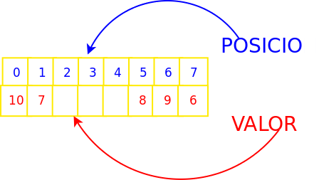
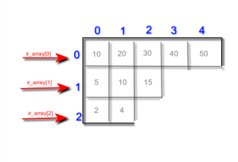

Tema 5. Arrais i col·leccions
Resultat d'aprenentatge associat
RA6. Escriu programes que manipulin informació seleccionant i utilitzant tipus avançats de dades.
Criteris d'avaluació
- RA6.1. S'han escrit programes que utilitzin arrais.
- RA6.2. S'han reconegut les llibreries de classes relacionades amb tipus de dades avançats.
- RA6.3. S'han utilitzat llistes per emmagatzemar i processar informació.
- RA6.4. S'han utilitzat iteradors per recórrer els elements de les llistes.
- RA6.5. S'han reconegut les característiques i avantatges de cadascuna de les col·leccions de dades disponibles.
- RA6.6. S'han creat classes i mètodes genèrics.
- RA6.7. S'han utilitzat expressions regulars en la recerca de patrons en cadenes de text.
- RA6.8. S'han identificat les classes relacionades amb el tractament de documents XML.
- RA6.9. S'han realitzat programes que realitzin manipulacions sobre documents XML.
Introducció
Fins ara havíem treballat amb tipus de dades simples: int, char, double, float, bool... però que passa si necessitarem guardar un conjunt de dades o informació relativa a una persona? Nom, cognoms, DNI, adreça postal, data de naixement etc? Amb els tipus de dades simples ens seria impossible representar aquesta informació. Es per això que s’utilitzen els tipus de dades compostos que ens permetran agrupar de diverses maneres aquesta informació.
Ens podem trobar diversos tipus de dades compostos i en aquest tema veurem:
- arrais: també coneguts com vectors o arreglos, contenen elements d'un mateix tipus base o objectes de la mateixa classe i poden tindre vàries dimensions.
- Estructures: conjunt d'elements heterogenis, no tenen per què ser del mateix tipus base.
- Col·leccions: Objectes predefinits al framework amb múltiples funcionalitats diferents.
Arrais
Criteris d'avaluació associats
- RA6.1. S'han escrit programes que utilitzin arrais.
Comencem per veure l'estructura més simple de totes, l'arrai. Un arrai és una estructura de dades que permet emmagatzemar un nombre fix d'elements del mateix tipus. Cada element ocupa una posició determinada i s'hi accedeix mitjançant un índex. Amb un únic identificador podem tenir accés a un conjunt de valors agrupats. Aquestes agrupacions o arrais poden bé ser de tipus simples o també de tipus compostos.
Per tal d’accedir a cadascun dels elements del arrai s’utilitza un índex o posició. La primera posició de tot arrai és la 0 mentre que la segona seria la que té índex 1. Açò pot marejar un poc al principi.
- Arrai d’enters: {8,2,14,55,3,7}
- Arrai de caràcters: {‘n’,’a’,’t’,’o’}
- Arrai de cadenes: {"hola", "ciao", "hi", "allo"}
- Arrai d'objectes: PVector [] punts = new PVector[10];
Posició vs valor
És molt important distingir entre valor i posició. Mentre que el valor és el contingut de l’arrai en una posició determinada la posició és l’índex que ens permet recorres l’arrai i tot el seu contingut.

A l’exemple anterior tenim un arrai de 8 enters, la part superior de color blau ens indica les posicions que van de la 0 a la 7, 8 posicions ens total. Mentre que a la fila inferior trobarem el valor que conté cadascuna de les posicions. Per exemple en la posició 5 (la sisena) de l’arrai tindríem emmagatzemat un valor de 8.
L'índex no és el valor. L'índex indica on està situat un element; el valor és la dada que hi ha en aquella posició.
Un altre concepte a tenir en compte és la grandària de l’arrai que ens determina el total d’elements que es poden guardar en aquest. En el nostre cas la mida seria de 8.
Però com podem escriure en Java el mateix esquema que es mostra a la figura anterior?
Declaració i creació
Un arrai en Java és una estructura de dades que ens permet emmagatzemar un conjunt de dades del mateix tipus. La grandària de l’arrai es determina en la seua creació i no es permet la seua modificació posterior
Alguns exemples:
Aquesta forma de declarar i inicialitzar arrais es pot fer en una sola línia de la següent forma:
Inicialització d'un arrai
Per tal d’accedir a les dades que conté un arrai necessitem l’identificador d’aquest així com també la posició concreta a la qual volem accedir. Per exemple, imaginem un arrai d’enters que es diu números.
A l'exemple anterior hauríem creat un arrai de 5 enters que contindria els nombres parells fins al 10.
Diferència entre declaració creació i inicialització
És molt important que coneixeu bé aquests conceptes:
- Declaració: assignació de nom i tipus.
- Creació: reserva d'espai necessari.
- Inicialització: assignació de valors.
Fins ara tots aquests conceptes anaven lligats quan només utilitzavem tipus de dades bàsics, per exemple, quan creavem en un programa nostre una variable de tipus enter, en la mateixa línia anava la declaració (donem nom a la variable), la creació (automaticament es reserva l'espai necessari per al tipus de dades que hem creat) i la inicialització (ja que per defecte i segons el tipus bàsic s'assignava un valor inicial). Però ara amb els arrais la cosa és un poc més complexa. Vegem algun exemple.
Repassem el codi anterior. A la línia 1 de codi i només amb aquesta línia hem aconseguit:
- Declaració: es declara una variable amb identificador 'a' i de tipus enter
- Creació: automaticament el compilador li reserva l'espai necessari.
- Inicialització: per defecte se li dona valor 0.
Ara si mirem les línies següents podrem observar que:
- A la línia 2 del codi es produeix la declaració de l'arrai. Hem creat l'arrai i li hem assignat identificador però, quants elements pot emmagatzemar?
- A la línia 3 del codi és on es crea l'arrai, és a dir, es reserva espai en memòria.
- En aquest cas com que el tipus base de l'arrai és enter, la inicialització d'aquest vindria implicita en la reserva de memòria assignant-se valor 0 a tots els elements.
Però com poden inicialitzar cadascun dels elements del nostre arrai de forma manual?
Accés als elements d'un arrai
Una vegada ja tenim la declaració de l’arrai i la seua inicialització, si volem bé accedir al seu contingut o modificar-ho, necessitaríem l’identificador de l’arrai i l’índex al qual volem accedir. És molt important tenir en compte que el primer element d’un arrai en Java està a la posició (índex) 0 i no a la posició 1 com ens indicaria la lògica.
I abans de passar al següent apartat introduirem l'atribut lenght dels arrais. En principi com que la declaració i creació dels arrais es fa de forma manual, en tot moment sabem quina és la longitud dels arrais que anem creant però no cal oblidar que també podem accedir a aquesta característica de la segÜent forma:
Recórrer un arrai
Recórrer un arrai element a element és tan senzill com usar qualsevol de les estructures iteratives que varem veure al Tema 3. Per exemple:
Activitat 501. Declara, crea i inicialitza
Escriu un programa en Java utilitzant Processing IDE que cree un arrai 10 enters. Aquest arrai s'inicialitzarà element a element amb el valor retornat per la funció de Processing API, random. El valor amb el que s'inicialitzarà cada element de l'arrai estarà entre 0 i 100.
Has de tindre en compte que la inicialització de l'arrai s'ha de fer al mètode setup i no al draw.
Per què creus que la inicialització no s'ha de fer dins de draw()?
| Ítem d'avaluació | 4 - Excel·lent | 3 - Correcte | 2 - Parcial | 1 - Incorrecte | 0 - Inexistent o incoherent |
|---|---|---|---|---|---|
| Declaració i creació de l'arrai | Declara l'arrai com a variable global i el crea amb new int[10] dins de setup(). |
Declara l'arrai com a variable global i el crea correctament, però fora de setup(). |
Declara l'arrai correctament, però presenta algun error en la seua creació o grandària. | La declaració o creació de l'arrai és incorrecta. | No declara ni crea l'arrai. |
Ús de random() |
Utilitza correctament random() per generar valors entre 0 i 100 per a tots els elements. |
Utilitza random() correctament, però presenta un xicotet error en els límits del rang. |
Utilitza random(), però només inicialitza alguns elements o presenta diversos errors en el rang. |
Utilitza random() de manera incorrecta i els valors generats no corresponen al que es demana. |
No utilitza random(). |
| Inicialització de l'arrai | Inicialitza els 10 elements dins de setup() amb valors generats per random(). |
Inicialitza els 10 elements correctament, però presenta algun problema menor relacionat amb la ubicació o l'estructura del codi. | Inicialitza només una part dels elements o necessita modificacions per funcionar correctament. | La inicialització és incorrecta o es realitza en un lloc inadequat, com ara draw(). |
No inicialitza l'arrai. |
| Recorregut de l'arrai | Recorre correctament tots els elements de l'arrai sense accedir a posicions fora dels seus límits. | Recorre correctament l'arrai amb algun error menor que no impedeix entendre el procediment. | El recorregut és parcial o presenta errors en la variable de control o en els límits. | El recorregut és incorrecte i impedeix accedir adequadament als elements. | No recorre l'arrai. |
| Visualització de l'arrai | Mostra correctament tots els elements de l'arrai de manera clara. | Mostra els elements de l'arrai correctament, però la presentació és poc clara o presenta algun detall menor. | Només mostra una part dels elements o la visualització presenta errors. | Intenta mostrar l'arrai però el resultat és incorrecte o poc funcional. | No mostra els elements de l'arrai. |
| Organització i comentaris del codi | El codi està ben organitzat, és fàcil de llegir i incorpora comentaris útils quan són necessaris. | El codi està ben organitzat i és llegible, encara que els comentaris podrien millorar-se. | El codi presenta certa desorganització o manca de comentaris en parts rellevants. | El codi és difícil de seguir per una organització deficient i/o per la manca de comentaris. | El codi és desorganitzat, incoherent o pràcticament incomprensible. |
No disponible
Activitat 502. Estadístiques d'un arrai
Crea un arrai de 20 nombres enters i inicialitza'l amb valors aleatoris entre 0 i 100 utilitzant la funció random() de Processing.
Recorre l'arrai i calcula les estadístiques següents:
- la suma de tots els elements;
- la mitjana dels valors;
- el valor màxim;
- el valor mínim;
- la quantitat de nombres parells.
Finalment, mostra per pantalla l'arrai i els resultats obtinguts.
Important: calcula les estadístiques recorrent l'arrai. No utilitzes funcions o mètodes que calculen directament aquests valors.
| Ítem d'avaluació | 4 - Excel·lent | 3 - Correcte | 2 - Parcial | 1 - Incorrecte | 0 - Inexistent o incoherent |
|---|---|---|---|---|---|
| Creació i inicialització de l'arrai | Crea un arrai de 20 enters i inicialitza correctament tots els elements amb valors aleatoris entre 0 i 100. | Crea i inicialitza correctament l'arrai, però presenta algun error menor en la grandària o en el rang dels valors. | L'arrai està creat, però només inicialitza una part dels elements o presenta diversos errors en la inicialització. | La creació o inicialització de l'arrai és incorrecta i impedeix el funcionament esperat del programa. | No crea ni inicialitza l'arrai. |
| Recorregut de l'arrai | Recorre correctament tots els elements de l'arrai amb un bucle adequat, sense omissions ni accessos fora dels límits. | Recorre correctament l'arrai, però presenta algun error menor que no afecta significativament el resultat. | Recorre l'arrai de manera parcial o presenta errors en la variable de control o en els límits. | El recorregut és incorrecte i impedeix calcular adequadament les estadístiques. | No recorre l'arrai. |
| Càlcul de la suma i la mitjana | Calcula correctament la suma de tots els elements i la mitjana, utilitzant un tipus de dada adequat per conservar els decimals. | Calcula correctament la suma i la mitjana, però presenta algun error menor en el tipus de dada o en la presentació del resultat. | Calcula correctament només una de les dues estadístiques o presenta errors en el càlcul de la mitjana. | Els càlculs són incorrectes i els resultats obtinguts no són coherents amb l'arrai. | No calcula ni la suma ni la mitjana. |
| Càlcul del màxim i el mínim | Determina correctament el valor màxim i el valor mínim de l'arrai mitjançant el seu recorregut. | Determina correctament el màxim i el mínim, però presenta algun error menor en la implementació. | Calcula correctament només un dels dos valors o necessita modificacions per funcionar en tots els casos. | El càlcul del màxim i el mínim és incorrecte. | No calcula el màxim ni el mínim. |
| Comptatge dels nombres parells | Compta correctament tots els nombres parells de l'arrai mitjançant una condició adequada. | Compta correctament els nombres parells, però presenta algun error menor en la implementació. | El comptatge funciona només en alguns casos o presenta errors en la condició utilitzada. | El comptatge és incorrecte i no reflecteix la quantitat real de nombres parells. | No compta els nombres parells. |
| Visualització dels resultats | Mostra de manera clara l'arrai i totes les estadístiques calculades, identificant cada resultat. | Mostra l'arrai i les estadístiques, però alguna informació no està clarament identificada o presentada. | Mostra només una part de l'arrai o de les estadístiques calculades. | La visualització és incorrecta o no permet identificar adequadament els resultats. | No mostra els resultats. |
| Organització i comentaris del codi | El codi està ben estructurat, és llegible i incorpora comentaris útils per explicar les parts més rellevants. | El codi està ben organitzat i és llegible, encara que els comentaris podrien millorar-se. | El codi presenta certa desorganització o manca comentaris en parts rellevants. | El codi és difícil de seguir per una organització deficient i/o per la manca de comentaris. | El codi és desorganitzat, incoherent o pràcticament incomprensible. |
No disponible
Arrais de caracters
Un arrai que conté caràcters en lloc de números funciona d’una forma molt semblant al que s’ha explicat en els apartats anteriors. Es pot veure de forma senzilla a l’exemple que vos mostrem a continuació.
Activitat 503. Arrai de caracters
Crea un arrai de 10 caracters. Inicialitza'l amb caracters aleatoris i mostra'l per pantalla. Després recorre l'arrai i compta quantes vocals té.
| Ítem d'avaluació | 4 - Excel·lent | 3 - Correcte | 2 - Parcial | 1 - Incorrecte | 0 - Inexistent o incoherent |
|---|---|---|---|---|---|
| Creació i inicialització de l'arrai | Crea correctament un arrai de 10 caràcters i inicialitza tots els elements amb caràcters aleatoris. | Crea i inicialitza correctament l'arrai, però presenta algun error menor que no afecta el funcionament general. | Crea l'arrai però només inicialitza una part dels elements o presenta diversos errors en la inicialització. | La creació o inicialització de l'arrai és incorrecta i impedeix el funcionament esperat. | No crea ni inicialitza l'arrai. |
| Generació de caràcters aleatoris | Genera correctament caràcters aleatoris i els assigna als 10 elements de l'arrai. | Genera caràcters aleatoris correctament, però presenta algun error menor en el procés. | Genera alguns caràcters correctament, però el procés presenta errors o no cobreix tots els elements. | Intenta generar caràcters aleatoris, però el resultat no correspon al que es demana. | No genera caràcters aleatoris. |
| Recorregut de l'arrai | Recorre correctament tots els elements de l'arrai amb un bucle adequat. | Recorre correctament l'arrai, però presenta algun error menor que no afecta significativament el resultat. | Recorre l'arrai de manera parcial o presenta errors en la variable de control o en els límits. | El recorregut és incorrecte i impedeix processar adequadament els caràcters. | No recorre l'arrai. |
| Comptatge de vocals | Identifica correctament les vocals i compta totes les que apareixen a l'arrai. | Compta correctament les vocals, però presenta algun error menor en la condició utilitzada. | Identifica i compta només una part de les vocals o presenta diversos errors en la condició. | El comptatge és incorrecte i no reflecteix la quantitat real de vocals. | No compta les vocals. |
| Visualització de l'arrai i del resultat | Mostra clarament l'arrai de caràcters i la quantitat de vocals trobades. | Mostra correctament l'arrai i la quantitat de vocals, però la presentació podria ser més clara. | Mostra només una part de la informació o presenta errors en la visualització. | La visualització és incorrecta o no permet identificar els resultats. | No mostra l'arrai ni el resultat. |
| Organització i comentaris del codi | El codi està ben estructurat, és llegible i incorpora comentaris útils quan són necessaris. | El codi està ben organitzat i és llegible, encara que els comentaris podrien millorar-se. | El codi presenta certa desorganització o manca comentaris en parts rellevants. | El codi és difícil de seguir per una organització deficient i/o per la manca de comentaris. | El codi és desorganitzat, incoherent o pràcticament incomprensible. |
No disponible
Arrais com a paràmetres
Un arrai es pot passar com a paràmetre d'un mètode. El mètode rep una referència al mateix array, de manera que pot consultar-ne o modificar-ne els elements.
No passa el mateix si passem un element concret de l’arrai, en aquest cas a l’igual que amb els altres paràmetres, aquests es passen per valor, per tant les modificacions o canvis que es produeixen dins del mètode no afectaran fora d’aquest.
Activitat 504. Mostra arrai amigablement
Seguint amb el codi anterior, fes dos mètodes per la nostra aplicació que mostre, de forma amigable, l’arrai de números i l’arrai de caràcters. Els mètodes es podrien dir mostraEnters i mostraCaracters. Utilitza totes les funcions que conegues de Processing IDE per tal que mostre els arrais de la forma més estètica possible.
Igual podria ser útil que li afegires coordenades (x,y) com a paràmetres a la funció de mostrar arrais per tal de poder indicar-li on vols que es mostren.
| Ítem d'avaluació | 4 - Excel·lent | 3 - Correcte | 2 - Parcial | 1 - Incorrecte | 0 - Inexistent o incoherent |
|---|---|---|---|---|---|
Mètode mostraEnters |
Defineix i implementa correctament el mètode mostraEnters(int[] array, float x, float y) i mostra tots els elements de l'arrai de manera clara i ordenada. |
Defineix i implementa correctament el mètode i mostra els elements de l'arrai, amb algun error menor en la presentació. | El mètode està definit però només mostra una part de l'arrai o presenta errors en els paràmetres o en el recorregut. | La definició o implementació del mètode és incorrecta i no permet mostrar adequadament l'arrai. | No crea ni implementa el mètode. |
Mètode mostraCaracters |
Defineix i implementa correctament el mètode mostraCaracters(char[] array, float x, float y) i mostra tots els caràcters de manera clara i ordenada. |
Defineix i implementa correctament el mètode i mostra els caràcters, amb algun error menor en la presentació. | El mètode està definit però només mostra una part dels caràcters o presenta errors en els paràmetres o en el recorregut. | La definició o implementació del mètode és incorrecta i no permet mostrar adequadament l'arrai. | No crea ni implementa el mètode. |
| Paràmetres dels mètodes | Utilitza correctament l'arrai i les coordenades x i y com a paràmetres, permetent decidir on es mostra cada arrai. |
Utilitza correctament els paràmetres, però presenta algun error menor en l'ús de les coordenades. | Utilitza els paràmetres de manera parcial o les coordenades no tenen l'efecte esperat en tots els casos. | Els paràmetres estan mal definits o s'utilitzen de manera incorrecta. | No utilitza paràmetres adequadament. |
| Recorregut i accés als elements | Recorre correctament tots els elements dels arrais i accedeix a cadascun mitjançant el seu índex. | Recorre correctament els arrais, però presenta algun error menor que no afecta significativament el resultat. | El recorregut és parcial o presenta errors en els índexs o en els límits. | El recorregut és incorrecte i impedeix mostrar adequadament els elements. | No recorre els arrais. |
| Presentació gràfica | Utilitza adequadament les funcions de Processing per crear una presentació clara, ordenada i visualment cuidada dels dos arrais. | La presentació és clara i utilitza diverses funcions de Processing, encara que podria millorar-se estèticament. | La presentació permet veure els elements, però és poc clara, repetitiva o aprofita poc les possibilitats de Processing. | La presentació és confusa o dificulta la visualització dels elements. | No presenta els arrais gràficament. |
| Reutilització i organització del codi | Els mètodes són independents, reutilitzables i estan ben organitzats, evitant repetir codi innecessàriament. | Els mètodes estan ben organitzats i són reutilitzables, amb alguna repetició menor. | Els mètodes funcionen però presenten certa repetició o una organització millorable. | El codi presenta molta repetició o una organització deficient que dificulta la reutilització. | El codi és desorganitzat, incoherent o no permet reutilitzar els mètodes. |
| Organització i comentaris del codi | El codi està ben estructurat, és llegible i incorpora comentaris útils per explicar les parts més rellevants. | El codi està ben organitzat i és llegible, encara que els comentaris podrien millorar-se. | El codi presenta certa desorganització o manca comentaris en parts rellevants. | El codi és difícil de seguir per una organització deficient i/o per la manca de comentaris. | El codi és desorganitzat, incoherent o pràcticament incomprensible. |
No disponible
Activitat 505. Fes una traça
Fes una traça al codi anterior i observa com els diferents bucles recorren l'arrai. Escriu la teua conclusió a un comentari de documentació al codi.
Coses que has de tindre en compte per fer una bona traça: - Identificar el valor de i en cada iteració. - Indicar quin element arrai[i] s'està consultant. - Observar quan acaba el bucle. - comparar diferents bucles si en el codi anterior m'hi ha més d'un.
Pots utilitzar println per mostrar missatges per consola a mode de depuaració.
| Ítem d'avaluació | 4 - Excel·lent | 3 - Correcte | 2 - Parcial | 1 - Incorrecte | 0 - Inexistent o incoherent |
|---|---|---|---|---|---|
| Traça del recorregut | Realitza una traça completa i ordenada del recorregut de l'arrai, indicant el valor de i en cada iteració i l'element array[i] consultat. |
Realitza correctament la traça, però presenta alguna omissió o error menor. | Realitza la traça només parcialment o presenta diversos errors en els valors de i o en els elements consultats. |
La traça és majoritàriament incorrecta i no permet entendre el recorregut del bucle. | No realitza la traça o la informació aportada és incoherent. |
| Finalització del bucle | Identifica correctament la condició que fa finalitzar el bucle i explica quan i per què deixa de recórrer l'arrai. | Identifica correctament quan finalitza el bucle, però l'explicació és poc detallada. | Identifica el final del bucle, però presenta errors en l'explicació de la condició o de l'última iteració. | No identifica correctament quan o per què finalitza el bucle. | No analitza la finalització del bucle. |
| Comparació dels bucles | Compara correctament els diferents bucles del codi i explica les diferències en la manera de recórrer l'arrai. | Compara els bucles i identifica les diferències principals, amb algun error menor. | Fa una comparació parcial, però no explica amb claredat les diferències entre els recorreguts. | La comparació és incorrecta o no permet identificar les diferències entre els bucles. | No compara els bucles. |
Ús de println() per a la depuració |
Utilitza println() de manera adequada per comprovar i comprendre els valors de les variables i els elements consultats durant l'execució. |
Utilitza println() correctament per comprovar el recorregut, encara que podria mostrar informació més útil. |
Utilitza println() però els missatges aporten poca informació o no permeten seguir clarament l'execució. |
Utilitza println() de manera inadequada o sense relació clara amb la depuració del programa. |
No utilitza println() quan és necessari per comprovar el funcionament del programa. |
| Conclusió | Escriu una conclusió clara i correcta en un comentari de documentació, relacionant-la amb el comportament observat durant la traça. | Escriu una conclusió correcta relacionada amb la traça, encara que podria estar més desenvolupada. | La conclusió és parcial o presenta alguna interpretació incorrecta del recorregut. | La conclusió és incorrecta o no està relacionada adequadament amb la traça realitzada. | No escriu cap conclusió o aquesta és incoherent. |
| Organització i comentaris del codi | La traça i les proves de depuració estan ben organitzades i el comentari de documentació és clar i està correctament situat. | El codi està ben organitzat i el comentari és adequat, amb algun aspecte menor millorable. | El codi presenta certa desorganització o el comentari és poc clar. | El codi és difícil de seguir i els comentaris són insuficients o inadequats. | El codi és desorganitzat, incoherent o pràcticament incomprensible. |
No disponible
Arrais multidimensionals
Criteris d'avaluació associats
- RA6.1. S'han escrit programes que utilitzin arrais.
Fins ara hem estan utilitzant arrais d’una sola dimensió, coneguts també com vectors. Aquests arrais es recorren amb ajuda d’un sol índex (tenen una sola dimensió). En aquest apartat estudiarem arrais de més d’una dimensió per als que necessitarem més d’un índex a l’hora de ser recorreguts.
Els arrais multidimensionals més comuns són els de dues dimensions o bidimensionals, també coneguts com matrius. És comú representar aquest tipus de dades com una taula composta per una sèrie de files i columnes:
| 0,0 | 0,1 | 0,2 | 0,3 | ... | 0,N |
| 1,0 | 1,1 | 1,2 | 1,3 | ... | 1,N |
| 2,0 | 2,1 | 2,2 | 2,3 | ... | 2,N |
| ... | ... | ... | ... | ... | ... |
| N,0 | N,1 | N,2 | N,3 | ... | N,N |
Al contrari del que passava amb els arrais d’una sola dimensió on només necessitavem un índex per accedir al valor, en els arrais de dues dimensions com el de l’exemple anterior, necessitarem dos índex per accedir al valor de l’arrai.
Les matrius, com es coneixen els arrais bidimensionals es forme per files i columnes.
Declaració i creació d'un arrai multidimensional
Per tal de declarar una matriu en java, és a dir, un arrai de dues dimensions, ho farem de la següent forma:Ç
Si es fixeu, mentre quan declaravem un arrai d’una sola dimensió utilitzavem només un parell de claudàtors:
És fàcil deduir que si volguerem declarar un arrai de tres dimensions, hauriem d’utilitzar tres parells de claudàtors.
Amb aquesta instrucció el que estem fent es declarar la matriu però no li hem dit quina grandària tindrà. Eixa és la diferència entre declaració i creació. Per tal de crear, és a dir, reservar espai per a la nostra matriu, hem de fer el següent:
On n i m són valors enters que ens indiquen la grandària de cada dimensió. Per exemple, per declarar i crear una matriu d’enters de 5 files i 10 columnes fariem el següent:
Què és cada índex?
Quan fem una declaració com la següent en Java:
El primer índex, el 3, indica el nombre total de files mentre que el 9 ens indica el nombre total de columnes que té la nostra matriu.
Inicialització d'un arrai multidimensional
El procés d’inicialització d’un arrai, dona igual les dimensions que tinga, consisteix en donar-li valor a les cel·les que inicialment estarien inicialitzades amb tipus per defecte del tipus base escollit. Per exemple, amb les matrius que estem declarant i creant, que són matrius amb tipus base enter, el seu valor inicial seria zero i no buit.
Per tal d’inicialitzar-la element a element hauriem d’executar les següents sentències:
Accés als elements d'un arrai multidimensional
Per accedir a una dada en un arrai multidimensional hem de coneixer els índex de posició d’aquest. En un arrai de dues dimensions, per accedir a una dada s’ha d’indicar la fila i la columna d’on es troba aquesta informació.
Per exemple, imaginem que tenim la següent taula (arrai de dues dimensions)
| 12 | 13 | 5 | 9 | 22 | 14 |
| 21 | 11 | 8 | 56 | 23 | 7 |
| 6 | 10 | 32 | 36 | 24 | 99 |
| 78 | 55 | 57 | 79 | 18 | 14 |
I volem que em mostre per pantalla els elements que formen part de la segona fila. Mira el següent codi:
Recórrer un arrai multidimensional
Si et fixes en el codi anterior, veuràs que existeix una constant COLUMNES que ens indicaria el total de columnes amb el que hem inicialitzat la matriu d'enters, però igual que passava amb els arrais d'una sola dimensió, seria més professional usar l'atribut length com es mostra a continuació:
Finalment si volem usar l'atribut length per recórrer tota la matriu de dues dimensions, també podriem fer el següent:
Activitat 506. Fes una traça d'una matriu
Declara, crea i inicialitza una matriu com la del exemple anterior, fes una traça i observa com els diferents bucles recorren la matriu. Escriu la teua conclusió a un comentari de documentació al codi.
Coses que has de tindre en compte per fer una bona traça: - Identificar el valor dels índex en cada iteració. - Indicar quin element matriu[i][j] s'està consultant. - Observar quan acaba el bucle. - comparar diferents bucles si en el codi anterior m'hi ha més d'un.
Pots utilitzar println per mostrar missatges per consola a mode de depuaració.
| Ítem d'avaluació | 4 - Excel·lent | 3 - Correcte | 2 - Parcial | 1 - Incorrecte | 0 - Inexistent o incoherent |
|---|---|---|---|---|---|
| Traça dels índexs | Realitza una traça completa i ordenada, indicant correctament els valors de i i j en cada iteració. |
Realitza correctament la traça, però presenta alguna omissió o error menor en els índexs. | Realitza la traça només parcialment o presenta diversos errors en els valors de i i j. |
La traça és majoritàriament incorrecta i no permet entendre el recorregut de la matriu. | No realitza la traça o la informació aportada és incoherent. |
| Accés als elements de la matriu | Identifica correctament en cada iteració l'element matriu[i][j] que s'està consultant. |
Identifica correctament la majoria dels elements, amb algun error menor. | Identifica només una part dels elements o confon alguns índexs amb els valors de la matriu. | L'accés als elements és majoritàriament incorrecte i no permet seguir el recorregut. | No identifica els elements consultats. |
| Finalització dels bucles | Identifica correctament quan finalitza cada bucle i explica la relació entre els límits dels índexs i les dimensions de la matriu. | Identifica correctament la finalització dels bucles, però l'explicació és poc detallada. | Identifica el final dels bucles, però presenta errors en l'explicació dels límits o de les iteracions. | No identifica correctament quan o per què finalitzen els bucles. | No analitza la finalització dels bucles. |
| Comparació dels bucles | Compara correctament els diferents bucles del codi i explica les diferències en la manera de recórrer la matriu. | Compara els bucles i identifica les diferències principals, amb algun error menor. | Fa una comparació parcial, però no explica amb claredat les diferències entre els recorreguts. | La comparació és incorrecta o no permet identificar les diferències entre els bucles. | No compara els bucles. |
| Conclusió | Escriu una conclusió clara i correcta en un comentari de documentació, relacionant-la amb el comportament observat durant la traça. | Escriu una conclusió correcta relacionada amb la traça, encara que podria estar més desenvolupada. | La conclusió és parcial o presenta alguna interpretació incorrecta del recorregut de la matriu. | La conclusió és incorrecta o no està relacionada adequadament amb la traça realitzada. | No escriu cap conclusió o aquesta és incoherent. |
| Organització i comentaris del codi | La traça, les proves de depuració i el comentari de documentació estan ben organitzats i faciliten la comprensió del recorregut. | El codi està ben organitzat i el comentari és adequat, amb algun aspecte menor millorable. | El codi presenta certa desorganització o el comentari és poc clar. | El codi és difícil de seguir i els comentaris són insuficients o inadequats. | El codi és desorganitzat, incoherent o pràcticament incomprensible. |
No disponible
Activitat 507. Recorre i mostra una matriu
Seguint amb la matriu anterior, fes un algorisme que mostre la matriu per pantalla de la forma més elegatn que consideres. Podries per exemple: - Representar cada element de la matriu com un quadrat - canviar el color segons el valor - etc..
D'altra banda i de forma transparent a l'usuari, el teu algoritme ha de: - sumar tots els elements. - trobar el màxim - comptar parells. - calcular la suma de les columnes.
| Ítem d'avaluació | 4 - Excel·lent | 3 - Correcte | 2 - Parcial | 1 - Incorrecte | 0 - Inexistent o incoherent |
|---|---|---|---|---|---|
| Recorregut de la matriu | Recorre correctament tots els elements de la matriu mitjançant els índexs adequats, sense omissions ni accessos fora dels límits. | Recorre correctament la matriu, però presenta algun error menor que no afecta significativament el resultat. | Recorre la matriu de manera parcial o presenta diversos errors en els índexs o en els límits. | El recorregut és majoritàriament incorrecte i impedeix processar adequadament la matriu. | No recorre la matriu. |
| Representació gràfica | Representa tots els elements de la matriu de manera clara, elegant i coherent, utilitzant adequadament formes, posicions i/o colors. | Representa correctament la matriu i els seus elements, amb algun aspecte gràfic millorable. | La representació permet reconèixer la matriu, però presenta errors de posició, escala, colors o alguns elements no es mostren correctament. | La representació és poc clara o presenta errors importants que dificulten identificar la matriu. | No representa la matriu gràficament. |
| Càlcul de la suma i del màxim | Calcula correctament la suma de tots els elements i determina el valor màxim durant el recorregut de la matriu. | Calcula correctament la suma i el màxim, però presenta algun error menor en la implementació o presentació. | Calcula correctament només una de les dues operacions o presenta errors que afecten alguns casos. | Els càlculs són majoritàriament incorrectes i els resultats no són fiables. | No calcula ni la suma ni el màxim. |
| Comptatge dels nombres parells | Compta correctament tots els elements parells de la matriu mitjançant una condició adequada. | Compta correctament els nombres parells, amb algun error menor en la implementació. | El comptatge funciona només en alguns casos o presenta errors en la condició utilitzada. | El comptatge és incorrecte i no reflecteix la quantitat real de nombres parells. | No compta els nombres parells. |
| Suma de les columnes | Calcula correctament la suma de cada columna i conserva els resultats de manera diferenciada. | Calcula correctament les sumes de les columnes, amb algun error menor en la implementació o presentació. | Calcula correctament només algunes columnes o presenta errors en els índexs utilitzats. | La suma de les columnes és majoritàriament incorrecta. | No calcula la suma de les columnes. |
| Integració de les operacions | Integra de manera eficient el recorregut, la representació i totes les operacions sol·licitades, evitant recorreguts innecessaris. | Integra correctament les diferents operacions, encara que podria millorar l'organització del recorregut. | Les operacions funcionen, però estan poc integrades o es realitzen de manera poc eficient. | Les diferents parts funcionen de manera desconnectada o presenten errors d'integració importants. | No aconsegueix integrar les operacions requerides. |
| Organització i qualitat del codi | El codi està molt ben estructurat, és llegible i separa adequadament la lògica de càlcul de la representació gràfica. | El codi està ben organitzat i és llegible, amb algun aspecte menor millorable. | El codi presenta certa desorganització, duplicitats o dificultats de lectura. | El codi és difícil de seguir per una organització deficient o per errors estructurals. | El codi és desorganitzat, incoherent o pràcticament incomprensible. |
No disponible
Finalment per tal d’entendre i assolir perfectament el concepte de matriu o arrai bidimensional, realitzarem un exercici on treballarem amb les típiques matrius matemàtiques, realitzant les operacions pròpies d’aquestes.
Activitat 508. Treballa amb dues matrius
Crea un algorisme en el que es declaren dues matrius d'enters de 3 files i 3 columnes cadascuna. Fes que aquestes matrius s'inicialitzen de forma aleatoria al principi del programa i després has d'agonseguir que l'usuari puga realitzar les següents accions amb les matrius: 1. Mostrar matrius per pantalla. 2. Inicialitzar les matrius de forma aleatòria. 3. Resultat de la suma de les matrius. 4. Producte de les matrius per un escalar. 5. Producte de les dues matrius. 6. Transposada de les matrius
| Ítem d'avaluació | 4 - Excel·lent | 3 - Correcte | 2 - Parcial | 1 - Incorrecte | 0 - Inexistent o incoherent |
|---|---|---|---|---|---|
| Declaració i inicialització de les matrius | Declara correctament dues matrius d'enters de 3 × 3 i les inicialitza adequadament, incloent la inicialització aleatòria a l'inici del programa. | Declara i inicialitza correctament les dues matrius, amb algun error menor en la implementació. | Les matrius estan declarades i creades, però presenta errors en la grandària o en la inicialització. | La declaració o inicialització és majoritàriament incorrecta i impedeix treballar adequadament amb les matrius. | No declara ni crea les matrius. |
| Menú i interacció amb l'usuari | Implementa un sistema d'interacció clar que permet seleccionar i executar correctament totes les operacions sol·licitades. | Permet seleccionar i executar les operacions, amb algun error menor en la interacció. | La interacció funciona només parcialment o algunes opcions no es gestionen correctament. | La interacció presenta errors importants i dificulta l'ús del programa. | No implementa cap mecanisme d'interacció. |
| Visualització de les matrius | Mostra correctament les dues matrius, de manera clara i diferenciada, permetent identificar fàcilment tots els seus elements. | Mostra correctament les matrius, encara que la presentació podria millorar-se. | Mostra les matrius parcialment o amb problemes de format que en dificulten la lectura. | La visualització és incorrecta o no permet identificar adequadament les matrius. | No mostra les matrius. |
| Suma de matrius | Calcula correctament la suma de les dues matrius, element a element, i mostra el resultat. | Calcula correctament la suma, amb algun error menor en la implementació o presentació. | La suma és parcialment correcta o presenta errors en alguns elements. | El càlcul de la suma és majoritàriament incorrecte. | No implementa la suma de les matrius. |
| Producte per un escalar | Multiplica correctament tots els elements d'una matriu per l'escalar indicat i mostra el resultat. | Realitza correctament el producte per un escalar, amb algun error menor. | Multiplica només una part dels elements o presenta errors en el càlcul. | El producte per un escalar és majoritàriament incorrecte. | No implementa el producte per un escalar. |
| Producte de les matrius | Calcula correctament el producte matricial de les dues matrius, aplicant la combinació adequada de files i columnes. | Calcula correctament el producte matricial, amb algun error menor en la implementació. | El producte és parcialment correcte, però presenta errors en alguns elements o en els índexs. | El càlcul del producte matricial és majoritàriament incorrecte. | No implementa el producte de les matrius. |
| Matriu transposada | Calcula correctament la transposada de les matrius, intercanviant files i columnes, i mostra els resultats. | Calcula correctament les transposades, amb algun error menor en la implementació o presentació. | La transposada és parcialment correcta o presenta errors en alguns elements. | La transposada és majoritàriament incorrecta. | No implementa la transposada. |
| Organització i qualitat del codi | El codi està molt ben estructurat, separa les diferents operacions en mètodes adequats, és llegible i evita repeticions innecessàries. | El codi està ben organitzat i és llegible, encara que podria millorar la separació de responsabilitats o la reutilització. | El codi funciona però presenta certa desorganització, repeticions o mètodes poc adequats. | El codi és difícil de seguir per una organització deficient o per errors estructurals. | El codi és desorganitzat, incoherent o pràcticament incomprensible. |
No disponible
Arrays de tres dimensions
Criteris d'avaluació associats
- RA6.1. S'han escrit programes que utilitzin arrais.
Fins ara hem treballat amb arrays d'una i dues dimensions. En un array d'una dimensió necessitàvem un índex per accedir a cada element, mentre que en un array de dues dimensions necessitàvem dos índexs: un per indicar la fila i un altre per indicar la columna.
També podem crear arrays de més dimensions. En aquest apartat veurem breument els arrays de tres dimensions, que necessiten tres índexs per accedir a cadascun dels seus elements.
Podem imaginar un array de tres dimensions com un conjunt de matrius bidimensionals superposades. Per exemple, podríem tenir diverses taules, i cada taula estaria formada per files i columnes.
En un array de tres dimensions, els tres índexs poden representar:
- la matriu o capa,
- la fila,
- la columna.
Per exemple, en dades[2][3][4]:
2indica la tercera capa o matriu;3indica la quarta fila;4indica la cinquena columna.
Recorda que, igual que en els arrays d'una i dues dimensions, els índexs comencen sempre en 0.
Declaració i creació
Per declarar un array de tres dimensions utilitzarem tres parells de claudàtors:
Aquesta instrucció declara la variable dades, però encara no crea l'array. Per crear-lo, hem d'indicar la grandària de cadascuna de les tres dimensions:
En aquest cas tenim:
3capes o matrius;4files en cada capa;5columnes en cada fila.
Per tant, l'array conté:
També podem separar la declaració i la creació:
Inicialització i accés
Podem inicialitzar un array de tres dimensions indicant els seus valors directament:
En aquest exemple tenim:
- 2 capes;
- 2 files en cada capa;
- 3 columnes en cada fila.
Per accedir a un element necessitem tres índexs:
En aquest cas estem accedint a:
- la capa
0; - la fila
1; - la columna
2.
El valor obtingut és 6.
També podem modificar un element de la mateixa manera:
Ara el valor de la posició [1][0][1] serà 20.
Recorregut d'un array de tres dimensions
Per recórrer tots els elements d'un array de tres dimensions necessitarem tres bucles, un per cadascuna de les dimensions:
El primer bucle recorre les capes, el segon les files i el tercer les columnes.
Podem representar el recorregut de la manera següent:
Per exemple, per a:
el recorregut serà:
capa 0
fila 0 → columnes 0, 1, 2, 3
fila 1 → columnes 0, 1, 2, 3
fila 2 → columnes 0, 1, 2, 3
capa 1
fila 0 → columnes 0, 1, 2, 3
fila 1 → columnes 0, 1, 2, 3
fila 2 → columnes 0, 1, 2, 3
Grandària de les dimensions
Igual que en els arrays bidimensionals, podem utilitzar la propietat length per conèixer la grandària de cada dimensió.
Per això, quan recorrem un array de tres dimensions, és preferible utilitzar length:
D'aquesta manera, els bucles s'adapten a la grandària real de l'array.
Important
Els arrays de tres dimensions són una extensió del mateix concepte que ja coneixem. La diferència principal és que ara necessitem tres índexs i, per recórrer-los, normalment utilitzarem tres bucles niats.
Activitat 509. Fes una traça a una matriu de tres dimensions
Declara, crea i inicialitza una matriu de tres dimensions, fes una traça i observa com els diferents bucles recorren la matriu. Escriu la teua conclusió a un comentari de documentació al codi.
Coses que has de tindre en compte per fer una bona traça:
- Identificar el valor dels índex en cada iteració.
- Indicar quin element matriu[i][j][k] s'està consultant.
- Observar quan acaba el bucle.
- comparar diferents bucles si en el codi anterior m'hi ha més d'un.
Pots utilitzar println per mostrar missatges per consola a mode de depuaració.
| Ítem d'avaluació | 4 - Excel·lent | 3 - Correcte | 2 - Parcial | 1 - Incorrecte | 0 - Inexistent o incoherent |
|---|---|---|---|---|---|
| Traça dels índexs | Realitza una traça completa i ordenada, indicant correctament els valors de i, j i k en cada iteració. |
Realitza correctament la traça, però presenta alguna omissió o error menor en els índexs. | Realitza la traça només parcialment o presenta diversos errors en els valors de i, j o k. |
La traça és majoritàriament incorrecta i no permet entendre el recorregut de la matriu. | No realitza la traça o la informació aportada és incoherent. |
| Accés als elements de la matriu | Identifica correctament en cada iteració l'element matriu[i][j][k] que s'està consultant. |
Identifica correctament la majoria dels elements, amb algun error menor. | Identifica només una part dels elements o confon alguns índexs amb els valors de la matriu. | L'accés als elements és majoritàriament incorrecte i no permet seguir el recorregut. | No identifica els elements consultats. |
| Finalització dels bucles | Identifica correctament quan finalitza cada bucle i explica la relació entre els límits dels índexs i les dimensions de la matriu. | Identifica correctament la finalització dels bucles, però l'explicació és poc detallada. | Identifica el final dels bucles, però presenta errors en l'explicació dels límits o de les iteracions. | No identifica correctament quan o per què finalitzen els bucles. | No analitza la finalització dels bucles. |
| Comparació dels bucles | Compara correctament els diferents bucles del codi i explica les diferències en la manera de recórrer la matriu tridimensional. | Compara els bucles i identifica les diferències principals, amb algun error menor. | Fa una comparació parcial, però no explica amb claredat les diferències entre els recorreguts. | La comparació és incorrecta o no permet identificar les diferències entre els bucles. | No compara els bucles. |
| Conclusió | Escriu una conclusió clara i correcta en un comentari de documentació, relacionant-la amb el comportament observat durant la traça. | Escriu una conclusió correcta relacionada amb la traça, encara que podria estar més desenvolupada. | La conclusió és parcial o presenta alguna interpretació incorrecta del recorregut de la matriu. | La conclusió és incorrecta o no està relacionada adequadament amb la traça realitzada. | No escriu cap conclusió o aquesta és incoherent. |
| Organització i comentaris del codi | La traça, les proves de depuració i el comentari de documentació estan ben organitzats i faciliten la comprensió del recorregut. | El codi està ben organitzat i el comentari és adequat, amb algun aspecte menor millorable. | El codi presenta certa desorganització o el comentari és poc clar. | El codi és difícil de seguir i els comentaris són insuficients o inadequats. | El codi és desorganitzat, incoherent o pràcticament incomprensible. |
No disponible
Arrais irregulars
Criteris d'avaluació associats
- RA6.1. S'han escrit programes que utilitzin arrais.
Una matriu irregular o escalonada no és més que un arrai d'arrais, on cadascuna de les taules que formen l’arrai no necessàriament han de tenir la mateixa grandària.

La declaració d’un arrai irregular en java seria de la següent manera:
És en aquest tipus de matrius en les que l'atribut length pren realment importància, ja que amb aquest atribut podem en temps d'execució saber quina és la longitud exacta de cada fila.
Activitat 510. Alumnes i assignatures
Una acadèmia ofereix diferents assignatures, però no totes tenen el mateix nombre d'alumnes. A l'assignatura de matemàtiques s'accepten un total de 10 alumnes, a la de biologia un total de 15 i a la de informàtica només 7.
Dissenya una matriu de dades que s'adapte al que demanen a l'acadèmia segons les especificacions anteriors.
Introdueix les dades que considieres necessàries i després recorre la matriu i mostra la informació per pantalla de la forma més elegant que consideres.
| Ítem d'avaluació | 4 - Excel·lent | 3 - Correcte | 2 - Parcial | 1 - Incorrecte | 0 - Inexistent o incoherent |
|---|---|---|---|---|---|
| Disseny de la matriu irregular | Dissenya correctament una matriu irregular que permet emmagatzemar 10 alumnes de Matemàtiques, 15 de Biologia i 7 d'Informàtica, adaptant la longitud de cada fila a les necessitats de cada assignatura. | Dissenya correctament la matriu irregular, però presenta algun error menor en la grandària d'una de les files. | Identifica la necessitat de diferents longituds, però la matriu presenta errors en diverses files o en la seua estructura. | Utilitza una estructura inadequada o no aconsegueix adaptar correctament les files a les necessitats de les assignatures. | No dissenya una estructura de dades funcional per al problema. |
| Creació i inicialització de la matriu | Crea correctament la matriu d'arrays i inicialitza totes les posicions necessàries amb dades coherents. | Crea i inicialitza correctament la matriu, amb algun error menor que no afecta significativament el funcionament. | La matriu està creada però només inicialitza una part de les posicions o presenta diversos errors. | La creació o inicialització és majoritàriament incorrecta i impedeix treballar adequadament amb les dades. | No crea ni inicialitza la matriu. |
| Introducció de les dades | Introdueix dades coherents per als alumnes de les tres assignatures i respecta correctament la capacitat establida per a cadascuna. | Introdueix correctament les dades, amb algun error menor en alguna assignatura. | Introdueix només una part de les dades o presenta errors en diverses assignatures. | Les dades introduïdes són majoritàriament incorrectes o no respecten les capacitats indicades. | No introdueix dades. |
| Recorregut de la matriu irregular | Recorre correctament totes les files i adapta el recorregut a la longitud específica de cadascuna, sense accessos fora dels límits. | Recorre correctament la matriu, amb algun error menor en els límits d'una de les files. | El recorregut és parcial o presenta errors en la gestió de les diferents longituds. | El recorregut és majoritàriament incorrecte i provoca accessos inadequats o dades sense consultar. | No recorre la matriu. |
| Visualització de la informació | Mostra tota la informació de manera clara, ordenada i elegant, diferenciant adequadament les tres assignatures i els seus alumnes. | Mostra correctament la informació i les assignatures, encara que la presentació podria millorar-se. | Mostra la informació parcialment o amb problemes de format que en dificulten la lectura. | La visualització és poc clara o presenta errors importants en les dades mostrades. | No mostra la informació. |
| Comprensió de les matrius irregulars | Utilitza correctament el fet que cada fila pot tindre una longitud diferent i ho reflecteix tant en l'estructura com en el recorregut. | Comprén i aplica correctament el funcionament d'una matriu irregular, amb algun error menor. | Mostra una comprensió parcial del concepte i necessita modificacions per gestionar correctament les files de diferent longitud. | Tracta la matriu com si totes les files tingueren la mateixa longitud o mostra una comprensió insuficient del concepte. | No mostra comprensió del concepte de matriu irregular. |
| Organització i qualitat del codi | El codi està molt ben estructurat, és llegible, utilitza noms significatius i separa adequadament la gestió de les dades i la seua visualització. | El codi està ben organitzat i és llegible, amb algun aspecte menor millorable. | El codi funciona però presenta certa desorganització, noms poc clars o repeticions innecessàries. | El codi és difícil de seguir per una organització deficient o per errors estructurals. | El codi és desorganitzat, incoherent o pràcticament incomprensible. |
No disponible
Activitat 511. Un sudoku simple
El següent codi és un mètode que s'encarrega d'emplenar una matriu de 9x9 seguint la lògica del sudoku
Escriu un programa utilitzant Processing IDE que et mostre un Sudoku per pantalla, que permeta al jugador emplenar les cel·les buides i que comprove si el número escollit es vàlid o no.
| Ítem d'avaluació | 4 - Excel·lent | 3 - Correcte | 2 - Parcial | 1 - Incorrecte | 0 - Inexistent o incoherent |
|---|---|---|---|---|---|
| Ús correcte de la matriu 9x9 | Utilitza correctament la matriu bidimensional, amb recorreguts eficients i sense errors d’índex | La matriu funciona correctament amb petits errors no crítics | Hi ha errors puntuals en accessos o recorreguts | La matriu presenta errors greus de funcionament | No utilitza correctament una matriu 9x9 |
| Generació del Sudoku | El Sudoku es genera correctament i sempre compleix les regles | El Sudoku funciona quasi sempre correctament | La generació és parcialment funcional | El Sudoku presenta errors freqüents | No genera un Sudoku vàlid |
| Representació gràfica | El tauler és clar, alineat i fàcil d’utilitzar | La representació és funcional amb detalls millorables | La interfície és poc clara però usable | La representació dificulta el joc | No hi ha representació funcional |
| Interacció amb l'usuari | Permet seleccionar i editar cel·les correctament amb bona resposta visual | La interacció funciona amb errors menors | Només permet algunes interaccions bàsiques | La interacció és incorrecta o molt limitada | No hi ha interacció funcional |
| Validació de moviments | Comprova correctament files, columnes i submatrius | Detecta la majoria d’errors | La validació és incompleta | La validació és incorrecta | No valida moviments |
| Modularització del codi | El programa està ben estructurat en funcions reutilitzables i coherents | Existeix una estructura acceptable amb certa modularitat | La modularització és limitada | El codi està poc organitzat | Tot el codi és incoherent o desorganitzat |
| Resultat final | Excel·lent | Notable | Bé | Insuficient | Inexistent o Incoherent |
| Qualitat i legibilitat | Variables clares, comentaris útils i bona indentació | El codi és majoritàriament llegible | El codi és difícil de seguir en alguns punts | El codi és confús i poc llegible | El codi és incomprensible o incorrecte |
No disponible
Collections Framework
Criteris d'avaluació associats
- RA6.2. S'han reconegut les llibreries de classes relacionades amb tipus de dades avançats.
- RA6.5. S'han reconegut les característiques i avantatges de cadascuna de les col·leccions de dades disponibles.
Java Collections Framework es el framework de Java que s'encarrega de gestionar tots els tipus de col·leccions que suporta el llenguatge Java. A les seues primeres versions tenia una estructura bastant senzilla però amb el pas del temps s'han anat ampliant els elements.
En aquest apartat veurem una part significativa del framework.
Dels arrays a les col·leccions
Fins ara hem treballat amb arrais, una estructura de dades que ens permet emmagatzemar diversos elements del mateix tipus. Els arrays són molt útils quan coneixem per endavant la quantitat d'elements que necessitem. Per exemple:
En aquest cas hem creat un array amb espai per a 7 valors enters. Però què passa si no sabem quants elements necessitarem?. Una de les principals característiques dels arrays és que la seua grandària queda determinada quan es creen. Per exemple:
Una vegada creat, no podem simplement ampliar-lo perquè necessitem 11 elements:
Si necessitem un array més gran, hem de crear-ne un de nou i copiar-hi els elements de l'antic.
Aquesta operació és possible, però resulta poc còmoda si necessitem afegir o eliminar elements sovint. Però, i si necessitem afegir i eliminar elements?
Imaginem un programa que manté una llista de persones inscrites a una activitat. Al principi podem tenir:
Posteriorment s'hi pot afegir Joan i també pot abandonar l'activitat Maria. Doncs amb un array, la grandària està fixada i hem de gestionar nosaltres aquestes situacions. Necessitem, per tant, estructures de dades que ens permeten treballar de manera més flexible amb conjunts d'elements i és ací on apareixen les col·leccions.
Què és una col·lecció?
Una col·lecció és una estructura que permet agrupar i gestionar diversos objectes. Les col·leccions de Java proporcionen operacions per treballar amb els elements que contenen, com ara:
- Afegir elements;
- Eliminar elements;
- Consultar elements;
- Comprovar si contenen un determinat element;
- Conèixer quants elements contenen;
- Recórrer els elements.
A diferència dels arrays, moltes col·leccions poden canviar de grandària durant l'execució del programa. Per exemple, conceptualment podem tenir una col·lecció que comença buida:
[] // Creem una llista buida
[Anna] // Afegim a Anna a la llista
[Anna, Pau] // Afegim a Pau a la llista
[Anna, Pau, Maria] // I a Maria a la llista
No hem hagut de decidir inicialment quants elements tindrà.
Arrays i col·leccions
Els arrays i les col·leccions no són exactament el mateix i cadascun té les seues característiques.
| Arrays | Col·leccions |
|---|---|
| Grandària fixa | Normalment grandària variable |
| Poden contenir tipus primitius | Treballen amb objectes |
| Sintaxi pròpia de Java | Formen part del Collections Framework |
| Accés mitjançant índex | Depén del tipus de col·lecció |
| Molt adequats quan coneixem la grandària | Molt adequades quan la quantitat d'elements pot variar |
Important
Les col·leccions no substitueixen sempre els arrays. Hi ha situacions en què un array és una opció adequada.
Una qüestió important: els tipus primitius
Les col·leccions de Java treballen amb objectes, no directament amb tipus primitius com int, double o char. Per això, quan necessitem emmagatzemar enters en una col·lecció, utilitzarem la classe Integer en lloc del tipus primitiu int.
Per exemple:
Java facilita aquesta conversió automàticament en molts casos mitjançant l'autoboxing i l'unboxing. No aprofundirem encara en aquest mecanisme. El treballarem quan comencem a utilitzar les col·leccions. Però sembla prou intuitiu el que fa.
Per què necessitem diferents tipus de col·leccions?
No totes les dades s'organitzen de la mateixa manera ja que en alguns casos ens interessa mantenir els elements en un ordre determinat i poder accedir-hi segons la seua posició mentre que en altres casos ens interessa principalment evitar elements duplicats. També podem necessitar una estructura on cada element estiga associat a una clau. Per això Java no proporciona una única col·lecció, sinó diferents estructures amb característiques i comportaments diferents. En el següent apartat veurem com Java organitza aquestes estructures.
Col·leccions disponibles a Java
Java proporciona un conjunt de classes i interfícies per treballar amb col·leccions d'objectes. Aquest conjunt rep el nom de Java Collections Framework. El Collections Framework proporciona estructures de dades preparades per emmagatzemar, consultar i manipular grups d'elements. Entre les estructures més importants trobem:
Aquesta representació és només una aproximació per entendre les principals famílies. El Collections Framework conté moltes més interfícies i implementacions. Cada tipus respon a unes necessitats diferents.
List
Una List representa una col·lecció ordenada d'elements. Els elements mantenen una posició i poden existir elements repetits. Per exemple:
En aquesta llista Pau apareix dues vegades. Una de les implementacions més utilitzades de List és ArrayList. Més endavant treballarem aquesta estructura amb detall.
Set
Un Set representa una col·lecció en què no es permeten elements duplicats. Per exemple, si intentem afegir:
el conjunt contindrà:
Els Set són útils quan ens interessa treballar amb elements únics. Algunes implementacions de Set són HashSet i TreeSet. No les estudiarem encara en profunditat.
Queue
Una Queue representa una estructura pensada per gestionar elements que esperen ser processats. Un exemple habitual és una cua de persones:
Anna és la primera persona de la cua i Joan l'última. Les cues són especialment útils en situacions en què els elements s'han de processar seguint un determinat ordre. Entre les implementacions i interfícies relacionades amb les cues trobem Queue i Deque.
Map
Un Map és diferent de les col·leccions anteriors. En lloc de treballar simplement amb una seqüència d'elements, un Map associa claus amb valors. Per exemple:
Podem utilitzar la clau per localitzar el valor associat. Una implementació molt habitual és HashMap.
Important
Map forma part del Collections Framework, però no és una subinterfície de Collection. Té una estructura basada en parelles clau-valor.
Quina col·lecció utilitzarem?
No existeix una col·lecció que siga la millor per a totes les situacions. La decisió depén de les operacions que necessitem fer.
| Necessitat | Estructura |
|---|---|
| Elements ordenats i amb posició | List |
| Elements sense duplicats | Set |
| Elements que s'han de processar com una cua | Queue |
| Relacionar claus i valors | Map |
En aquest tema començarem per les List i, concretament, per ArrayList. A partir d'aquest moment aprendrem a crear una ArrayList, afegir-hi elements, consultar-los, modificar-los, eliminar-los i recórrer-la.
Activitat 512. Quina estructura necessites?
Fins ara has treballat amb arrays i acabes de conéixer les principals famílies del Collections Framework. En aquesta activitat hauràs de decidir quina estructura de dades utilitzaries en diferents situacions. Per a cada cas, indica quina de les estructures següents consideres més adequada:
- Array
- List
- Set
- Queue
- Map
Justifica breument la teua resposta.
| Situació | ||
|---|---|---|
| 1 | Un programa ha d'emmagatzemar les temperatures registrades durant els 7 dies de la setmana. Sempre hi haurà exactament 7 valors. | |
| 2 | Una aplicació manté una llista d'usuaris connectats. Els usuaris poden entrar i eixir de l'aplicació en qualsevol moment. | |
| 3 | Un programa ha de guardar els noms dels alumnes matriculats en un curs. Un mateix alumne no pot aparéixer dues vegades. | |
| 4 | Una aplicació gestiona les persones que esperen per ser ateses. La primera persona que arriba ha de ser la primera a ser atesa. | |
| 5 | Un programa ha de relacionar el DNI d'una persona amb el seu nom. | |
| 6 | Un programa ha d'emmagatzemar les notes de 30 alumnes. El nombre d'alumnes està fixat en 30. | |
| 7 | Una aplicació rep una sèrie de paraules i vol conservar només les paraules diferents, eliminant les repetides. | |
| 8 | Un programa ha de guardar els productes d'un carret de compra. Els productes poden afegir-se o eliminar-se i poden aparéixer diversos productes iguals. |
| Ítem d'avaluació | 4 - Excel·lent | 3 - Correcte | 2 - Parcial | 1 - Incorrecte | 0 - Inexistent o incoherent |
|---|---|---|---|---|---|
| Elecció de l'estructura | Identifica correctament l'estructura adequada en tots o quasi tots els casos | Identifica correctament la majoria d'estructures | Identifica aproximadament la meitat | Presenta moltes eleccions incorrectes | No identifica les estructures |
| Justificació | Justifica les eleccions relacionant-les amb les característiques de cada estructura | Justifica adequadament la majoria de les eleccions | Les justificacions són parcials o poc precises | Les justificacions són molt limitades | No justifica les eleccions |
| Conceptes | Diferencia clarament array, List, Set, Queue i Map |
Diferencia la majoria de les estructures | Presenta algunes confusions | Presenta moltes confusions | No diferencia les estructures |
| Presentació | Respostes clares, ordenades i ben redactades | Presentació correcta | Presentació millorable | Presentació poc clara | Treball incomplet o incoherent |
No disponible
Activitat 513. Array o col·lecció?
En aquesta activitat hauràs d'analitzar diferents situacions i decidir quina estructura de dades utilitzaries.
Per a cada cas, respon les preguntes següents:
- La quantitat d'elements és fixa o pot variar?
- Necessitem accedir als elements mitjançant una posició?
- Es poden repetir els elements?
- Necessitem associar una clau amb un valor?
- Quin tipus d'estructura utilitzaries?
- Explica breument el motiu de la teua elecció.
| Cas | Descripció |
|---|---|
| 1 | Una classe té exactament 25 alumnes i volem guardar la nota de cadascun d'ells. |
| 2 | Un torneig permet inscriure participants fins al moment de començar. Els participants es poden inscriure i també poden cancel·lar la inscripció. |
| 3 | Una botiga necessita guardar els codis dels productes disponibles. Cada codi ha de ser únic i no es poden repetir. |
| 4 | Una aplicació ha de gestionar una cua de persones que esperen ser ateses. La primera persona que arriba és la primera que s'atén. |
| 5 | Una agenda ha de relacionar el nom d'una persona amb el seu número de telèfon. |
| 6 | Un programa permet introduir paraules mentre l'usuari vulga. Posteriorment les ha de mostrar en el mateix ordre en què han estat introduïdes. |
| 7 | Un programa realitza 100 llançaments d'un dau i vol guardar tots els resultats obtinguts. |
| 8 | Un programa rep una seqüència de paraules i vol saber quantes paraules diferents s'han introduït. |
Reflexió final
Respon també les preguntes següents:
a) Quina és la principal diferència entre un array i una col·lecció?
b) Per què no existeix una única col·lecció que servisca per a tots els casos?
c) En quins casos continuaries utilitzant un array?
| Ítem d'avaluació | 4 - Excel·lent | 3 - Correcte | 2 - Parcial | 1 - Incorrecte | 0 - Inexistent o incoherent |
|---|---|---|---|---|---|
| Anàlisi de la situació | Identifica correctament les necessitats de cada cas | Identifica la majoria de necessitats | Identifica només algunes necessitats | L'anàlisi presenta moltes errades | No analitza les situacions |
| Elecció de l'estructura | Tria l'estructura adequada i la relaciona amb les necessitats | La majoria de les eleccions són adequades | Algunes eleccions són adequades | La majoria són incorrectes | No realitza les eleccions |
| Justificació | Justifica les decisions de manera clara i relacionant-les amb les propietats de les estructures | Les justificacions són correctes però poc desenvolupades | Les justificacions són parcials | Les justificacions són insuficients | No justifica les decisions |
| Reflexió sobre arrays i col·leccions | Explica amb claredat les diferències i els casos d'ús | Explica les diferències principals | Explicació parcial | Presenta confusions importants | No respon o respon de manera incoherent |
| Presentació | Treball complet, ordenat i clar | Treball correcte | Presentació millorable | Presentació poc clara | Treball incomplet |
No disponible
ArrayList
Criteris d'avaluació associats
- RA6.3. S'han utilitzat llistes per emmagatzemar i processar informació.
En l'apartat anterior hem vist que les col·leccions permeten gestionar conjunts d'elements de manera més flexible que els arrais. Ara estudiarem una de les col·leccions més utilitzades de Java: ArrayList.
Un ArrayList és una implementació de la interfície List que permet emmagatzemar una seqüència d'elements i modificar-ne la grandària durant l'execució del programa. A diferència d'un arrai, no cal conéixer per endavant quants elements tindrà la llista.
Crear un ArrayList
Per utilitzar ArrayList hem d'importar la classe del paquet java.util:
En aquest exemple, noms és una llista que només pot contenir objectes de tipus String. Podem crear llistes d'altres tipus:
ArrayList<Integer> edats = new ArrayList<>();
ArrayList<Double> preus = new ArrayList<>();
ArrayList<Boolean> respostes = new ArrayList<>();
Tipus primitius i classes embolcalladores
Les col·leccions treballen amb objectes, no amb tipus primitius. Per això no escrivim:
Java facilita aquesta conversió mitjançant l'autoboxing i l'unboxing:
ArrayList<Integer> numeros = new ArrayList<>();
numeros.add(10); // int → Integer
int n = numeros.get(0); // Integer → int
De moment no és necessari aprofundir en el funcionament intern de l'autoboxing. Ens interessa saber que podem treballar amb Integer, Double, Boolean, etc., de manera pràcticament transparent.
Afegir elements
Per afegir un element utilitzem add():
La llista contindrà:
Cada element ocupa una posició i els índexs comencen en 0, igual que en els arrays. Podem afegir també un element en una posició concreta:
Ara tindrem:
Quan inserim un element en una posició, els elements que hi havia a partir d'aquella posició es desplacen.
Practica-ho tu mateix!
La meua primera llista
Crea un programa que:
- Cree un
ArrayList<String>anomenatfruites. -
Afegisca les fruites:
-
"Poma" "Plàtan""Taronja"- Mostre la llista per pantalla.
- Afegisca
"Maduixa"al final. - Afegisca
"Kiwi"en la posició1. - Torne a mostrar la llista.
Pregunta: Quina diferència observes entre afegir un element al final i inserir-lo en una posició determinada?
Consultar la grandària
En un array utilitzàvem la propietat length mentre que en un ArrayList utlitzem el mètode size():
numeros.length
noms.size()
// Per exemple
ArrayList<String> noms = new ArrayList<>();
noms.add("Anna");
noms.add("Pau");
noms.add("Joan");
println(noms.size());
// El resultat serà: 3
Accedir als elements
Per consultar un element utilitzem get():
Obtindrem:
Per tant, podem establir aquesta correspondència:
| Array | ArrayList |
|---|---|
array.length |
llista.size() |
array[i] |
llista.get(i) |
Practica-ho tu mateix!
Consultem una llista
Crea un ArrayList<Integer> amb deu nombres.
El programa haurà de mostrar:
- el primer element;
- l'últim element;
- el nombre d'elements;
- l'element que ocupa la posició
4.
Pregunta: Què passaria si intentàrem consultar una posició que no existeix?
Modificar elements
Per substituir un element d'una posició concreta utilitzem set():
noms.set(1, "Maria");
//Per exemple:
ArrayList<String> noms = new ArrayList<>();
noms.add("Anna");
noms.add("Pau");
noms.add("Joan");
noms.set(1, "Maria");
La llista passa de:
a:
set() substitueix l'element que ja existia en aquella posició; no n'afegeix un de nou.
Practica-ho tu mateix!
Corregim dades
Crea una llista amb els noms de cinc alumnes.
Després:
- Mostra la llista.
- Substitueix el nom que ocupa la posició
2. - Torna a mostrar la llista.
- Comprova que el nombre d'elements no ha canviat.
Eliminar elements
Podem eliminar un element indicant-ne la posició:
noms.remove(2);
// També podem eliminar un element indicant el seu valor:
noms.remove("Pau");
// Per exemple:
ArrayList<String> noms = new ArrayList<>();
noms.add("Anna");
noms.add("Pau");
noms.add("Joan");
noms.remove(1);
La llista quedarà:
També podem fer:
En aquest cas s'elimina la primera aparició del valor indicat.
Una qüestió important amb ArrayList
Amb Integer, la sobrecàrrega de remove() pot provocar confusió:
ArrayList<Integer> numeros = new ArrayList<>();
numeros.add(10);
numeros.add(20);
numeros.add(30);
numeros.remove(1);
Ací s'elimina l'element de la posició 1, és a dir, 20.
Si volem eliminar el valor 1, podem utilitzar:
Aquesta qüestió és interessant com a curiositat, però no cal aprofundir-hi en la primera activitat.
Practica-ho tu mateix!
Afegim i eliminem
Crea una llista amb els noms de sis ciutats.
El programa haurà de:
- Mostrar la llista.
- Afegir una ciutat nova.
- Eliminar una ciutat indicant-ne la posició.
- Eliminar una altra ciutat pel seu nom.
- Mostrar la llista final.
- Mostrar quants elements conté.
Comprovar si un element existeix
El mètode contains() permet comprovar si un element forma part de la llista:
Si l'element no existeix, indexOf() retorna -1.
Practica-ho tu mateix!
Cerca d'un nom
Crea una llista amb els noms de deu persones.
Demana a l'usuari un nom i indica:
- si el nom apareix en la llista;
- en quina posició apareix, si existeix.
Ampliació: comprova què passa quan el nom apareix més d'una vegada.
Recórrer un ArrayList
Com que un ArrayList té índexs, podem recórrer-lo amb un bucle for.
ArrayList<String> noms = new ArrayList<>();
noms.add("Anna");
noms.add("Pau");
noms.add("Joan");
for (int i = 0; i < noms.size(); i++) {
println(noms.get(i));
}
Observa que utilitzem:
Practica-ho tu mateix!
Recorregut i estadístiques
Crea un ArrayList<Integer> amb 20 nombres aleatoris entre 0 i 100.
Recorre la llista i calcula:
- la suma;
- la mitjana;
- el valor màxim;
- el valor mínim;
- quants nombres són parells;
- quants nombres són majors que
50.
Mostra tots els resultats.
Condició: no pots utilitzar funcions que calculen directament aquestes estadístiques. Has de recórrer la llista amb un bucle.
ArrayList i mètodes
Un ArrayList es pot passar com a paràmetre d'un mètode.
Per exemple:
Podem cridar el mètode així:
Això permet separar el programa en mètodes amb responsabilitats diferents.
Practica-ho tu mateix!
Mètodes per gestionar una llista
Crea un programa amb un ArrayList<Integer> i els mètodes següents:
Mostra tots els elements.
Retorna la suma dels elements.
Retorna quants elements són parells.
Retorna el valor màxim.
Prova els quatre mètodes amb una mateixa llista.
Eliminar tots els elements
El mètode clear() elimina tots els elements:
noms.clear();
// Després d'executar-lo:
noms.size() // retornarà `0`.
// També podem comprovar si la llista està buida amb:
noms.isEmpty()
Practica-ho tu mateix!
Gestionem una llista
Crea una llista de tasques pendents.
El programa haurà de permetre:
- Afegir una tasca.
- Eliminar una tasca.
- Mostrar totes les tasques.
- Indicar quantes tasques queden.
- Comprovar si no queda cap tasca.
ArrayList i bucles
Una de les principals utilitats d'ArrayList és combinar-lo amb les estructures de control que ja coneixem.
Per exemple:
ArrayList<Integer> numeros = new ArrayList<>();
for (int i = 0; i < 10; i++) {
numeros.add((int) random(1, 101));
}
// Després podem recórrer la llista:
for (int i = 0; i < numeros.size(); i++) {
println(numeros.get(i));
}
D'aquesta manera, el nombre d'elements no està determinat necessàriament en el moment de declarar la llista.
Activitat 514. Gestor de tasques
Crea un programa que gestione una llista de tasques pendents utilitzant:
El programa haurà d'oferir un menú:
1. Afegir una tasca
2. Mostrar les tasques
3. Completar una tasca
4. Buscar una tasca
5. Eliminar una tasca
6. Eliminar totes les tasques
0. Eixir
Requisits
1. Afegir una tasca: Demana el text de la tasca i afegeix-la a la llista. 2. Mostrar les tasques: Mostra cada tasca amb la seua posició:
3. Completar una tasca: Demana la posició de la tasca i elimina-la de la llista. 4. Buscar una tasca: Demana un text i indica si apareix en la llista. 5. Eliminar una tasca: Permet eliminar una tasca indicant-ne el nom. 6. Eliminar totes les tasques: Buida completament la llista. 0. Eixir: Finalitza el programa.
Condicions
- Utilitza
ArrayList<String>. - Utilitza mètodes per organitzar el programa.
- Utilitza un bucle per mantenir el menú actiu.
- Utilitza
add(),get(),size(),remove(),contains()iclear(). - Evita repetir codi.
- Controla les situacions en què la llista està buida.
- Comprova que els índexs introduïts siguen vàlids.
Ampliació
Afegeix una opció:
i una altra:
Per a això hauràs d'utilitzar:
i:
| Ítem d'avaluació | 4 - Excel·lent | 3 - Correcte | 2 - Parcial | 1 - Incorrecte | 0 - Inexistent o incoherent |
|---|---|---|---|---|---|
Creació i ús de ArrayList<String> |
Crea i utilitza correctament una ArrayList<String> com a estructura principal del gestor de tasques. |
Utilitza correctament una ArrayList<String>, amb algun error menor que no afecta significativament el funcionament. |
Utilitza una ArrayList, però presenta errors en la declaració, el tipus o la gestió de les dades. |
L'ús de l'ArrayList és incorrecte i dificulta el funcionament del programa. |
No utilitza ArrayList<String>. |
| Menú i control del programa | Implementa un menú complet, clar i funcional, manté el programa actiu amb un bucle i gestiona correctament l'opció d'eixida. | El menú funciona correctament i manté el programa actiu, amb algun error menor. | El menú funciona parcialment, però presenta errors en alguna opció o en el control del bucle. | El menú presenta errors importants i no permet utilitzar correctament el programa. | No implementa el menú ni el control principal del programa. |
| Afegir i mostrar tasques | Afegeix correctament les tasques i mostra totes les tasques amb la seua posició i en un format clar. | Afegeix i mostra correctament les tasques, amb algun error menor de presentació. | Afegeix o mostra les tasques parcialment, o presenta errors en les posicions mostrades. | Les operacions d'afegir o mostrar són majoritàriament incorrectes. | No implementa aquestes funcionalitats. |
| Completar i eliminar tasques | Implementa correctament l'eliminació per posició i per nom, diferenciant adequadament les dues operacions i utilitzant remove() de manera apropiada. |
Implementa correctament les dues formes d'eliminació, amb algun error menor. | Només una de les dues formes d'eliminació funciona correctament o presenta diversos errors. | Les operacions d'eliminació són majoritàriament incorrectes. | No permet eliminar tasques. |
| Buscar i buidar la llista | Implementa correctament la cerca amb contains() i l'eliminació de totes les tasques amb clear(), informant adequadament de cada resultat. |
Implementa correctament la cerca i el buidatge, amb algun error menor. | Una de les dues operacions funciona correctament o presenta errors en alguns casos. | Les operacions de cerca o buidatge són incorrectes. | No implementa aquestes funcionalitats. |
Ús dels mètodes de ArrayList |
Utilitza adequadament add(), get(), size(), remove(), contains() i clear() en les operacions corresponents, entenent la funció de cadascun. |
Utilitza correctament la majoria dels mètodes, amb algun error menor. | Utilitza alguns dels mètodes, però confon o aplica incorrectament diversos mètodes. | Fa un ús inadequat dels mètodes i no aconsegueix implementar correctament les operacions requerides. | No utilitza els mètodes requerits. |
| Validació i gestió de la llista buida | Controla correctament les situacions en què la llista està buida i valida els índexs abans d'accedir o eliminar elements. | Controla adequadament la majoria de situacions, amb algun cas límit no contemplat. | Controla només algunes situacions i permet algun accés o operació no vàlida. | No controla adequadament les situacions d'error i el programa pot fallar durant l'execució. | No implementa cap validació ni control d'errors. |
| Organització mitjançant mètodes | Divideix el programa en mètodes coherents per gestionar les diferents funcionalitats, evitant repetir codi. | Utilitza mètodes adequadament i evita la major part de les repeticions. | Utilitza alguns mètodes, però manté funcionalitats massa grans o repeteix part del codi. | Concentra pràcticament tota la funcionalitat en un únic bloc o repeteix molt de codi. | No utilitza mètodes per organitzar el programa. |
| Ampliació: inserir i modificar tasques | Implementa correctament les opcions d'inserir i modificar, utilitzant add(index, element) i set(index, element) i validant els índexs corresponents. |
Implementa correctament les dues ampliacions, amb algun error menor. | Implementa només una ampliació o presenta errors en la gestió de les posicions. | Les ampliacions són majoritàriament incorrectes o provoquen errors en el programa. | No implementa cap de les ampliacions. |
No disponible
Array o ArrayList?
Ara que coneixem ArrayList, podem comparar-lo amb els arrays.
| Característica | Array | ArrayList |
|---|---|---|
| Grandària | Fixa | Variable |
| Índexs | Sí | Sí |
| Accés per posició | array[i] |
llista.get(i) |
| Grandària | length |
size() |
| Afegir elements | No directament | add() |
| Eliminar elements | No directament | remove() |
| Substituir elements | array[i] = ... |
set() |
| Comprovar si conté un element | Cal programar-ho | contains() |
| Tipus primitius | Sí | No directament |
| Objectes | Sí | Sí |
Activitat 515. Quin utilitzaries?
Indica si en cada situació utilitzaries un array o un ArrayList i justifica la resposta.
- Guardar les temperatures dels set dies d'una setmana.
- Guardar els noms dels participants que es van inscrivint en una activitat.
- Guardar els resultats de 100 tirades de dau.
- Gestionar una llista de tasques pendents.
- Guardar les notes d'una classe que sempre té exactament 25 alumnes.
- Gestionar una llista de productes d'un carret de compra.
- Guardar les coordenades de 20 punts que ja coneixem per endavant.
- Gestionar els usuaris connectats a una aplicació, que poden entrar i eixir.
En cada cas, indica:
- estructura escollida;
- si la grandària és fixa o variable;
- si cal afegir o eliminar elements;
- justificació.
| Ítem d'avaluació | 4 - Excel·lent | 3 - Correcte | 2 - Parcial | 1 - Incorrecte | 0 - Inexistent o incoherent |
|---|---|---|---|---|---|
| Elecció de l'estructura | Identifica correctament en els vuit casos si és més adequat utilitzar un array o un ArrayList. |
Identifica correctament l'estructura en la majoria dels casos, amb algun error menor. | Encerta aproximadament la meitat dels casos, però presenta diverses confusions entre arrays i ArrayList. |
L'elecció és majoritàriament incorrecta i mostra una comprensió insuficient de les dues estructures. | No identifica adequadament l'estructura en cap dels casos. |
| Anàlisi de la grandària | Identifica correctament en cada situació si la grandària de l'estructura és fixa o variable i relaciona aquesta característica amb l'elecció realitzada. | Identifica correctament la grandària en la majoria dels casos, amb algun error menor. | Identifica alguns casos correctament, però presenta diverses confusions entre grandària fixa i variable. | La classificació és majoritàriament incorrecta. | No analitza la grandària de les estructures. |
| Necessitat d'afegir i eliminar elements | Determina correctament en cada cas si cal afegir o eliminar elements durant l'execució i utilitza aquesta informació per justificar l'elecció. | Determina correctament la majoria dels casos, amb algun error menor. | Identifica només part de les situacions d'afegir o eliminar elements. | Presenta errors importants en l'anàlisi de les operacions necessàries. | No té en compte si cal afegir o eliminar elements. |
| Justificació de les decisions | Justifica de manera clara i coherent totes les decisions, relacionant l'estructura amb la grandària i les operacions necessàries. | Justifica correctament la majoria de les decisions, encara que alguna explicació és poc detallada. | Les justificacions són parcials o poc precises i no sempre estan relacionades amb les característiques de l'estructura. | Les justificacions són majoritàriament incorrectes o no expliquen realment l'elecció. | No justifica les decisions. |
Comprensió d'array i ArrayList |
Demostra una comprensió clara de les diferències fonamentals entre arrays i ArrayList, especialment pel que fa a la grandària i a la gestió d'elements. |
Demostra una comprensió adequada de les diferències principals, amb alguna confusió menor. | Coneix algunes diferències, però confon diverses característiques o les aplica incorrectament. | Mostra una comprensió molt limitada de les diferències entre les dues estructures. | No mostra comprensió de les diferències. |
| Presentació i argumentació | Presenta les vuit situacions de manera ordenada, indicant l'estructura, la grandària, les operacions i la justificació amb arguments clars i precisos. | Presenta la informació de manera ordenada i comprensible, amb algun aspecte menor millorable. | La informació està incompleta, poc ordenada o presenta dificultats de lectura. | La resposta és desordenada i dificulta relacionar les decisions amb les seues justificacions. | No presenta una resposta estructurada o aquesta és incoherent. |
No disponible
Activitat 516. Gestor de puntuacions
Crea un programa que gestione les puntuacions d'un joc.
El programa utilitzarà:
Cada vegada que un jugador aconseguisca una puntuació, aquesta s'afegirà a la llista.
El menú serà:
1. Afegir puntuació
2. Mostrar puntuacions
3. Mostrar puntuació màxima
4. Mostrar puntuació mínima
5. Calcular mitjana
6. Buscar una puntuació
7. Eliminar una puntuació
0. Eixir
El programa haurà d'estar dividit en mètodes.
Per exemple:
Reptes
El programa haurà de controlar:
- què passa si no hi ha cap puntuació;
- puntuacions negatives;
- puntuacions repetides;
- eliminació d'una puntuació que no existeix;
- opcions de menú incorrectes.
Ampliació
Afegeix una opció que permeta ordenar les puntuacions de menor a major.
Investiga el mètode sort() de List i aplica'l a la llista.
| Ítem d'avaluació | 4 - Excel·lent | 3 - Correcte | 2 - Parcial | 1 - Incorrecte | 0 - Inexistent o incoherent |
|---|---|---|---|---|---|
Creació i ús de ArrayList<Integer> |
Crea i utilitza correctament una ArrayList<Integer> per emmagatzemar totes les puntuacions, gestionant adequadament els valors enters. |
Utilitza correctament una ArrayList<Integer>, amb algun error menor que no afecta significativament el funcionament. |
Utilitza una ArrayList, però presenta errors en la declaració, el tipus o la gestió de les puntuacions. |
L'ús de l'ArrayList és incorrecte i dificulta el funcionament del programa. |
No utilitza ArrayList<Integer>. |
| Menú i funcionalitats | Implementa un menú complet i funcional amb totes les opcions sol·licitades i gestiona correctament l'opció d'eixida. | Implementa correctament la majoria de les opcions, amb algun error menor. | Implementa només una part de les opcions o presenta diversos errors en el menú. | El menú és majoritàriament incorrecte i no permet utilitzar adequadament el programa. | No implementa el menú ni les funcionalitats principals. |
| Gestió de les puntuacions | Permet afegir, mostrar, buscar i eliminar puntuacions correctament, incloent la gestió adequada de puntuacions repetides. | Les operacions funcionen correctament, amb algun error menor en algun cas concret. | Algunes operacions funcionen, però presenta errors en una o més funcionalitats. | Les operacions de gestió són majoritàriament incorrectes. | No permet gestionar les puntuacions. |
| Càlcul del màxim, mínim i mitjana | Calcula correctament el màxim, el mínim i la mitjana de les puntuacions, utilitzant tipus adequats per al resultat de la mitjana. | Calcula correctament les tres estadístiques, amb algun error menor. | Calcula correctament només part de les estadístiques o presenta errors en alguns casos. | Els càlculs són majoritàriament incorrectes i els resultats no són fiables. | No implementa els càlculs estadístics. |
| Organització mitjançant mètodes | Implementa les funcionalitats mitjançant mètodes ben definits i amb responsabilitats clares, evitant repetir codi. | Utilitza mètodes adequadament i evita la major part de les repeticions. | Utilitza alguns mètodes, però manté funcionalitats massa grans o repeteix part del codi. | Organitza deficientment el programa i concentra o repeteix massa funcionalitat. | No utilitza mètodes per organitzar el programa. |
| Gestió de casos especials | Controla correctament la llista buida, les puntuacions negatives, les puntuacions repetides, l'eliminació d'una puntuació inexistent i les opcions de menú incorrectes. | Controla correctament la majoria dels casos especials, amb alguna situació límit no contemplada. | Controla només alguns casos especials i presenta diversos errors de validació. | No controla adequadament els casos especials i el programa pot produir resultats incorrectes o errors durant l'execució. | No implementa cap control dels casos especials. |
Ús dels mètodes de ArrayList |
Utilitza adequadament els mètodes de la llista necessaris per implementar les diferents funcionalitats i mostra una comprensió clara del seu funcionament. | Utilitza correctament els mètodes principals, amb algun error menor. | Utilitza alguns mètodes correctament, però presenta confusions en l'aplicació d'altres. | Fa un ús inadequat dels mètodes de ArrayList i això afecta el funcionament del programa. |
No utilitza adequadament els mètodes de la col·lecció. |
| Ampliació: ordenar les puntuacions | Implementa correctament l'opció d'ordenar les puntuacions de menor a major utilitzant sort() de List i la integra adequadament en el menú. |
Implementa correctament l'ordenació amb sort(), amb algun error menor. |
Implementa l'ordenació parcialment o presenta errors en l'ús de sort() o en la integració amb el menú. |
L'ordenació és incorrecta o no utilitza adequadament el mètode requerit. | No implementa l'ampliació. |
| Qualitat i llegibilitat del codi | El codi està molt ben estructurat, és llegible, utilitza noms significatius i facilita el manteniment i la comprensió del programa. | El codi està ben organitzat i és llegible, amb algun aspecte menor millorable. | El codi funciona però presenta certa desorganització, noms poc clars o repeticions innecessàries. | El codi és difícil de seguir per una organització deficient o per errors estructurals. | El codi és desorganitzat, incoherent o pràcticament incomprensible. |
No disponible
Resum
Els mètodes fonamentals d'ArrayList que hem treballat són:
| Mètode | Funció |
|---|---|
add(e) |
Afig un element al final |
add(i, e) |
Insereix un element en una posició |
get(i) |
Consulta un element |
set(i, e) |
Substitueix un element |
remove(i) |
Elimina l'element de la posició indicada |
remove(e) |
Elimina la primera aparició d'un element |
size() |
Retorna el nombre d'elements |
contains(e) |
Comprova si un element existeix |
indexOf(e) |
Busca la posició d'un element |
clear() |
Elimina tots els elements |
isEmpty() |
Comprova si la llista està buida |
La idea fonamental és que un ArrayList manté una seqüència d'elements amb índexs, però permet modificar-ne la grandària durant l'execució.
A partir d'ací ja podem estudiar altres tipus de col·leccions, com HashSet, HashMap i Queue, i veure quin problema resol cadascuna.
Hashset
Criteris d'avaluació associats
- RA6.5. S'han reconegut les característiques i avantatges de cadascuna de les col·leccions de dades disponibles.
En l'apartat anterior hem estudiat ArrayList, una col·lecció que manté els elements en una seqüència i permet accedir-hi mitjançant una posició.
Ara estudiarem una altra col·lecció: HashSet.
Un HashSet implementa la interfície Set i s'utilitza quan volem emmagatzemar elements sense duplicats.
La diferència fonamental és:
Diferència fonamental
Un ArrayList permet elements repetits i manté una posició per a cada element. Un HashSet no permet elements duplicats i no està pensat per accedir als elements mitjançant un índex.
Crear un HashSet
Per utilitzar HashSet hem d'importar la classe:
També podem crear conjunts d'altres tipus:
Com en el cas d'ArrayList, les col·leccions utilitzen tipus objecte, no tipus primitius. Per exemple:
Java s'encarrega de fer automàticament les conversions entre int i Integer quan és necessari.
Afegir elements
Per afegir elements utilitzem add():
Podem afegir tots els elements que necessitem, però hi ha una diferència fonamental respecte d'ArrayList.
Si intentem afegir un element que ja existeix:
el conjunt continuarà contenint una única aparició d"Anna".
A més, add() retorna un boolean que indica si l'element s'ha afegit realment:
Si "Anna" no estava en el conjunt, afegit serà true.
Si ja hi estava, serà false.
Aquesta característica ens permet saber si un element ja existia.
Practica-ho tu mateix!
Elements sense repetir
Crea un HashSet<String> anomenat colors.
Afegeix els colors següents:
Després mostra:
- tots els elements;
- el nombre d'elements del conjunt.
Preguntes:
- Quants elements hi ha?
- Per què no coincideix el nombre d'elements amb el nombre de crides a
add()? - Què passa quan intentem afegir un element que ja existeix?
La grandària d'un HashSet
Igual que en ArrayList, utilitzem size() per saber quants elements conté:
Comprovar si existeix un element
El mètode contains() també està disponible en HashSet:
Aquesta operació és especialment important en un HashSet, perquè sovint utilitzarem els conjunts precisament per saber si un element ja existeix.
Practica-ho tu mateix!
El control d'accés
Crea un HashSet<String> amb els noms de les persones que tenen autorització per entrar a una activitat.
Demana a l'usuari un nom i comprova si està autoritzat.
El programa haurà de mostrar:
o:
Ampliació: fes que el programa permeta afegir nous noms a la llista d'autoritzats.
Eliminar elements
Per eliminar un element utilitzem remove():
El resultat serà:
truesi l'element existia i s'ha eliminat;falsesi l'element no existia.
Podem eliminar tots els elements amb:
Practica-ho tu mateix!
Gestionem un conjunt
Crea un HashSet<String> amb els noms de deu ciutats.
El programa haurà de:
- Mostrar el nombre de ciutats.
- Afegir una ciutat.
- Intentar afegir una ciutat que ja existeix.
- Eliminar una ciutat.
- Comprovar si una ciutat concreta existeix.
- Mostrar el nombre final de ciutats.
Utilitza el valor retornat per add() i remove() per informar l'usuari del que ha passat.
Recórrer un HashSet
Com que un HashSet no utilitza índexs, no podem fer:
Per recórrer tots els elements podem utilitzar un bucle for-each:
Aquest tipus de bucle és especialment útil per treballar amb conjunts.
Per exemple:
Important
No hem d'assumir que els elements apareixeran en l'ordre en què els hem introduït.
Un HashSet no garanteix un ordre determinat dels seus elements.
Per tant, si afegim:
no hem de suposar que en mostrar el conjunt obtindrem exactament:
Practica-ho tu mateix!
Recorrem un conjunt
Crea un HashSet<Integer> amb 20 nombres.
Recorre'l i mostra tots els elements.
Després calcula:
- la suma dels elements;
- el nombre d'elements parells;
- el nombre d'elements majors que
50.
Pregunta: Per què no podem utilitzar get(i) per recórrer el conjunt?
HashSet i duplicats
La principal utilitat de HashSet és evitar elements repetits.
Això és especialment interessant quan les dades inicials poden contenir duplicats.
Per exemple, imagina que tenim els resultats d'una activitat:
La llista conté:
Si volem obtindre les paraules diferents, podem utilitzar un HashSet:
Ara el conjunt només contindrà una vegada cada paraula. Aquesta és una de les situacions en què un Set resulta especialment útil.
Practica-ho tu mateix!
Paraules repetides
Crea un ArrayList<String> amb una frase formada per diverses paraules, incloent-hi algunes repetides.
Per exemple:
Converteix la llista en un HashSet<String> i mostra les paraules diferents.
Calcula també quantes paraules diferents hi ha.
Ampliació: compara el nombre total de paraules amb el nombre de paraules diferents.
ArrayList o HashSet?
Ara podem comparar les dues col·leccions que coneixem.
| Característica | ArrayList |
HashSet |
|---|---|---|
| Permet duplicats | Sí | No |
| Té índexs | Sí | No |
| Accés per posició | get(i) |
No |
| Grandària | Variable | Variable |
| Afegir | add() |
add() |
| Eliminar | remove() |
remove() |
| Comprovar existència | contains() |
contains() |
| Recorregut | Sí | Sí |
| Manté un ordre d'inserció determinat | Sí | No |
| Ús principal | Seqüències d'elements | Elements únics |
La pregunta principal que ens de fer és
Necessite conservar els elements com una seqüència o necessite assegurar que no hi haja duplicats?
Si necessitem una seqüència on els elements puguen repetir-se, ArrayList és una opció adequada. Si pel contrari necessitem un conjunt d'elements únics i no ens importa la posició, HashSet és una opció adequada.
Convertir entre ArrayList i HashSet
Podem crear un HashSet a partir d'un ArrayList:
Ara:
i:
Aquesta conversió és útil quan volem eliminar duplicats.
També podem convertir un HashSet en un ArrayList:
Ara disposem d'una estructura amb índexs.
Practica-ho tu mateix!
Eliminem duplicats
Crea una llista de números que continga diversos elements repetits. Per exemple:
El programa haurà de:
- Mostrar la llista original.
- Crear un
HashSeta partir de la llista. - Mostrar els elements diferents.
- Mostrar quants elements diferents hi ha.
- Tornar a convertir el conjunt en un
ArrayList.
Pregunta: Quina informació hem perdut en convertir l'ArrayList en HashSet?
Conjunts d'elements generats aleatòriament
Els HashSet són especialment interessants quan volem generar valors sense repetir.
Per exemple:
El bucle continua fins que el conjunt té deu elements diferents.
Observa que no necessitem comprovar manualment si el número ja existia:
HashSet ja s'encarrega de no introduir duplicats.
Practica-ho tu mateix!
Deu nombres diferents
Genera deu nombres aleatoris entre 1 i 50.
Els deu nombres han de ser diferents.
Utilitza un:
i un bucle while.
Quan el conjunt tinga deu elements, mostra els nombres.
Pregunta: Per què el nombre d'iteracions del while pot ser superior a deu?
ArrayList i HashSet en un mateix programa
Ara podem utilitzar les dues estructures per resoldre un mateix problema. Imagina un programa que rep les puntuacions obtingudes en un joc.
Volem conservar:
- totes les puntuacions i el seu ordre d'arribada;
- les puntuacions diferents.
Podem utilitzar:
Cada vegada que rebem una puntuació:
L'ArrayList conserva totes les puntuacions mentre que el HashSet conserva només els valors diferents.
Activitat 517. Puntuacions
Crea un programa que genere 30 puntuacions aleatòries entre 0 i 10.
Guarda les puntuacions en:
i, al mateix temps, en:
El programa haurà de mostrar:
- totes les puntuacions;
- les puntuacions diferents;
- quantes puntuacions s'han generat;
- quantes puntuacions diferents hi ha;
- quantes vegades s'ha obtingut cada puntuació.
Ampliació: determina quina puntuació s'ha obtingut més vegades.
| Ítem d'avaluació | 4 - Excel·lent | 3 - Correcte | 2 - Parcial | 1 - Incorrecte | 0 - Inexistent o incoherent |
|---|---|---|---|---|---|
| Generació de les puntuacions | Genera exactament 30 puntuacions aleatòries enteres dins del rang 0–10 i les processa correctament. |
Genera 30 puntuacions dins del rang indicat, amb algun error menor en la implementació. | Genera una quantitat incorrecta de puntuacions o presenta errors en el rang dels valors. | La generació és majoritàriament incorrecta i no compleix les condicions de l'activitat. | No genera les puntuacions. |
Ús d'ArrayList<Integer> |
Emmagatzema correctament totes les puntuacions generades en una ArrayList<Integer> i conserva les repeticions. |
Utilitza correctament l'ArrayList, amb algun error menor. |
Utilitza l'ArrayList, però presenta errors en l'emmagatzematge o no conserva correctament totes les repeticions. |
L'ús de l'ArrayList és incorrecte i no permet obtenir totes les puntuacions generades. |
No utilitza ArrayList<Integer>. |
Ús de HashSet<Integer> |
Emmagatzema correctament les puntuacions en un HashSet<Integer>, eliminant automàticament les repeticions. |
Utilitza correctament el HashSet, amb algun error menor. |
Utilitza el HashSet, però presenta errors en l'emmagatzematge o en la interpretació dels elements únics. |
L'ús del HashSet és incorrecte i no permet obtenir les puntuacions diferents. |
No utilitza HashSet<Integer>. |
Comparació entre ArrayList i HashSet |
Mostra correctament totes les puntuacions i les puntuacions diferents, fent evident la diferència entre conservar repeticions i eliminar-les. | Mostra correctament les dues col·leccions, amb algun error menor de presentació o interpretació. | Mostra només una de les col·leccions correctament o presenta confusions entre els seus continguts. | La comparació és majoritàriament incorrecta. | No mostra ni compara les dues col·leccions. |
| Comptatge de puntuacions | Mostra correctament el nombre total de puntuacions generades i el nombre de puntuacions diferents. | Calcula correctament els dos comptatges, amb algun error menor. | Calcula correctament només un dels dos comptatges o presenta errors en algun cas. | Els comptatges són incorrectes i no reflecteixen les dades generades. | No calcula els comptatges. |
| Comptatge de cada puntuació | Determina correctament quantes vegades apareix cadascuna de les puntuacions possibles i mostra els resultats de manera clara. | Determina correctament la majoria de les freqüències, amb algun error menor. | Calcula només part de les freqüències o presenta diversos errors en els comptatges. | Els comptatges són majoritàriament incorrectes. | No determina quantes vegades apareix cada puntuació. |
| Ampliació: puntuació més repetida | Determina correctament quina puntuació s'ha obtingut més vegades i gestiona adequadament possibles empats. | Determina correctament la puntuació més repetida, però no contempla algun cas d'empat. | Intenta determinar la puntuació més repetida, però presenta errors en el càlcul o en la comparació. | El resultat obtingut és incorrecte. | No implementa l'ampliació. |
| Organització i qualitat del codi | El codi està molt ben estructurat, és llegible, utilitza mètodes adequats i separa clarament la generació, l'emmagatzematge i el processament de les dades. | El codi està ben organitzat i és llegible, amb algun aspecte menor millorable. | El codi funciona però presenta certa desorganització, repeticions o poca separació de responsabilitats. | El codi és difícil de seguir per una organització deficient o per errors estructurals. | El codi és desorganitzat, incoherent o pràcticament incomprensible. |
No disponible
Activitat 518. Control d'assistència
Crea un programa que gestione l'assistència d'un grup d'alumnes.
Utilitza:
Cada vegada que un alumne entra a classe, el seu nom s'afegeix al conjunt.
El programa haurà d'oferir un menú:
1. Registrar alumne
2. Comprovar assistència
3. Mostrar assistents
4. Mostrar nombre d'assistents
5. Eliminar alumne
6. Esborrar l'assistència
0. Eixir
Requisits
1. Registrar alumne
Demana el nom i intenta afegir-lo.
Si ja estava registrat, informa l'usuari:
Si és nou:
2. Comprovar assistència
Demana un nom i comprova si està en el conjunt.
3. Mostrar assistents
Recorre el HashSet i mostra tots els noms.
4. Mostrar nombre d'assistents
Utilitza size().
5. Eliminar alumne
Demana el nom i utilitza remove().
6. Esborrar l'assistència
Utilitza clear().
Condicions
- Utilitza un
HashSet<String>. - Utilitza mètodes per organitzar el programa.
- Utilitza un bucle per mantenir el menú actiu.
- Utilitza
add(),remove(),contains(),size()iclear(). - Controla els casos en què el conjunt està buit.
- Informa l'usuari quan intenta registrar una persona que ja està registrada.
Ampliació
Afig una segona estructura:
Utilitza-la per conservar l'ordre en què els alumnes han anat arribant.
Ara el programa podrà mostrar:
- els alumnes presents;
- els alumnes en l'ordre d'arribada.
Reflexiona sobre per què necessitem dues estructures de dades diferents.
| Ítem d'avaluació | 4 - Excel·lent | 3 - Correcte | 2 - Parcial | 1 - Incorrecte | 0 - Inexistent o incoherent |
|---|---|---|---|---|---|
Creació i ús de HashSet<String> |
Crea i utilitza correctament un HashSet<String> per emmagatzemar els noms dels alumnes, evitant duplicats. |
Utilitza correctament el HashSet, amb algun error menor que no afecta significativament el funcionament. |
Utilitza un HashSet, però presenta errors en la declaració o en la gestió dels noms. |
L'ús del HashSet és incorrecte i no permet gestionar adequadament els assistents. |
No utilitza HashSet<String>. |
| Menú i control del programa | Implementa un menú complet i funcional amb totes les opcions sol·licitades, manté el programa actiu amb un bucle i gestiona correctament l'eixida. | El menú funciona correctament, amb algun error menor en alguna opció. | El menú funciona parcialment o presenta errors en diverses opcions. | El menú presenta errors importants i dificulta l'ús del programa. | No implementa el menú ni el control principal del programa. |
| Registre d'alumnes i control de duplicats | Registra correctament els alumnes i informa adequadament si el nom ja estava registrat o si s'ha afegit correctament. | Registra els alumnes i controla els duplicats, amb algun error menor en els missatges o en la implementació. | El registre funciona, però el control dels duplicats o els missatges són incomplets o incorrectes en alguns casos. | El registre presenta errors importants o no detecta adequadament els duplicats. | No permet registrar alumnes. |
| Consulta i visualització dels assistents | Comprova correctament l'assistència amb contains() i mostra tots els alumnes registrats de manera clara. |
Implementa correctament la consulta i la visualització, amb algun error menor. | Una de les dues funcionalitats és parcial o presenta errors en alguns casos. | Les consultes o la visualització són majoritàriament incorrectes. | No implementa aquestes funcionalitats. |
| Recompte, eliminació i buidatge | Utilitza correctament size(), remove() i clear() per comptar els assistents, eliminar un alumne i esborrar tot el conjunt. |
Implementa correctament les tres operacions, amb algun error menor. | Només algunes operacions funcionen correctament o presenten errors en casos concrets. | Les operacions són majoritàriament incorrectes i no gestionen adequadament el conjunt. | No implementa aquestes operacions. |
| Gestió del conjunt buit | Detecta i gestiona adequadament les situacions en què no hi ha assistents, evitant missatges confusos o operacions inadequades. | Gestiona correctament la majoria de situacions en què el conjunt està buit, amb algun cas no contemplat. | Controla algunes situacions, però presenta errors quan el conjunt no conté elements. | No gestiona adequadament el conjunt buit i dificulta l'ús del programa. | No contempla aquesta situació. |
| Organització mitjançant mètodes | Divideix el programa en mètodes amb responsabilitats clares, evita repetir codi i facilita el manteniment. | Utilitza mètodes adequadament i evita la major part de les repeticions. | Utilitza alguns mètodes, però manté funcionalitats massa grans o repeteix part del codi. | Organitza deficientment el programa i concentra o repeteix massa funcionalitat. | No utilitza mètodes per organitzar el programa. |
Ampliació: ordre d'arribada amb ArrayList<String> |
Utilitza correctament una ArrayList<String> addicional per conservar i mostrar l'ordre d'arribada, mantenint la coherència amb els alumnes presents quan es registra o elimina algú. |
Conserva i mostra correctament l'ordre d'arribada, amb algun error menor en la sincronització de les dues estructures. | Implementa l'ordre d'arribada, però presenta errors en la sincronització o en la visualització de les dades. | L'ampliació és majoritàriament incorrecta i no conserva adequadament l'ordre d'arribada. | No implementa l'ampliació. |
| Reflexió sobre les estructures de dades | Explica clarament per què el HashSet evita duplicats i l'ArrayList conserva l'ordre d'arribada, relacionant les característiques de cada estructura amb la seua funció. |
Explica correctament la funció de les dues estructures, amb algun aspecte poc desenvolupat. | Identifica alguna diferència entre les estructures, però la justificació és parcial o imprecisa. | La reflexió mostra confusions importants sobre les característiques de les estructures. | No presenta cap reflexió o aquesta és incoherent. |
| Qualitat i llegibilitat del codi | El codi està molt ben estructurat, utilitza noms significatius i presenta una lògica clara i fàcil de seguir. | El codi està ben organitzat i és llegible, amb algun aspecte menor millorable. | El codi funciona, però presenta certa desorganització, noms poc clars o repeticions innecessàries. | El codi és difícil de seguir per una organització deficient o per errors estructurals. | El codi és desorganitzat, incoherent o pràcticament incomprensible. |
No disponible
Activitat 519. Paraules diferents
Crea un programa que permeta introduir paraules fins que l'usuari escriga:
Les paraules s'han d'emmagatzemar en un:
El programa haurà de:
- afegir cada paraula;
- evitar automàticament les repeticions;
- indicar si la paraula ja havia estat introduïda;
- mostrar el nombre de paraules diferents;
- mostrar totes les paraules diferents.
Exemple
Si l'usuari introdueix:
el conjunt contindrà les paraules:
i el nombre de paraules diferents serà:
Ampliació
Utilitza també un ArrayList<String> per conservar totes les paraules introduïdes.
El programa haurà de mostrar:
Aquesta ampliació permet comparar directament el comportament d'ArrayList i HashSet.
| Ítem d'avaluació | 4 - Excel·lent | 3 - Correcte | 2 - Parcial | 1 - Incorrecte | 0 - Inexistent o incoherent |
|---|---|---|---|---|---|
| Entrada de paraules i finalització | Permet introduir paraules successivament i finalitza correctament quan l'usuari escriu fi, sense afegir aquesta paraula al conjunt. |
Gestiona correctament l'entrada i la finalització, amb algun error menor. | L'entrada funciona, però presenta errors en la detecció de fi o en el tractament de l'última paraula. |
El programa no detecta correctament la paraula de finalització o presenta errors importants en l'entrada. | No implementa l'entrada de paraules ni la finalització. |
Ús de HashSet<String> |
Utilitza correctament un HashSet<String> per emmagatzemar les paraules diferents i evitar automàticament les repeticions. |
Utilitza correctament el HashSet, amb algun error menor en la gestió de les paraules. |
Utilitza el HashSet, però presenta errors en l'emmagatzematge o en el tractament de les repeticions. |
L'ús del HashSet és incorrecte i no permet obtindre el conjunt de paraules diferents. |
No utilitza HashSet<String>. |
| Detecció de paraules repetides | Detecta correctament si cada paraula ja estava introduïda i informa l'usuari de manera adequada. | Detecta les repeticions correctament, amb algun error menor en els missatges o en la implementació. | Detecta només algunes repeticions o presenta errors en el tractament dels resultats. | No detecta adequadament les paraules repetides. | No comprova si les paraules ja havien estat introduïdes. |
| Recompte de paraules diferents | Calcula correctament el nombre de paraules diferents utilitzant el nombre d'elements del conjunt. | Calcula correctament el recompte, amb algun error menor en la presentació. | El recompte és parcial o presenta errors en el càlcul o en la interpretació del resultat. | El recompte és incorrecte i no reflecteix el nombre real de paraules diferents. | No calcula el nombre de paraules diferents. |
| Visualització de les paraules | Mostra totes les paraules diferents emmagatzemades en el conjunt, de manera clara i llegible. | Mostra correctament les paraules diferents, amb algun aspecte menor millorable. | Mostra només una part de les paraules o presenta problemes de format. | La visualització és incorrecta o no permet identificar les paraules emmagatzemades. | No mostra les paraules. |
| Ampliació: conservació de totes les paraules | Utilitza correctament un ArrayList<String> per conservar totes les paraules introduïdes, incloent-hi les repeticions, sense afegir fi. |
Conserva correctament les paraules en l'ArrayList, amb algun error menor. |
Utilitza l'ArrayList, però no conserva totes les entrades o gestiona incorrectament alguna repetició. |
L'ampliació és majoritàriament incorrecta i no conserva adequadament les paraules introduïdes. | No implementa l'ampliació. |
| Ampliació: comparació dels recomptes | Mostra correctament el nombre total de paraules introduïdes i el nombre de paraules diferents, i els diferencia clarament. | Mostra correctament els dos recomptes, amb algun error menor de presentació. | Mostra només un recompte correctament o presenta errors en algun dels resultats. | Els recomptes són incorrectes i no permeten comparar les dues estructures. | No mostra els recomptes de l'ampliació. |
| Organització i qualitat del codi | El codi està ben estructurat, és llegible, utilitza noms significatius i separa adequadament l'entrada, el tractament i la visualització de les dades. | El codi està ben organitzat i és llegible, amb algun aspecte menor millorable. | El codi funciona, però presenta certa desorganització, repeticions o dificultats de lectura. | El codi és difícil de seguir per una organització deficient o per errors estructurals. | El codi és desorganitzat, incoherent o pràcticament incomprensible. |
No disponible
Resum
Els mètodes fonamentals de HashSet que hem treballat són:
| Mètode | Funció |
|---|---|
add(e) |
Afig un element si no existeix |
remove(e) |
Elimina un element |
contains(e) |
Comprova si existeix |
size() |
Retorna el nombre d'elements |
isEmpty() |
Comprova si el conjunt està buit |
clear() |
Elimina tots els elements |
Característica fonamental
Un HashSet no permet elements duplicats.
Per això és especialment útil quan volem representar un conjunt d'elements únics i no necessitem accedir-hi mitjançant una posició.
En canvi, quan necessitem conservar una seqüència, accedir als elements per índex o permetre duplicats, podem utilitzar ArrayList.
La comparació fonamental és:
La següent col·lecció que estudiarem serà HashMap, que ens permetrà relacionar una clau amb un valor.
HashMap
Criteris d'avaluació associats
- RA6.5. S'han reconegut les característiques i avantatges de cadascuna de les col·leccions de dades disponibles.
Un HashMap permet emmagatzemar informació en forma de parelles clau-valor.
Cada element del HashMap està format per:
Per exemple:
La clau permet identificar unívocament el valor associat. A diferència d'un ArrayList, no accedim als elements mitjançant una posició. En un HashMap, utilitzem la clau.
Crear un HashMap
Per utilitzar HashMap hem d'importar la classe:
Per crear un HashMap indiquem dos tipus:
El primer tipus correspon a la clau i el segon al valor.
En aquest cas:
Podem crear HashMap amb diferents tipus:
Per exemple edats podria contenir:
Afegir elements
Per afegir una parella clau-valor utilitzem put():
Ara tenim:
La clau identifica el valor.
Podem pensar en put() com:
Per exemple:
Què significa
Associa la clau "Anna" amb el valor 18.
Les claus no es poden repetir
En un HashMap, les claus han de ser úniques.
Podem fer:
Però si tornem a utilitzar la clau "Anna":
no tindrem dues Annas. El valor associat a "Anna" passarà a ser 20. Per tant:
Això és diferent d'ArrayList i HashSet. En un HashMap, la clau identifica el valor associat.
Practica-ho tu mateix!
La meua primera taula d'associacions
Crea un:
que associe el nom d'una persona amb la seua edat.
Afegeix:
Després:
- Mostra el nombre de parelles.
- Canvia l'edat de
"Anna"a19. - Torna a mostrar el nombre de parelles.
- Explica per què no hi ha dues entrades amb la clau
"Anna".
Consultar un valor amb get()
Per obtenir el valor associat a una clau utilitzem get():
Si tenim:
podem fer:
i obtindrem:
La diferència respecte d'ArrayList és important:
utilitza una posició.
En canvi:
utilitza una clau.
Podem resumir-ho així:
Comprovar si existeix una clau
Abans de consultar una dada pot ser interessant comprovar si la clau existeix. Utilitzem:
El resultat és un boolean. Per exemple:
També podem comprovar si existeix un valor:
Però és important distingir les dues operacions:
Normalment, en un HashMap, la clau és l'element que utilitzem per identificar una dada.
Practica-ho tu mateix!
Busquem una persona
Crea un HashMap<String, Integer> amb els noms i edats de diversos alumnes.
Demana a l'usuari un nom.
El programa haurà de:
- Comprovar si el nom existeix.
- Si existeix, mostrar la seua edat.
- Si no existeix, informar l'usuari.
Ampliació: comprova també si existeix algun alumne amb una edat determinada.
Modificar un valor
Per modificar el valor associat a una clau tornem a utilitzar put(). Si tenim:
podem modificar-lo:
Ara:
Per tant, put() té dos comportaments:
- si la clau no existeix, crea una nova associació;
- si la clau ja existeix, substitueix el valor associat.
Practica-ho tu mateix!
Actualitzem dades
Crea un HashMap<String, Double> que associe el nom d'un producte amb el seu preu.
Afegeix cinc productes.
Després:
- Mostra el preu d'un producte concret.
- Modifica el preu d'un producte.
- Torna a mostrar el preu.
- Intenta modificar un producte que no existisca.
Pregunta: Què passa en l'últim cas?
Eliminar elements
Per eliminar una parella clau-valor utilitzem remove():
S'eliminarà la clau "Anna" i el seu valor associat.
Podem comprovar si una clau existeix abans d'eliminar-la:
També podem utilitzar el valor retornat per remove():
Si la clau existia, obtindrem el valor que hi havia associat.
Podem eliminar totes les associacions amb:
Practica-ho tu mateix!
Afegim i eliminem
Crea un HashMap<String, String> que associe:
Per exemple:
El programa haurà de permetre:
- Afegir un producte.
- Consultar un producte pel seu codi.
- Modificar un producte.
- Eliminar un producte.
- Comprovar si existeix un codi.
Grandària del HashMap
Utilitzem size() per saber quantes parelles clau-valor conté:
Si tenim:
el resultat serà:
També podem comprovar si està buit:
Recorda que size() compta parelles clau-valor, no només claus o només valors.
Recórrer un HashMap
Un HashMap no té índexs, de manera que no podem fer:
Per recórrer totes les parelles podem utilitzar entrySet():
Per utilitzar Map.Entry necessitem importar Map:
El mètode entrySet() ens permet obtenir totes les parelles clau-valor.
Cada Entry conté:
També podem recórrer només les claus:
O només els valors:
En aquesta primera aproximació, però, recomanaria centrar-se sobretot en entrySet(), perquè mostra clarament la naturalesa del HashMap: parelles clau-valor.
Practica-ho tu mateix!
Recorrem el mapa
Crea un HashMap<String, Integer> amb el nom i l'edat de deu persones.
Recorre el HashMap i mostra:
Després calcula:
- quantes persones hi ha;
- la suma de les edats;
- l'edat mitjana;
- l'edat màxima;
- l'edat mínima.
keySet() i values()
A més d'entrySet(), tenim:
que retorna el conjunt de claus.
Per exemple:
També tenim:
que permet recórrer els valors:
Finalment:
permet treballar amb les dues parts simultàniament:
Practica-ho tu mateix!
Claus, valors i parelles
Crea un HashMap<String, Double> amb productes i preus.
Mostra tres informes diferents:
- Només els noms dels productes.
- Només els preus.
- Producte i preu junts.
Utilitza en cada cas:
keySet();values();entrySet().
HashMap i mètodes
Podem passar un HashMap com a paràmetre d'un mètode.
Per exemple:
Podem cridar-lo:
També podem crear mètodes que retornen informació del mapa.
Per exemple:
Practica-ho tu mateix!
Mètodes per gestionar un HashMap
Crea un HashMap<String, Integer> i implementa aquests mètodes:
Mostra totes les parelles.
Indica si existeix la clau.
Retorna el valor associat.
Elimina l'associació.
Utilitza els quatre mètodes des del programa principal.
Un HashMap per comptar elements
Una aplicació molt interessant de HashMap és utilitzar-lo per comptar quantes vegades apareix cada element.
Suposem que tenim:
Podem guardar:
El programa pot comprovar si la paraula ja existeix:
Aquesta és una aplicació molt habitual dels HashMap.
Practica-ho tu mateix!
Comptador de paraules
Demana a l'usuari una sèrie de paraules fins que escriga:
Utilitza:
per comptar quantes vegades apareix cada paraula.
Per exemple, si l'usuari introdueix:
el programa haurà de mostrar:
Ampliació: ignora les diferències entre majúscules i minúscules.
getOrDefault()
El problema de l'activitat anterior es pot simplificar utilitzant getOrDefault().
Aquest mètode permet obtenir el valor associat a una clau o un valor per defecte si la clau encara no existeix.
Per exemple:
Si la paraula no existia:
Si ja existia:
Practica-ho tu mateix!
Comptador simplificat
Reescriu l'activitat anterior utilitzant:
El comportament del programa ha de ser el mateix.
Compara les dues solucions i explica quina et sembla més senzilla i per què.
HashMap amb dades generades
Els HashMap també poden combinar-se amb les estructures de control que ja coneixem.
Per exemple, podem generar les puntuacions de diversos jugadors:
Després podem recórrer el mapa i analitzar les dades.
Practica-ho tu mateix!
Puntuacions dels jugadors
Crea un HashMap<String, Integer> amb deu jugadors.
Genera una puntuació aleatòria entre 0 i 100 per a cada jugador.
El programa haurà de mostrar:
- totes les puntuacions;
- la puntuació més alta;
- la puntuació més baixa;
- la puntuació mitjana;
- els jugadors que han aprovat (
>= 50).
Ampliació: indica el nom del jugador que ha obtingut la puntuació més alta.
ArrayList, HashSet o HashMap?
Ara ja coneixem tres estructures de dades.
| Necessitat | Estructura |
|---|---|
| Seqüència d'elements | ArrayList |
| Elements sense duplicats | HashSet |
| Relacionar una clau amb un valor | HashMap |
Per exemple:
Llista de tasques
Conjunt de codis de producte
Codi de producte i nom
Activitat 520. Quina estructura necessites?
Indica si utilitzaries ArrayList, HashSet o HashMap en cadascun dels casos:
- Noms dels alumnes ordenats per ordre d'arribada.
- Codis de producte que no es poden repetir.
- DNI associat al nom d'una persona.
- Llista de tasques pendents.
- Paraules diferents d'un text.
- Matrícula associada a la nota final.
- Resultats de 50 tirades de dau.
- Usuaris d'una aplicació identificats pel seu nom d'usuari.
En cada cas, justifica la resposta.
| Ítem d'avaluació | 4 - Excel·lent | 3 - Correcte | 2 - Parcial | 1 - Incorrecte | 0 - Inexistent o incoherent |
|---|---|---|---|---|---|
| Elecció de l'estructura de dades | Selecciona correctament ArrayList, HashSet o HashMap en els huit casos, d'acord amb les necessitats de cada situació. |
Selecciona correctament l'estructura en set casos. | Selecciona correctament l'estructura en cinc o sis casos. | Selecciona correctament l'estructura en un, dos, tres o quatre casos. | No selecciona cap estructura adequada o no respon. |
| Comprensió de les característiques de cada estructura | Diferencia clarament les llistes ordenades, els conjunts sense duplicats i les associacions entre claus i valors. | Comprén les diferències principals, amb alguna imprecisió menor. | Identifica algunes característiques, però confon parcialment les estructures. | Mostra una comprensió molt limitada de les característiques de les estructures. | No demostra comprendre les característiques de les estructures. |
| Justificació de les respostes | Justifica tots els casos relacionant l'estructura triada amb les necessitats de guardar, ordenar, evitar repeticions o associar dades. | Justifica adequadament la majoria dels casos, amb alguna explicació poc precisa. | Justifica alguns casos, però les explicacions són incompletes o massa generals. | Dona justificacions mínimes, incorrectes o que no expliquen l'elecció. | No justifica les respostes. |
Identificació de claus i valors en HashMap |
Identifica correctament quina dada actua com a clau i quina com a valor en els casos d'associació, com ara DNI i nom, matrícula i nota, o nom d'usuari i dades associades. | Identifica correctament les claus i els valors en la majoria dels casos. | Identifica algunes claus i valors, però presenta confusions. | Confón habitualment les claus i els valors o no explica l'associació. | No identifica les claus ni els valors. |
| Precisió i claredat de les respostes | Presenta les huit respostes de manera ordenada, clara i amb terminologia adequada. | Les respostes són comprensibles, amb alguna imprecisió menor. | La presentació és irregular o algunes respostes són ambigües. | Les respostes són difícils d'entendre o estan desordenades. | No presenta respostes comprensibles. |
No disponible
Activitat 521. Agenda de contactes
Crea una agenda utilitzant:
La clau serà el nom de la persona i el valor serà el seu número de telèfon.
El programa haurà d'oferir el menú:
1. Afegir contacte
2. Consultar contacte
3. Modificar contacte
4. Eliminar contacte
5. Mostrar contactes
6. Comprovar si existeix un contacte
7. Eliminar tots els contactes
0. Eixir
Requisits
1. Afegir contacte
Demana el nom i el telèfon.
2. Consultar contacte
Demana el nom i mostra el telèfon associat.
3. Modificar contacte
Canvia el número de telèfon d'un contacte existent.
4. Eliminar contacte
Elimina el contacte a partir del nom.
5. Mostrar contactes
Recorre totes les parelles clau-valor.
6. Comprovar contacte
Utilitza containsKey().
7. Eliminar tots
Utilitza clear().
Condicions
El programa haurà d'estar dividit en mètodes.
Haurà de controlar:
- contactes inexistents;
- noms repetits;
- agenda buida;
- opcions de menú incorrectes.
Ampliació
Afig una opció que permeta buscar tots els contactes que tinguen un determinat prefix en el nom.
| Ítem d'avaluació | 4 - Excel·lent | 3 - Correcte | 2 - Parcial | 1 - Incorrecte | 0 - Inexistent o incoherent |
|---|---|---|---|---|---|
Ús de HashMap<String, String> |
Declara, inicialitza i utilitza correctament el HashMap, amb el nom com a clau i el telèfon com a valor en totes les operacions. |
Utilitza correctament el HashMap, amb alguna errada puntual que no afecta el funcionament general. |
Utilitza el HashMap, però presenta diverses errades en la gestió de les claus o els valors. |
L'ús del HashMap és incorrecte i impedeix executar la majoria de les operacions. |
No utilitza HashMap o no implementa una estructura funcional. |
| Menú i control del programa | Implementa totes les opcions del menú, manté el programa en execució fins a triar eixir i gestiona les opcions incorrectes. | Implementa totes les opcions, però presenta alguna errada menor en el menú o en el seu control. | Implementa només una part de les opcions o el control del menú és incomplet. | El menú presenta errors importants i permet executar poques operacions. | No implementa un menú funcional. |
| Afegir contactes i gestionar noms repetits | Afig correctament els contactes i controla els noms repetits, informant clarament si el contacte ja existeix i evitant substitucions accidentals. | Afig contactes correctament i detecta els noms repetits, amb alguna errada menor en els missatges o el control. | Permet afegir contactes, però gestiona incorrectament alguns noms repetits o substitueix telèfons sense informar-ne. | L'operació d'afegir presenta errors freqüents o no respecta la gestió de noms repetits. | No implementa correctament l'operació d'afegir contactes. |
| Consultar i modificar contactes | Consulta el telèfon associat al nom i modifica el número només si el contacte existeix, informant adequadament dels resultats. | Les dues operacions funcionen, amb alguna errada menor en la validació o els missatges. | Només una operació funciona correctament o hi ha errors en la gestió de contactes inexistents. | Les operacions presenten errors importants i no gestionen adequadament els contactes. | No implementa les operacions de consulta i modificació. |
| Eliminar un contacte | Elimina correctament el contacte seleccionat pel nom i informa si no existeix. | Elimina correctament els contactes, però la gestió dels casos inexistents és parcial. | L'eliminació funciona en alguns casos, però presenta errors de validació. | L'operació elimina contactes incorrectes o no funciona habitualment. | No implementa l'eliminació de contactes. |
| Mostrar contactes i comprovar-ne l'existència | Recorre i mostra correctament totes les parelles clau-valor i utilitza containsKey() per comprovar si un nom existeix. |
Implementa les dues operacions correctament, amb alguna errada menor de presentació o validació. | Implementa només una operació correctament o mostra informació incompleta. | Les operacions presenten errors importants o no utilitzen adequadament les claus. | No implementa cap de les dues operacions. |
| Eliminar tots els contactes i gestionar l'agenda buida | Utilitza clear() per buidar l'agenda i gestiona correctament l'agenda buida en les operacions pertinents, informant l'usuari quan cal. |
Buida correctament l'agenda i gestiona la majoria dels casos en què no hi ha contactes. | L'operació de buidatge funciona, però no controla adequadament diversos casos d'agenda buida. | El buidatge o la gestió de l'agenda buida presenten errors importants. | No implementa el buidatge ni controla l'agenda buida. |
| Organització en mètodes | Divideix les operacions en mètodes diferenciats, ben definits i reutilitzables, amb una responsabilitat clara per a cadascun. | Utilitza mètodes per a les operacions principals, amb alguna responsabilitat poc definida. | Divideix parcialment el programa en mètodes, però concentra massa funcionalitat en un únic mètode. | La major part del programa està concentrada en un únic mètode o la divisió dificulta la comprensió. | No organitza el programa en mètodes. |
| Ampliació: cerca per prefix | Implementa la cerca per prefix i mostra tots els contactes el nom dels quals comença pel text indicat, incloent-hi els telèfons associats i gestionant els resultats buits. | La cerca per prefix funciona correctament, amb alguna limitació menor en la presentació o els casos sense coincidències. | La cerca funciona parcialment, però omet coincidències o gestiona malament alguns casos. | La cerca està implementada de manera incorrecta i ofereix resultats poc fiables. | No implementa l'ampliació. |
| Qualitat i claredat del codi | El codi és clar, coherent i fàcil de mantindre, amb noms significatius, indentació correcta i missatges comprensibles. | El codi és comprensible i està ben organitzat, amb algunes deficiències menors. | El codi presenta problemes d'organització o claredat que dificulten parcialment la lectura. | El codi és desordenat i difícil de seguir, amb errors que compliquen el manteniment. | El codi és inintel·ligible o no presenta una estructura funcional. |
No disponible
Activitat 522. Inventari d'una botiga
Crea un programa per gestionar l'inventari d'una botiga.
Utilitza:
La clau serà el codi del producte i el valor serà la quantitat disponible.
Per exemple:
El programa haurà d'oferir:
1. Afegir producte
2. Consultar existències
3. Reposar producte
4. Vendre producte
5. Eliminar producte
6. Mostrar inventari
7. Mostrar productes sense existències
8. Mostrar nombre de productes
0. Eixir
1. Afegir producte
Demana:
- codi;
- quantitat inicial.
No permetes crear un producte amb un codi que ja existisca.
2. Consultar existències
Demana un codi i mostra la quantitat disponible.
3. Reposar producte
Demana un codi i una quantitat.
Augmenta les existències.
4. Vendre producte
Demana un codi i una quantitat.
Abans de fer la venda comprova que hi haja prou existències.
5. Eliminar producte
Elimina el producte del mapa.
6. Mostrar inventari
Mostra totes les parelles:
7. Productes sense existències
Recorre el mapa i mostra els productes amb quantitat 0.
8. Nombre de productes
Mostra el nombre de codis diferents emmagatzemats.
Condicions
El programa haurà d'utilitzar:
put();get();getOrDefault();containsKey();remove();size();clear();entrySet().
A més, haurà d'utilitzar mètodes per separar les diferents operacions.
Ampliació
Modifica el programa perquè utilitze dues estructures:
La primera associarà:
i la segona:
D'aquesta manera, un codi de producte permetrà consultar tant el seu nom com les existències.
| Ítem d'avaluació | 4 - Excel·lent | 3 - Correcte | 2 - Parcial | 1 - Incorrecte | 0 - Inexistent o incoherent |
|---|---|---|---|---|---|
| Funcionament de l'inventari i opcions | Implementa correctament totes les opcions del menú de gestió de l'inventari, incloent-hi validacions (com evitar codis duplicats o comprovar existències abans de vendre). | Implementa la majoria de les opcions i validacions requerides, amb errors menors de lògica. | Implementa algunes opcions bàsiques, però falla en validacions clau o en operacions importants. | Presenta moltes opcions incompletes o amb errors greus de funcionament. | No implementa pràcticament cap opció del programa o no respon. |
Ús de mètodes de HashMap |
Utilitza correctament i de manera rigorosa tots els mètodes requerits (put, get, getOrDefault, containsKey, remove, size, clear, entrySet). |
Utilitza la majoria dels mètodes de manera adequada, amb alguna petita errada en la sintaxi o lògica. | Utilitza alguns mètodes de HashMap, però comet errors freqüents o en deixa molts sense emprar. |
Utilitza de manera molt limitada o incorrecta els mètodes del mapa. | No utilitza els mètodes de HashMap sol·licitats. |
| Modularitat i estructura del codi | Organitza el codi de manera exemplar mitjançant mètodes independents per separar cada operació i responsabilitat. | El codi empra mètodes per separar les operacions, tot i que podria estar millor modularitzat en algun punt. | La modularitat és escassa; concentra massa lògica en el mètode principal o pocs mètodes. | Estructura el codi sense gaire criteri modular, amb codi repetitiu o excessivament llarg. | No utilitza mètodes per estructurar el programa. |
| Gestió de l'ampliació | Resol correctament l'ampliació utilitzant de forma coherent les dues estructures (productes i existencies) sincronitzades. |
Intenta l'ampliació amb bon criteri, tot i presentar algun petit desajust en la sincronització de les dades. | Implementa parcialment l'ampliació però amb confusions importants en el maneig dels dos mapes. | Intenta l'ampliació però no aconsegueix relacionar correctament ambdós mapes. | No realitza l'ampliació ni demostra comprendre-la. |
| Qualitat, neteja i llegibilitat | El codi és net, ben comentat, amb noms de variables/mètodes clars i segueix les bones pràctiques de programació en Java. | El codi és clar i entenedor, amb detalls menors millorables quant a format o nomenclatura. | Presenta problemes de llegibilitat, nomenclatures poc descriptives o absència de comentaris útils. | El codi és desorganitzat, difícil d'entendre i presenta errors greus d'estil. | El codi no és funcional o no presenta un format acceptable. |
No disponible
Resum
Els principals mètodes de HashMap que hem treballat són:
| Mètode | Funció |
|---|---|
put(clau, valor) |
Afig o modifica una associació |
get(clau) |
Obtén el valor associat a una clau |
getOrDefault(clau, valor) |
Obtén el valor o un valor per defecte |
containsKey(clau) |
Comprova si existeix una clau |
containsValue(valor) |
Comprova si existeix un valor |
remove(clau) |
Elimina una associació |
size() |
Retorna el nombre de parelles |
isEmpty() |
Comprova si està buit |
clear() |
Elimina totes les associacions |
keySet() |
Permet recórrer les claus |
values() |
Permet recórrer els valors |
entrySet() |
Permet recórrer les parelles |
La idea fonamental és:
Un HashMap és especialment útil quan tenim una dada que serveix per identificar una altra dada.
Per exemple:
DNI → persona
matrícula → nota
codi → producte
usuari → contrasenya
paraula → freqüència
jugador → puntuació
A partir d'ací ja tenim les tres estructures fonamentals treballades:
TreeSet i LinkedList
Ja coneixem les principals col·leccions de Java:
ArrayList: llista d'elements amb accés per índex.HashSet: conjunt d'elements sense duplicats.HashMap: associació entre claus i valors.
Ara estudiarem dues col·leccions més:
TreeSet: un conjunt que, a més de no permetre duplicats, manté els elements ordenats.LinkedList: una llista que també pot utilitzar-se com a cua o com a doble cua.
Aquestes dues col·leccions ens permetran veure que diferents implementacions poden oferir comportaments diferents encara que compartisquen una mateixa interfície.
TreeSet
Criteris d'avaluació associats
- RA6.5. S'han reconegut les característiques i avantatges de cadascuna de les col·leccions de dades disponibles.
Un TreeSet és una implementació de Set que no permet elements duplicats i manté els elements ordenats.
A diferència de HashSet, que no garanteix cap ordre d'iteració, TreeSet manté els elements segons el seu ordre natural o segons un Comparator proporcionat en crear-lo.
Per exemple:
No hem de suposar cap ordre concret en recórrer el HashSet.
Amb un TreeSet:
en recórrer-lo obtindrem els elements ordenats:
Per tant:
Practica-ho tu mateix!
HashSet o TreeSet?
Crea dos conjunts:
Afig als dos conjunts els nombres:
Recorre els dos conjunts i mostra els seus elements.
Després respon:
- Quants elements conté cada conjunt?
- Què ha passat amb els duplicats?
- Quina diferència observes en l'ordre dels elements?
- En quin cas seria més interessant utilitzar
TreeSet?
Crear un TreeSet
Importem la classe:
Podem crear un conjunt de nombres:
O de cadenes:
Per exemple:
Quan recorrem el conjunt, els noms apareixen ordenats segons l'ordre natural de String.
L'ordre natural depén del tipus d'element. En tipus com Integer o String, Java ja disposa d'un criteri d'ordenació natural. Per a un TreeSet sense Comparator, els elements han de ser comparables entre ells.
Afegir i eliminar elements
Els mètodes bàsics són molt semblants als de HashSet:
També podem comprovar si existeix un element:
I consultar la grandària:
Per tant:
HashSet |
TreeSet |
|---|---|
add() |
add() |
remove() |
remove() |
contains() |
contains() |
size() |
size() |
clear() |
clear() |
| No garanteix ordre | Manté els elements ordenats |
Practica-ho tu mateix!
Conjunt ordenat de noms
Crea un TreeSet<String> que continga els noms de deu alumnes.
Afig els noms en un ordre qualsevol.
Després:
- Mostra tots els noms.
- Comprova si existeix un alumne concret.
- Elimina un alumne.
- Mostra la grandària.
- Afig un alumne nou.
- Torna a mostrar el conjunt.
Pregunta: Per què no necessitem implementar nosaltres un algorisme d'ordenació?
Primer i últim element
Una de les principals diferències respecte de HashSet és que TreeSet coneix l'ordre dels seus elements.
Per això podem consultar el primer i l'últim:
Per exemple:
Obtindrem:
També disposem de:
que obtenen i eliminen, respectivament, el primer i l'últim element.
Practica-ho tu mateix!
Extrems d'un conjunt
Genera un TreeSet<Integer> amb 20 nombres aleatoris entre 1 i 100.
Mostra:
- el nombre més menut;
- el nombre més gran;
- el nombre d'elements diferents.
Després elimina el més menut i el més gran i torna a mostrar els resultats.
Buscar elements propers
TreeSet ofereix algunes operacions especialment interessants perquè els elements estan ordenats.
Les principals són:
Suposem que tenim:
Si busquem el 30:
La diferència és:
| Mètode | Significat |
|---|---|
lower(x) |
Major que? No: el major element estrictament menor que x |
floor(x) |
Element menor o igual que x |
ceiling(x) |
Element major o igual que x |
higher(x) |
Element estrictament major que x |
Aquestes operacions formen part de NavigableSet, que amplia les possibilitats de navegació d'un conjunt ordenat.
Practica-ho tu mateix!
El nombre més pròxim
Crea un TreeSet<Integer> amb les puntuacions d'una competició.
Demana una puntuació de referència.
El programa haurà de mostrar:
- la puntuació immediatament inferior;
- la puntuació inferior o igual;
- la puntuació superior o igual;
- la puntuació immediatament superior.
Controla els casos en què no existeix un element que complisca la condició.
Recorregut en ordre invers
Podem recórrer un TreeSet en ordre descendent amb:
També existeix:
però de moment ens quedarem amb descendingSet() perquè resulta més senzill d'entendre.
Practica-ho tu mateix!
Classificació
Crea un TreeSet<String> amb els noms dels participants d'una activitat.
Mostra:
- els participants en ordre alfabètic;
- els participants en ordre alfabètic invers.
Ordenació personalitzada
Fins ara hem utilitzat l'ordre natural dels elements.
Però podem indicar un criteri d'ordenació diferent mitjançant un Comparator.
Per exemple, podem ordenar nombres de major a menor:
Ara els elements apareixeran:
En aquesta primera aproximació no és necessari aprofundir en la sintaxi de les expressions lambda. L'objectiu és entendre que un TreeSet pot rebre un criteri que determine l'ordre.
Practica-ho tu mateix!
De major a menor
Crea un TreeSet<Integer> que mantinga els nombres de major a menor.
Afig:
Mostra el resultat.
Després respon:
- Hi ha duplicats?
- Quin és el primer element?
- Quin és l'últim?
- Quin criteri d'ordenació s'està utilitzant?
TreeSet i rangs
Com que els elements estan ordenats, podem treballar amb intervals.
Per exemple:
Podem obtenir els elements menors que 40:
Els elements majors o iguals que 40:
I també podem treballar amb un interval:
Aquesta última operació inclou 20 però no 50 en la forma de dos arguments.
Practica-ho tu mateix!
Classifiquem puntuacions
Crea un TreeSet<Integer> amb les puntuacions obtingudes en una prova.
Mostra:
- puntuacions inferiors a
50; - puntuacions entre
50i80; - puntuacions superiors o iguals a
80.
Ampliació: permet que els límits els introduïsca l'usuari.
LinkedList
Criteris d'avaluació associats
- RA6.3. S'han utilitzat llistes per emmagatzemar i processar informació.
- RA6.5. S'han reconegut les característiques i avantatges de cadascuna de les col·leccions de dades disponibles.
LinkedList és una implementació de List basada en una estructura d'enllaços entre elements. En Java també implementa Queue i Deque, per la qual cosa es pot utilitzar com una llista, una cua o una doble cua.
Això fa que LinkedList siga especialment interessant per estudiar diferents formes de gestionar una seqüència d'elements.
Podem crear-la així:
A diferència de HashSet i TreeSet, una LinkedList:
- permet elements repetits;
- manté l'ordre dels elements;
- permet accedir als elements mitjançant índex;
- permet treballar fàcilment amb el principi i el final de la llista.
La documentació de Java defineix LinkedList com una llista doblement enllaçada.
Operacions bàsiques
Podem utilitzar molts dels mètodes que ja coneixem d'ArrayList:
Per tant, LinkedList implementa List i comparteix moltes operacions amb ArrayList.
Practica-ho tu mateix!
La meua primera LinkedList
Crea una LinkedList<String> amb cinc noms.
El programa haurà de:
- Mostrar la llista.
- Mostrar el primer element.
- Mostrar l'últim element.
- Substituir un element.
- Eliminar un element.
- Mostrar la grandària final.
Compara el codi amb el que utilitzaries amb ArrayList.
Afegir al principi i al final
Una de les característiques més interessants de LinkedList és que podem afegir elements directament al principi o al final.
També podem utilitzar:
i:
Aquestes operacions formen part de les funcionalitats de Deque que proporciona LinkedList.
Practica-ho tu mateix!
Principi i final
Crea una LinkedList<Integer> buida.
Realitza les operacions següents:
- Afig
10al final. - Afig
20al final. - Afig
5al principi. - Afig
1al principi. - Mostra la llista.
- Elimina el primer element.
- Elimina l'últim element.
- Mostra la llista final.
Fes una traça de totes les modificacions.
LinkedList com a Queue
Una cua segueix habitualment el principi:
FIFO
FIFO — First In, First Out
És a dir, el primer element que entra és el primer que ix.
Podem utilitzar una LinkedList com a cua:
Ara tenim:
Per traure el primer:
Ara:
També podem utilitzar els mètodes de Queue:
poll() retorna i elimina el primer element de la cua, o retorna null si la cua està buida.
Practica-ho tu mateix!
La cua del menjador
Crea una cua de persones que esperen per entrar al menjador.
El programa haurà de permetre:
- Afegir una persona al final de la cua.
- Atendre la primera persona.
- Mostrar la persona que està esperant primera.
- Mostrar totes les persones que esperen.
- Indicar quantes persones hi ha a la cua.
Utilitza:
Pregunta: Per què una Queue no s'hauria de gestionar accedint arbitràriament als índexs?
LinkedList com a Deque
Una Deque és una cua de doble extrem.
Això significa que podem afegir i eliminar elements tant pel principi com pel final.
Amb LinkedList podem utilitzar:
Per exemple:
Tenim:
Podem eliminar pels dos extrems:
Ara queda:
Practica-ho tu mateix!
Cua de doble extrem
Simula una cua de persones que poden entrar tant per la porta principal com per una porta lateral.
El programa haurà de permetre:
- afegir una persona al principi;
- afegir una persona al final;
- eliminar la primera persona;
- eliminar l'última persona;
- mostrar totes les persones.
Utilitza una LinkedList<String>.
LinkedList com a pila
Una pila segueix el principi:
LIFO
LIFO — Last In, First Out
L'últim element que entra és el primer que ix.
Amb LinkedList podem utilitzar:
Per exemple:
La pila serà:
Si fem:
obtindrem "C".
Practica-ho tu mateix!
Historial d'accions
Crea una pila d'accions utilitzant:
Cada vegada que l'usuari realitze una acció, afegeix-la amb push().
El programa haurà de permetre:
- Registrar una acció.
- Consultar l'última acció.
- Desfer l'última acció.
- Mostrar les accions pendents.
Utilitza:
Pregunta: Per què aquest comportament és LIFO?
ArrayList o LinkedList?
Ara podem comparar les dues implementacions de List.
Les dues permeten:
- duplicats;
- índexs;
get();set();add();remove();- recorregut.
Però LinkedList ofereix, a més, operacions específiques per treballar amb els extrems i amb les interfícies Queue i Deque.
Per a l'alumnat és important no transmetre la idea que LinkedList és simplement «una ArrayList més ràpida».
En realitat són implementacions diferents de List i tenen característiques de rendiment diferents. La documentació de Java assenyala que les operacions indexades d'una LinkedList recorren la llista des de l'extrem més proper, mentre que ArrayList proporciona accés directe per índex.
Comparativa
Criteris d'avaluació associats
- RA6.5. S'han reconegut les característiques i avantatges de cadascuna de les col·leccions de dades disponibles.
Ja coneixem cinc estructures importants:
| Estructura | Característica principal |
|---|---|
ArrayList |
Llista redimensionable amb accés per índex |
LinkedList |
Llista que també funciona com Queue i Deque |
HashSet |
Conjunt sense duplicats i sense ordre garantit |
TreeSet |
Conjunt sense duplicats i ordenat |
HashMap |
Relació entre claus i valors |
Podem representar-les així:
Recorda que HashMap és diferent de les altres perquè no implementa Collection: representa associacions entre claus i valors. List és una col·lecció ordenada amb accés posicional; Set representa elements sense duplicats.
Activitat 523. Tria la col·lecció
Per a cada situació, escull una estructura:
ArrayListLinkedListHashSetTreeSetHashMap
Situacions
- Guardar els alumnes d'una classe i consultar-los per posició.
- Guardar codis de producte sense permetre duplicats.
- Guardar els codis de producte sense duplicats i sempre ordenats.
- Relacionar el DNI d'una persona amb el seu nom.
- Gestionar una cua de persones que esperen.
- Guardar les paraules d'un text sense repeticions i ordenades.
- Gestionar una pila d'accions que es poden desfer.
- Guardar una llista de tasques on poden aparéixer tasques repetides.
- Associar cada jugador amb la seua puntuació.
- Gestionar una estructura on necessitem inserir i eliminar elements pels dos extrems.
Per a cada resposta, escriu una justificació d'una o dues frases.
| Ítem d'avaluació | 4 - Excel·lent | 3 - Correcte | 2 - Parcial | 1 - Incorrecte | 0 - Inexistent o incoherent |
|---|---|---|---|---|---|
| Elecció de l'estructura de dades | Selecciona correctament l'estructura (ArrayList, LinkedList, HashSet, TreeSet o HashMap) en els deu casos d'acord amb la seua eficiència i característiques. |
Selecciona correctament l'estructura en vuit o nou casos. | Selecciona correctament l'estructura entre sis i set casos. | Selecciona correctament l'estructura en cinc casos o menys. | No selecciona cap estructura adequada o no respon. |
| Diferenciació entre conjunts i llistes | Distingueix amb total claredat quan cal utilitzar col·leccions lineals amb elements repetits o ordenats per posició enfront de conjunts sense duplicats. | Distingeix correctament la majoria de vegades, amb alguna imprecisió menor. | Confon ocasionalment l'ús de llistes i conjunts segons les necessitats de la situació. | Mostra una confusió generalitzada entre llistes i conjunts. | No distingeix entre estructures lineals i conjunts. |
| Diferenciació entre elements ordenats i no ordenats | Identifica a la perfecció quan s'exigeix un ordre específic (com TreeSet) en comparació amb conjunts o mapes no ordenats (HashSet, HashMap). |
Identifica l'ordenació adequadament en la majoria de casos. | Té dubtes o confon l'ús d'estructures ordenades (TreeSet) amb les no ordenades. |
No té en compte el requisit d'ordenació en cap dels casos pertinents. | No comprèn el concepte d'ordenació d'elements. |
| Ús de mapes i cues/piles | Assigna amb precisió els mapes per a associacions clau-valor i les estructures adequades per a cues, piles o insercions per extrems (LinkedList). |
Assigna correctament mapes i cues/piles en la majoria dels casos. | Presenta errades en la distinció entre mapes i altres estructures lineals especials. | Confon greument l'ús de mapes o estructures de tipus FIFO/LIFO. | No identifica l'ús de mapes ni estructures especials. |
| Justificació de les respostes | Justifica de manera concisa (1-2 frases) tots els casos relacionant l'estructura triada amb les propietats tècniques necessàries. | Justifica adequadament la majoria dels casos amb explicacions breus i correctes. | Les justificacions són incompletes, massa generals o poc precises. | Dona justificacions mínimes o incorrectes que no avalen l'elecció. | No justifica les respostes. |
No disponible
Activitat 524. Sistema de classificació
Crea un programa que gestione la classificació d'una competició.
Utilitza:
Cada vegada que un jugador aconsegueix una puntuació, aquesta s'afig al conjunt.
El programa haurà d'oferir:
1. Afegir puntuació
2. Mostrar classificació
3. Mostrar millor puntuació
4. Mostrar pitjor puntuació
5. Mostrar puntuacions pròximes a una quantitat
6. Eliminar una puntuació
7. Mostrar puntuacions dins d'un rang
0. Eixir
Requisits
Utilitza:
add();remove();contains();first();last();lower();floor();ceiling();higher();subSet().
Condició especial
Si dos jugadors aconsegueixen la mateixa puntuació, només apareixerà una vegada en el TreeSet.
Pregunta final: Quina informació no podem representar amb aquest programa?
| Ítem d'avaluació | 4 - Excel·lent | 3 - Correcte | 2 - Parcial | 1 - Incorrecte | 0 - Inexistent o incoherent |
|---|---|---|---|---|---|
Implementació del TreeSet i operacions bàsiques |
Utilitza correctament el TreeSet<Integer> i implementa de manera impecable les opcions d'afegir, eliminar i comprovar existències mitjançant add(), remove() i contains(). |
Implementa el conjunt i les operacions bàsiques amb alguna errada menor o menyspreable. | Presenta dificultats en l'ús de les operacions bàsiques o en la gestió del conjunt. | Mostra un ús molt deficient o erroni de les operacions bàsiques del TreeSet. |
No utilitza el TreeSet ni implementa les operacions bàsiques. |
| Utilització de mètodes de navegació i extrems | Empra amb total precisió els mètodes de navegació i extrems (first(), last(), lower(), floor(), ceiling(), higher()) per obtindre la millor, pitjor i pròximes puntuacions. |
Utilitza correctament la majoria de mètodes de navegació, amb alguna confusió puntual. | Confon alguns mètodes de navegació pròxims (per exemple, floor amb lower o ceiling amb higher). |
Utilitza els mètodes de navegació de manera totalment errònia o no els empra. | No empra cap mètode de navegació. |
Gestió de rangs (subSet) |
Aplica correctament el mètode subSet() per extraure i mostrar rangs de puntuacions amb precisió. |
Utilitza subSet() adequadament, tot i que pot presentar alguna imprecisió en els límits. |
Intenta utilitzar rangs però amb errors conceptuals o sintàctics importants. | Mostra una comprensió molt limitada de com acotar o filtrar subconjunts. | No implementa la gestió de rangs. |
| Comprensió de les limitacions estructurals | Respon de manera raonada i precisa a la pregunta final, identificant clarament que no es pot representar qui ha obtingut cada puntuació ni quants jugadors tenen una puntuació repetida. | Identifica la limitació principal (la pèrdua de l'associació jugador-puntuació o duplicats), amb alguna explicació millorable. | Dona una resposta parcial o vaga sobre la informació que es perd. | Respon de forma incorrecta o superficial a la pregunta final. | No respon a la pregunta final o la resposta és incoherent. |
| Estructura del programa i modularitat | Presenta un codi net, ben estructurat, amb un menú funcional i una bona separació en mètodes per a cada operació. | El programa funciona correctament i està ordenat, tot i que podria millorar la modularitat. | El codi té problemes d'estructura, falta de modularitat o algunes opcions no funcionen del tot. | El programa presenta errors greus de compilació o lògica en múltiples opcions. | No presenta un programa funcional o no respon. |
No disponible
Activitat 525. Gestor de cua
Crea un programa per gestionar una cua d'atenció al públic.
Utilitza:
El menú serà:
1. Afegir persona
2. Atendre persona
3. Consultar qui serà la següent
4. Mostrar cua
5. Mostrar nombre de persones
6. Afegir persona amb prioritat
7. Atendre l'última persona
0. Eixir
Funcionament
1. Afegir persona
Afig la persona al final.
2. Atendre persona
Elimina la primera persona de la cua.
3. Consultar
Mostra la primera persona sense eliminar-la.
4. Mostrar cua
Mostra totes les persones en ordre.
5. Nombre
Mostra quantes persones estan esperant.
6. Prioritat
Afig la persona al principi.
7. Atendre l'última
Elimina la persona que està al final.
Mètodes
Utilitza les operacions adequades de LinkedList:
Condicions
Controla:
- cua buida;
- intents d'atendre quan no hi ha ningú;
- consulta de la primera persona quan la cua està buida.
Ampliació
Implementa el programa utilitzant les referències de tipus:
i després:
Explica què guanyem i què perdem en declarar la variable amb cadascun d'aquests tipus.
| Ítem d'avaluació | 4 - Excel·lent | 3 - Correcte | 2 - Parcial | 1 - Incorrecte | 0 - Inexistent o incoherent |
|---|---|---|---|---|---|
Implementació de la cua amb LinkedList |
Utilitza correctament el LinkedList<String> i implementa de manera impecable totes les operacions bàsiques de tipus cua (FIFO) i afegits especials. |
Implementa la cua i les operacions bàsiques amb alguna errada menor o menyspreable. | Presenta dificultats en l'ús de les operacions o en la gestió general de la llista enllaçada com a cua. | Mostra un ús molt deficient o erroni de les operacions de la LinkedList. |
No utilitza el LinkedList ni implementa la cua. |
| Ús de mètodes específics d'extrems | Empra amb total precisió els mètodes requerits (addLast(), addFirst(), getFirst(), getLast(), removeFirst(), removeLast(), size()) per gestionar ambdós extrems. |
Utilitza correctament la majoria dels mètodes de la llista per als extrems, amb alguna confusió puntual. | Confon algun mètode d'inserció o eliminació entre el principi i el final. | Utilitza els mètodes d'extrems de manera totalment errònia o no els empra. | No empra cap mètode específic d'extrems. |
| Control de casos límit (Errors i cua buida) | Controla de manera robusta i elegant tots els casos límit (cua buida, intents d'atendre o consultar sense ningú esperant) evitant excepcions incontrolades. | Controla la majoria de casos límit, tot i que algun pot fallar o mostrar missatges poc clars. | Controla de manera molt bàsica o incompleta algunes situacions de cua buida. | No comprova si la cua està buida abans de consultar o eliminar elements. | No implementa cap control de límits ni errors. |
Ampliació amb Queue i Deque |
Implementa correctament l'ampliació declarant la variable amb Queue i Deque, i explica amb rigor i claredat què es guanya i es perd amb cadascun d'aquests tipus (restricció d'interfícies). |
Implementa l'ampliació de tipus i raona les diferències de manera acceptable, amb alguna imprecisió menor. | Intenta l'ampliació o la reflexió teòrica però amb errors conceptuals o explicacions molt vagues. | Mostra una comprensió molt limitada de les interfícies Queue i Deque. |
No realitza l'ampliació ni respon a la reflexió final. |
| Estructura del programa i modularitat | Presenta un codi net, ben estructurat, amb un menú funcional i una bona separació en mètodes per a cada operació. | El programa funciona correctament i està ordenat, tot i que podria millorar la modularitat. | El codi té problemes d'estructura, falta de modularitat o algunes opcions no funcionen del tot. | El programa presenta errors greus de compilació o lògica en múltiples opcions. | No presenta un programa funcional o no respon. |
No disponible
Activitat 526. Les col·leccions davant d'un problema
Ara hauràs de resoldre un problema utilitzant més d'una col·lecció.
Una aplicació rep informació dels participants d'un torneig.
De cada participant tenim:
- nom;
- puntuació.
El programa haurà de permetre:
- Registrar participants.
- Evitar que un mateix participant es registre dues vegades.
- Consultar la puntuació d'un participant.
- Mostrar tots els participants.
- Mostrar les puntuacions diferents.
- Mostrar les puntuacions ordenades.
- Actualitzar la puntuació d'un participant.
Proposta
Utilitza almenys dues de les estructures següents:
Decideix quina estructura utilitzes per a cada necessitat i justifica la decisió.
Important: no hi ha una única combinació obligatòria. El més important és justificar per què cada estructura resol la necessitat concreta.
| Ítem d'avaluació | 4 - Excel·lent | 3 - Correcte | 2 - Parcial | 1 - Incorrecte | 0 - Inexistent o incoherent |
|---|---|---|---|---|---|
| Selecció de les estructures de dades | Tria i combina amb total encert almenys dues estructures de les proposades (HashMap, HashSet, TreeSet, ArrayList) per cobrir totes les funcionalitats del torneig amb màxima eficiència. |
Selecciona i combina estructures adequades per a la majoria de necessitats, amb alguna opció millorable. | Utilitza algunes estructures correctes, però la combinació o elecció presenta ineficiències evidents. | Tria estructures totalment inadequades per al problema plantejat. | No utilitza les estructures de dades demanades o no respon. |
| Implementació de registres i evasió de duplicats | Resol impecablement el registre de participants evitant duplicats (per exemple, emprant les claus d'un HashMap o un conjunt auxiliar) i permet consultar puntuacions ràpidament. |
Implementa el registre i l'evasió de duplicats correctament, amb alguna petita imperfecció lògica. | Presenta dificultats per evitar registres repetits o per associar correctament els participants amb les dades. | L'evasió de duplicats o el registre fallen de manera recurrent. | No implementa el registre ni controla els duplicats. |
| Gestió de puntuacions (diferents i ordenades) | Aprofita amb precisió col·leccions com HashSet o TreeSet per mostrar les puntuacions úniques i ordenades, i manté actualitzades les dades davant dels canvis. |
Mostra les puntuacions diferents i ordenades de manera correcta, tot i que la gestió de l'actualització podria ser més neta. | Té problemes per ordenar les puntuacions o per filtrar les puntuacions úniques. | No aconsegueix ordenar ni filtrar les puntuacions de la competició. | No implementa la gestió de puntuacions. |
| Justificació de les decisions d'allotjament | Justifica de manera rigorosa i coherent per què s'ha triat cada estructura per a cada necessitat específica, demostrant un domini profund de les col·leccions. | Justifica adequadament la combinació d'estructures, amb alguna explicació poc precisa o general. | Les justificacions són molt bàsiques, incompletes o no relacionen bé l'estructura amb el problema. | Dona justificacions errònies o que no avalen l'elecció de les col·leccions. | No justifica les decisions preses. |
| Estructura del programa i modularitat | Presenta un codi net, ben estructurat, amb un menú funcional i una bona separació en mètodes per a cada operació del torneig. | El programa funciona correctament i està ordenat, tot i que podria millorar la modularitat. | El codi té problemes d'estructura, falta de modularitat o algunes opcions no funcionen del tot. | El programa presenta errors greus de compilació o lògica en múltiples opcions. | No presenta un programa funcional o no respon. |
No disponible
Resum final de les col·leccions
Ja coneixem les principals col·leccions treballades en aquest tema:
ArrayList
LinkedList
HashSet
TreeSet
HashMap
La pregunta que ens hem de fer davant d'un problema és:
Necessite una seqüència?
↓
ArrayList / LinkedList
Necessite elements únics?
↓
HashSet
Necessite elements únics i ordenats?
↓
TreeSet
Necessite relacionar una clau amb una dada?
↓
HashMap
No existeix una col·lecció que siga «la millor» en tots els casos. L'estructura adequada depén de les operacions que necessitem fer amb les dades.
Recórrer col·leccions
Criteris d'avaluació associats
- RA6.3. S'han utilitzat llistes per emmagatzemar i processar informació.
- RA6.4. S'han utilitzat iteradors per recórrer els elements de les llistes.
- RA6.5. S'han reconegut les característiques i avantatges de cadascuna de les col·leccions de dades disponibles.
Una vegada coneixem les principals col·leccions de Java, necessitem saber com podem recórrer els elements que contenen per consultar-los, mostrar-los o modificar-los.
La manera de recórrer una col·lecció depén del tipus de col·lecció i de l'operació que vulguem realitzar. Les formes més habituals són:
- el bucle
fortradicional; - el bucle
for-each; - els iteradors (
Iterator).
En aquest apartat veurem aquestes tres possibilitats i quan és convenient utilitzar cadascuna.
Recórrer una List amb for
Quan treballem amb una List, com ara un ArrayList, podem utilitzar un bucle for tradicional i accedir als elements mitjançant la seua posició.
A diferència dels arrays, les col·leccions utilitzen el mètode size() per conéixer el nombre d'elements.
En aquest cas:
noms.size()retorna el nombre d'elements de la llista.irepresenta la posició de l'element.noms.get(i)permet obtindre l'element que ocupa aquella posició.
Aquesta forma de recorregut és especialment útil quan necessitem conéixer la posició de cada element.
length vs size
En els arrays utilitzem length, mentre que en les col·leccions utilitzem habitualment size().
| Estructura | Nombre d'elements |
|---|---|
| Array | array.length |
ArrayList |
llista.size() |
Recórrer una col·lecció amb for-each
Quan no necessitem conéixer la posició dels elements, podem utilitzar el bucle for-each.
Per exemple:
Aquest bucle recorre tots els elements de la col·lecció i, en cada iteració, assigna l'element actual a la variable nom.
La sintaxi general és:
Per exemple, amb una col·lecció d'enters:
ArrayList<Integer> numeros = new ArrayList<Integer>();
numeros.add(10);
numeros.add(25);
numeros.add(7);
numeros.add(18);
for (Integer numero : numeros) {
println(numero);
}
El for-each és habitualment la forma més senzilla i llegible de recórrer una col·lecció quan només necessitem consultar els seus elements.
Comparació entre for i for-each
Ací tenim accés tant a la posició com a l'element.
Amb for-each:
tenim directament l'element, però no disposem de la seua posició.
Per tant:
| Necessitat | Recorregut recomanat |
|---|---|
| Necessitem la posició | for |
| Només necessitem l'element | for-each |
| Necessitem eliminar elements durant el recorregut | Iterator |
Iteradors
Java proporciona la interfície Iterator per recórrer els elements d'una col·lecció.
Un iterador funciona com un cursor que va avançant pels elements de la col·lecció.
Per utilitzar-lo, podem obtenir un iterador a partir de la col·lecció mitjançant el mètode iterator().
Ara it és un iterador que ens permet recórrer la llista.
hasNext() i next()
Els dos mètodes fonamentals que utilitzarem són:
hasNext()indica si encara queda algun element per recórrer.next()retorna el següent element.
Per exemple:
El funcionament és:
hasNext()comprova si queda algun element.next()obté el següent element.- El cos del
whiletreballa amb aquest element. - El procés es repeteix fins que no queden elements.
Visualment:
Col·lecció
[Anna] [Pau] [Joan] [Maria]
↑
|
Iterator
hasNext() → sí
next() → Anna
hasNext() → sí
next() → Pau
hasNext() → sí
next() → Joan
hasNext() → sí
next() → Maria
hasNext() → no
Eliminar elements amb un iterador
Una situació especialment interessant és quan volem eliminar elements mentre recorrem una col·lecció.
Per exemple, suposem que volem eliminar de la llista totes les persones anomenades "Pau".
El mètode remove() de l'iterador elimina de la col·lecció l'últim element retornat per next().
Això permet eliminar elements de manera controlada durant el recorregut.
Eliminació controlada
Quan necessitem eliminar elements mentre recorrem una col·lecció, és important utilitzar l'iterador de manera adequada i evitar modificar directament la col·lecció durant un for-each.
Recórrer diferents tipus de col·leccions
Les diferents col·leccions que hem estudiat poden recórrer-se amb for-each i, quan és apropiat, amb Iterator.
Per exemple, un HashSet:
En aquest cas no podem utilitzar un for basat en posicions perquè un HashSet no proporciona accés als elements mitjançant un índex.
També podem utilitzar un iterador:
Amb un TreeSet, el recorregut respectarà l'ordre que proporciona el conjunt:
El recorregut mostrarà els elements ordenats segons l'ordre del TreeSet.
Recórrer un HashMap
Els Map són una mica diferents de les altres col·leccions que hem vist perquè emmagatzemen parelles clau-valor.
Per això, podem decidir si volem recórrer les claus, els valors o les parelles.
Per recórrer les claus:
Per recórrer els valors:
I si necessitem tant la clau com el valor, podem recórrer les entrades amb entrySet():
Aquesta última forma és especialment útil quan necessitem treballar amb la informació completa de cada parella.
Resum dels recorreguts
| Estructura | Recorregut habitual | Observacions |
|---|---|---|
ArrayList |
for / for-each |
Pot accedir per posició |
LinkedList |
for-each |
També permet treballar pels extrems |
HashSet |
for-each |
No té índex |
TreeSet |
for-each |
Recorregut ordenat |
HashMap |
keySet() / values() / entrySet() |
Treballem amb claus i valors |
En general, podem seguir aquesta idea:
L'objectiu no és memoritzar diferents formes de fer el mateix, sinó saber triar la forma de recorregut més adequada segons el problema.
Activitat 527. Recórrer un col·leccions
ArrayList
Crea un ArrayList<Integer> amb 10 nombres enters.
El programa haurà de:
- Mostrar tots els elements utilitzant un
fortradicional. - Mostrar-los de nou utilitzant un
for-each. - Mostrar la posició i el valor de cada element utilitzant un
fortradicional. - Calcular la suma de tots els elements utilitzant un
for-each. - Calcular quants elements són parells.
Finalment, explica amb un comentari en el codi quina diferència hi ha entre el for tradicional i el for-each en aquest exercici.
HashSet
Crea un HashSet<String> que continga els noms de 10 alumnes.
El programa haurà de:
- Afegir els noms al conjunt.
- Mostrar tots els noms amb un
for-each. - Comprovar si existeix un nom determinat.
- Comptar quants noms conté el conjunt.
- Explicar per què no podem utilitzar
get(i)per accedir als seus elements.
Comprova també què ocorre quan intentes afegir dues vegades el mateix nom.
TreeSet
Crea un TreeSet<Integer> amb diferents puntuacions.
El programa haurà de:
- Afegir les puntuacions.
- Mostrar-les amb un
for-each. - Comprovar l'ordre en què apareixen.
- Mostrar la puntuació mínima i màxima.
- Afegir puntuacions repetides i comprovar què ocorre.
Comenta quina diferència observes entre el recorregut d'un HashSet i el d'un TreeSet.
| Ítem d'avaluació | 4 - Excel·lent | 3 - Correcte | 2 - Parcial | 1 - Incorrecte | 0 - Inexistent o incoherent |
|---|---|---|---|---|---|
Recorregut i operacions amb ArrayList |
Implementa correctament l'ArrayList, utilitza amb precisió el for tradicional (amb índexs i valors) i el for-each, i calcula amb èxit sumes i nombres parells. |
Realitza les operacions i recorreguts de l'llista amb alguna errada menor o menyspreable. | Presenta dificultats en algun tipus de bucle o en els càlculs associats a l' ArrayList. |
Mostra un ús molt deficient o erroni dels bucles i operacions sobre l'llista. | No utilitza l'ArrayList ni implementa els recorreguts demanats. |
Ús i gestió del HashSet |
Crea el conjunt de noms, l'itera amb for-each, comprova existències, compta elements, gestiona correctament els duplicats i explica clarament per què no es pot usar get(i). |
Gestiona el HashSet i les seues comprovacions correctament, tot i que l'explicació sobre l'accés per índex pot ser millorable. |
Presenta confusió en el tractament del conjunt o no justifica adequadament la prohibició de l'accés indexat. | Mostra una comprensió molt limitada de les propietats del HashSet. |
No utilitza el HashSet ni realitza les comprovacions. |
Ús i gestió del TreeSet |
Implementa el TreeSet de puntuacions, comprova l'ordre automàtic, extrau correctament el mínim i màxim, i comprova el comportament davant de duplicats. |
Utilitza el TreeSet i obté els valors extrems correctament, amb alguna imprecisió menor. |
Té dificultats amb l'obtenció d'extrems o en la comprensió del comportament del conjunt ordenat. | Mostra un ús erroni o confús del TreeSet. |
No implementa el TreeSet. |
| Anàlisi conceptual i comentaris tècnics | Respon de manera rigorosa a totes les qüestions teòriques sol·licitades mitjançant comentaris (diferència entre for i for-each, impossibilitat de get(i) i diferència de recorregut entre HashSet i TreeSet). |
Inclou els comentaris i explicacions teòriques de manera adequada, amb algun matís poc precís. | Els comentaris són molt superficials, incomplets o presenten errors conceptuals parcials. | Dona explicacions incorrectes o no inclou pràcticament comentaris teòrics. | No inclou cap explicació ni comentari teòric. |
| Qualitat i estructura del codi | Presenta un codi net, ben estructurat, organitzat per blocs clars (ArrayList, HashSet, TreeSet) i amb una sintaxi impecable. | El codi funciona i està ordenat, tot i que podria presentar una millor organització o presentació general. | El codi té problemes d'estructura, desordre o dificultats de compilació parcials. | El programa presenta errors greus de compilació o lògica en múltiples parts. | No presenta un programa funcional o no respon. |
No disponible
Activitat 528. Utilitzar un Iterator
ArrayList d'enters
Crea un ArrayList<Integer> amb 15 nombres aleatoris entre 0 i 100.
Utilitza un Iterator<Integer> per recórrer la llista.
Durant el recorregut:
- mostra cada nombre;
- elimina els nombres menors que 50.
Quan finalitze el recorregut, mostra la llista resultant.
Important: la eliminació dels elements s'ha de fer mitjançant it.remove().
ArrayList d'Strings
Crea un ArrayList<String> amb diferents paraules.
Utilitza un Iterator<String> per eliminar totes les paraules que tinguen menys de 5 caràcters.
Per exemple:
Abans:
["casa", "programació", "sol", "Java", "ordinador", "mar"]
Després:
["programació", "ordinador"]
El programa haurà de mostrar la llista abans i després de l'eliminació.
| Ítem d'avaluació | 4 - Excel·lent | 3 - Correcte | 2 - Parcial | 1 - Incorrecte | 0 - Inexistent o incoherent |
|---|---|---|---|---|---|
Ús de l'Iterator amb enters |
Crea correctament l'ArrayList<Integer> amb nombres aleatoris i empra l'Iterator de manera impecable per recórrer la llista i mostrar els valors. |
Utilitza l'Iterator per als enters de manera correcta, amb alguna petita imprecisió en la generació o visualització. |
Presenta dificultats en la configuració o el recorregut amb l'Iterator per a l'exercici d'enters. |
Mostra un ús molt deficient o erroni de l'Iterator. |
No utilitza l'Iterator per recórrer la llista d'enters. |
Eliminació segura d'elements (it.remove()) |
Aplica rigorosament it.remove() per eliminar els nombres menors de 50 i les paraules curtes, evitant l'excepció ConcurrentModificationException. |
Realitza l'eliminació amb it.remove() correctament en la majoria dels casos, amb algun petit error de lògica en la condició. |
Intenta eliminar elements mentre recorre la llista però comet errors (com usar remove() de la llista directament) o no aplica bé el mètode. |
Utilitza mètodes d'eliminació incorrectes que provoquen errors en execució. | No elimina elements o no utilitza el mètode de l'iterador. |
| Recorregut i filtratge d'Strings | Crea correctament l'ArrayList<String>, mostra l'estat inicial i final amb precisió, i filtra les paraules segons la longitud especificada (< 5 caràcters). |
Mostra correctament el procés amb cadenes i filtra segons la longitud, amb alguna errada menor en la visualització o la condició. | Té problemes per aplicar el filtre basat en la longitud de les paraules utilitzant l'iterador. | Mostra un filtratge erroni o no mostra l'abans i el després demanat. | No realitza l'exercici d'Strings. |
| Domini del patró iterador | Demana i utilitza els mètodes de l'iterador (hasNext(), next(), remove()) de forma coherent i idiomàtica per a Java. |
Utilitza els mètodes bàsics de l'iterador adequadament, tot i que pot presentar alguna confusió menor. | Mostra una comprensió parcial de com interactuen hasNext() i next(). |
Confon el funcionament bàsic de l'iterador. | No empra el patró iterador de manera correcta. |
| Qualitat i estructura del codi | Presenta un codi net, ben estructurat, dividit en els dos blocs demanats (enters i Strings) i amb una sintaxi impecable. | El codi funciona i està ordenat, tot i que podria presentar una millor organització general. | El codi té problemes d'estructura, desordre o dificultats de compilació parcials. | El programa presenta errors greus de compilació o lògica en múltiples parts. | No presenta un programa funcional o no respon. |
No disponible
Activitat 529. Recórrer un HashMap
Crea un HashMap<String, Integer> que associe el nom d'un alumne amb la seua nota.
El programa haurà de:
- Mostrar totes les claus.
- Mostrar totes les notes.
- Mostrar cada alumne juntament amb la seua nota.
- Calcular la nota mitjana.
- Mostrar els alumnes que han aprovat.
Per a l'últim apartat hauràs de recórrer les entrades mitjançant entrySet().
| Ítem d'avaluació | 4 - Excel·lent | 3 - Correcte | 2 - Parcial | 1 - Incorrecte | 0 - Inexistent o incoherent |
|---|---|---|---|---|---|
Creació i configuració del HashMap |
Crea correctament el HashMap<String, Integer> i l'ompli amb dades coherents d'alumnes i notes. |
Crea el mapa i l'ompli adequadament, amb alguna petita imprecisió en les dades. | Presenta dificultats en la inicialització o inserció de dades al mapa. | Mostra un ús molt deficient o erroni en la declaració del HashMap. |
No utilitza el HashMap. |
| Extracció de claus i valors | Utilitza amb precisió els mètodes keySet() i values() per mostrar de manera independent i clara totes les claus i totes les notes. |
Mostra correctament les claus i els valors, amb alguna errada menor en el format o recorregut. | Té problemes per separar correctament la visualització de claus i valors. | Mostra un recorregut incorrecte de claus o valors. | No mostra les claus ni els valors de manera independent. |
| Recorregut de parelles alumne-nota | Mostra de forma impecable i llegible cada alumne amb la seua nota associada recorrent el mapa. | Mostra correctament l'associació alumne-nota, amb algun detall estètic o menor millorable. | Mostra confusió a l'hora de vincular cada clau amb el seu valor corresponent. | El recorregut per mostrar parelles és erroni o inexistent. | No mostra l'associació entre alumnes i notes. |
| Càlcul de la nota mitjana | Recorre els valors del mapa de manera eficient per calcular i mostrar amb exactitud la nota mitjana de la classe. | Calcula correctament la mitjana, amb alguna petita imprecisió en el càlcul o tipus de dades. | Intenta calcular la mitjana però comet errors aritmètics o de recorregut dels valors. | El càlcul de la mitjana és totalment erroni. | No calcula la nota mitjana. |
Filtratge d'aprovats amb entrySet() |
Aplica rigorosament entrySet() per recórrer les entrades del mapa i mostrar exclusivament els alumnes que han aprovat. |
Utilitza entrySet() correctament per filtrar aprovats, amb alguna imprecisió menor en la condició o format. |
Intenta usar entrySet() però presenta errors en la seva sintaxi o recorregut de les parelles. |
Utilitza mètodes inadequats o no aconsegueix filtrar els aprovats. | No utilitza entrySet() ni mostra els aprovats. |
No disponible
Activitat 530. Quin recorregut utilitzaries?
Per a cadascuna de les situacions següents, indica quin recorregut utilitzaries i justifica la resposta:
- Mostrar tots els elements d'un
ArrayList. - Mostrar la posició i el valor de cada element d'un
ArrayList. - Eliminar durant el recorregut els nombres negatius d'un
ArrayList. - Mostrar els elements d'un
HashSet. - Mostrar les claus i els valors d'un
HashMap. - Mostrar ordenadament els elements d'un
TreeSet.
L'objectiu és justificar si utilitzaries:
forfor-eachIteratorkeySet()values()entrySet()
| Ítem d'avaluació | 4 - Excel·lent | 3 - Correcte | 2 - Parcial | 1 - Incorrecte | 0 - Inexistent o incoherent |
|---|---|---|---|---|---|
| Elecció del mètode de recorregut | Selecciona de manera òptima i rigorosa el mètode de recorregut adequat (for, for-each, Iterator, keySet(), values(), entrySet()) per a cadascun dels sis casos plantejats. |
Selecciona correctament el mètode de recorregut en cinc dels sis casos. | Selecciona correctament el mètode de recorregut en tres o quatre casos. | Selecciona correctament el mètode de recorregut en un o dos casos. | No selecciona cap mètode adequat o no respon. |
| Distinció entre llistes indexades i conjunts | Identifica clarament quan cal emprar un bucle for tradicional (accés per índex) enfront del for-each o l'iterador en estructures lineals com l'ArrayList. |
Distingeix correctament la necessitat d'índexs en la majoria dels casos pertinents, amb alguna imprecisió menor. | Confon ocasionalment l'ús del bucle tradicional amb el for-each en llistes. |
Mostra una confusió generalitzada sobre com accedir als elements segons l'estructura. | No distingeix entre els diferents tipus de recorreguts lineals. |
| Seguretat en l'eliminació d'elements | Justifica encertadament l'ús obligatori de l'Iterator (amb it.remove()) per eliminar elements de l'ArrayList durant el recorregut, evitant excepcions de concurrència. |
Identifica la necessitat de l'iterador per eliminar, amb alguna explicació breu o poc detallada. | Intenta justificar l'eliminació però confon el mecanisme o no menciona el risc de concurrència. | Dona justificacions errònies sobre l'eliminació d'elements. | No explica com s'ha de fer l'eliminació segura. |
Recorregut de mapes (HashMap) |
Relaciona a la perfecció l'extracció de claus, valors o parelles amb els mètodes específics (keySet(), values(), entrySet()) segons els requisits del mapa. |
Utilitza i justifica correctament els mètodes del mapa en la situació proposada, amb algun matís menor millorable. | Presenta dubtes o confon quin mètode de mapes cal emprar per recórrer claus o valors conjunts. | Confon sistemàticament els mètodes d'accés del HashMap. |
No identifica els mètodes de recorregut de mapes. |
| Justificació tècnica de les respostes | Justifica de manera clara, concisa i amb terminologia tècnica adequada per què cada mètode és el més eficient o l'únic possible per a cada situació. | Justifica adequadament la majoria dels casos, amb alguna explicació poc precisa. | Les justificacions són incompletes, massa generals o superficials. | Dona justificacions mínimes o que no avalen l'elecció del mètode. | No justifica les respostes. |
No disponible
Activitat 531. Gestor de dades
Crea un petit programa que gestione una col·lecció de persones.
Utilitza:
- un
ArrayList<String>per emmagatzemar els noms; - un
HashSet<String>per controlar que no hi haja noms repetits; - un
HashMap<String, Integer>per associar cada nom amb una edat.
El programa haurà de permetre:
- Afegir una persona.
- Mostrar totes les persones.
- Buscar una persona.
- Eliminar les persones que complisquen una determinada condició utilitzant un
Iterator. - Mostrar el nom i l'edat de totes les persones mitjançant
entrySet().
Aquest exercici serveix per integrar les diferents formes de recorregut treballades en aquest apartat.
| Ítem d'avaluació | 4 - Excel·lent | 3 - Correcte | 2 - Parcial | 1 - Incorrecte | 0 - Inexistent o incoherent |
|---|---|---|---|---|---|
| Integració i sincronització de múltiples col·leccions | Gestiona amb total coherència i precisió les tres estructures (ArrayList, HashSet i HashMap) de manera sincronitzada per registrar, evitar duplicats i associar edats. |
Utilitza correctament les tres estructures i manté la coherència entre elles, amb alguna petita imperfecció menor. | Presenta dificultats per sincronitzar la informació entre la llista, el conjunt i el mapa. | L'ús combinat de les estructures és totalment erroni o inconsistent. | No utilitza les estructures demanades. |
| Control de duplicats i afegit de dades | Implementa correctament l'addició de persones assegurant-se que s'actualitzen les tres estructures evitant duplicitats mitjançant el HashSet. |
Afig dades i controla duplicats adequadament, tot i que el mètode d'inserció podria ser més robust. | Presenta errors en el control de duplicats o deixa alguna estructura desactualitzada al afegir. | No controla els duplicats ni gestiona bé l'afegit. | No implementa l'opció d'afegir dades. |
| Cerca i visualització de persones | Permet cercar eficientment persones i mostrar totes les dades requerides tant en llistes simples com a través del recorregut per parelles amb entrySet(). |
Mostra i cerca correctament les dades, amb alguna errada menor en el format de visualització. | Té problemes en la cerca o en la visualització de la informació de les persones. | Mostra un funcionament erroni en les consultes. | No implementa la cerca ni la visualització. |
Eliminació segura amb Iterator |
Aplica rigorosament l'Iterator per recórrer i eliminar de manera segura les persones que compleixen la condició establerta, evitant excepcions de concurrència. |
Realitza l'eliminació amb l'iterador correctament, amb alguna petita imprecisió en la condició o en la neteja de les altres estructures. | Intenta eliminar amb l'iterador però comet errors en el procés o afecta només a una estructura. | Utilitza mètodes d'eliminació incorrectes que provoquen errors. | No implementa l'eliminació amb iterador. |
| Estructura global, menú i modularitat | Presenta un codi net, ben estructurat, amb un menú funcional complet i una excel·lent modularitat que separa clarament cada operació. | El programa funciona correctament i està ordenat, tot i que podria millorar la modularitat de les funcions. | El codi té problemes d'estructura, falta de modularitat o algunes opcions del menú fallen. | El programa presenta errors greus de compilació o lògica en múltiples opcions. | No presenta un programa funcional o no respon. |
No disponible
Activitat 532. Síntesi: tria la col·lecció i el recorregut
Resol el problema següent:
Una aplicació necessita gestionar les dades dels participants d'un concurs. Cada participant té un nom i una puntuació. No es poden repetir els noms i les puntuacions han de poder consultar-se associades a cada participant.
Decideix:
- Quina o quines col·leccions utilitzaries.
- Com emmagatzemaries la informació.
- Com recorreries les dades.
- En quin cas utilitzaries un
Iterator. - Quina diferència hi hauria entre utilitzar un
for-eachi unIterator.
No es tracta només d'escriure el programa: cal justificar les decisions preses.
| Ítem d'avaluació | 4 - Excel·lent | 3 - Correcte | 2 - Parcial | 1 - Incorrecte | 0 - Inexistent o incoherent |
|---|---|---|---|---|---|
| Elecció de la col·lecció adequada | Selecciona de manera òptima i rigorosa el HashMap<String, Integer> (o combinació equivalent) per resoldre el problema, complint tots els requisits (nom únic com a clau i puntuació associada com a valor). |
Tria una col·lecció correcta per al problema, amb alguna justificació o matís menor millorable. | Proposa una estructura parcialment correcta però poc eficient o que no resol completament tots els requisits. | Tria estructures totalment inadequades per al problema plantejat. | No selecciona cap col·lecció o no respon. |
| Justificació de l'emmagatzematge | Explica detalladament com s'organitza la informació, garantint la no repetició de noms i l'associació directa amb les puntuacions. | Justifica l'emmagatzematge adequadament, tot i que amb alguna explicació poc precisa. | Les explicacions sobre com guardar les dades són incompletes o generals. | Dona justificacions errònies o que no avalen l'elecció de l'estructura. | No justifica l'emmagatzematge. |
| Proposta i justificació dels recorreguts | Proposa mètodes de recorregut precisos (com entrySet() o keySet()) i justifica amb claredat per què s'utilitzen per consultar o mostrar les dades del concurs. |
Proposa recorreguts correctes per a la majoria de casos, amb alguna petita imprecisió. | Té problemes per determinar com recórrer eficientment les dades emmagatzemades. | Proposa mètodes de recorregut erronis o no els especifica. | No indica ni justifica com recorrerà les dades. |
Identificació del cas d'ús de l'Iterator |
Identifica i justifica amb exactitud en quina situació exacta caldria emprar un Iterator (per exemple, per eliminar participants durant el recorregut evitant errors de concurrència). |
Identifica correctament el propòsit de l'iterador, tot i que l'exemple o justificació podria ser més precisa. | Confon el propòsit de l'iterador o dóna un cas d'ús poc adequat per al problema. | Dona una explicació errònia sobre l'ús de l'iterador. | No menciona l'Iterator. |
Diferència teòrica entre for-each i Iterator |
Diferencia amb total rigor tècnic el comportament d'ambdós mecanismes, destacant la impossibilitat de modificar estructures de forma segura amb el for-each enfront de l'ús de it.remove(). |
Explica les diferències principals de manera correcta, amb alguna imprecisió menor. | Les explicacions sobre les diferències són superficials o incompletes. | Dona explicacions incorrectes o confon ambdós conceptes. | No explica la diferència entre for-each i Iterator. |
No disponible
Generics
Criteris d'avaluació associats
- RA6.2. CA3. S'han reconegut les llibreries de classes relacionades amb tipus de dades avançats.
- RA6..6. S'han creat classes i mètodes genèrics.
Fins ara hem treballat amb col·leccions com ArrayList, HashSet i HashMap. En els exemples hem escrit expressions com:
Però, què significa el tipus que apareix entre els símbols < i >?
Aquesta sintaxi forma part dels generics de Java.
Els generics permeten indicar quin tipus de dades pot contenir una classe o col·lecció, de manera que el compilador puga comprovar que els elements que hi afegim són del tipus correcte.
Per què són necessaris?
Imaginem que tenim una llista sense especificar el tipus dels seus elements:
Aquesta llista pot contenir dades de tipus diferents.
Això pot provocar problemes quan recuperem els elements:
Hem hagut d'indicar explícitament que l'element recuperat és un String.
Però:
provocaria un error en temps d'execució, perquè l'element que ocupa la posició 2 és un Integer.
Els generics permeten evitar aquest tipus de situació.
Especificar el tipus d'una col·lecció
Podem indicar el tipus d'elements que volem emmagatzemar entre < i >.
Per exemple:
Aquesta declaració indica que noms és una llista que només pot contenir objectes de tipus String.
Per tant:
és correcte.
En canvi:
no és correcte.
El compilador detectarà que estem intentant afegir un Integer a una col·lecció que només admet String.
Això ens permet detectar errors durant la compilació, abans d'executar el programa.
Avantatges dels generics
L'ús de generics proporciona principalment tres avantatges:
Seguretat de tipus
Indiquem quin tipus d'elements pot contenir una col·lecció.
Aquesta llista només pot contenir Integer.
Detecció d'errors durant la compilació
Si intentem afegir un tipus incorrecte:
el compilador ens indicarà que l'operació no és correcta.
No cal fer conversions explícites
Quan recuperem un element, Java ja coneix el seu tipus:
No necessitem fer:
Per tant, els generics fan que el codi siga més segur, més clar i més fàcil de mantenir.
Tipus genèrics i col·leccions
Hem estat utilitzant generics sense haver-los estudiat explícitament.
Per exemple:
En tots aquests casos, <String> o <Integer> indica el tipus d'elements que pot contenir la col·lecció.
Amb un HashMap tenim dos tipus:
El primer tipus correspon a la clau i el segon al valor.
Per tant:
En aquest cas:
"Anna" és un String i 20 és un Integer.
Els generics treballen amb classes
Una qüestió important és que els generics no poden utilitzar directament els tipus primitius de Java.
Per exemple, això no és correcte:
En canvi, utilitzem la classe equivalent:
Algunes equivalències habituals són:
| Tipus primitiu | Classe equivalent |
|---|---|
int |
Integer |
double |
Double |
float |
Float |
boolean |
Boolean |
char |
Character |
long |
Long |
short |
Short |
byte |
Byte |
Aquestes classes s'anomenen habitualment classes embolcalladores (wrapper classes).
Autoboxing i unboxing
Encara que les col·leccions utilitzen classes com Integer, Java ens permet treballar de manera còmoda amb valors primitius.
Per exemple:
El valor 10 és un int, però Java el converteix automàticament en un Integer quan l'afegim a la col·lecció.
Aquest procés s'anomena autoboxing.
També podem recuperar un Integer i assignar-lo a una variable int:
Java realitza automàticament la conversió inversa. Aquest procés s'anomena unboxing.
En aquest nivell no és necessari aprofundir en el funcionament intern d'aquestes conversions. És suficient saber que Java les realitza automàticament en moltes situacions.
La sintaxi diamant <>
Quan creem una col·lecció, sovint podem evitar repetir el tipus.
Per exemple:
es pot escriure com:
Els símbols <> buits s'anomenen operador diamant.
Java pot deduir el tipus a partir de la declaració de la variable.
Per exemple:
Aquesta és la forma que utilitzarem habitualment en els nostres programes.
Practica-ho tu!\n El diamant <>
Transforma les declaracions següents perquè utilitzen l'operador diamant:
Després explica quin tipus dedueix Java en cada cas.
Classes genèriques
Els generics no són exclusius de les col·leccions.
Una classe pot estar definida perquè treballe amb un tipus que es determinarà quan la utilitzem.
Per exemple, podem imaginar una classe Capsa que puga contenir qualsevol tipus d'objecte:
En aquest cas, Capsa és una classe genèrica i el tipus concret s'indica quan creem l'objecte.
No és necessari que en aquest tema l'alumnat aprenga encara a crear classes genèriques. L'objectiu és entendre que les classes i interfícies de Java poden utilitzar tipus genèrics i que les col·leccions que hem estudiat en són un exemple molt habitual.
Mètodes genèrics
De la mateixa manera que una classe pot ser genèrica, també podem trobar mètodes que treballen amb tipus genèrics.
Per exemple, algunes funcionalitats de les biblioteques de Java estan dissenyades per poder treballar amb diferents tipus de dades.
En aquest curs no és necessari aprofundir en la sintaxi per crear mètodes genèrics. Ens centrarem en saber utilitzar correctament les classes i mètodes genèrics que proporciona Java.
Resum
Els generics permeten indicar el tipus de dades amb què treballarà una classe, interfície o mètode.
En les col·leccions, els utilitzem constantment:
Els principals avantatges són:
- permeten indicar el tipus d'elements que admet una col·lecció;
- ajuden el compilador a detectar errors de tipus;
- eviten moltes conversions explícites;
- fan que el codi siga més clar i segur;
- permeten reutilitzar classes i mètodes amb diferents tipus.
Idea fonamental
Un tipus genèric permet indicar amb quin tipus de dades volem treballar.
Activitat 533. Abans i després dels generics
Analitza el següent programa:
- Quin tipus d'elements pot contenir
llista? - Per què podem afegir tant
StringcomInteger? - Per què és necessari fer una conversió
(String)quan recuperem un element? - Què ocorreria si intentàrem convertir el tercer element en
String?
Després, modifica el programa perquè utilitze generics i només permeta emmagatzemar noms.
| Ítem d'avaluació | 4 - Excel·lent | 3 - Correcte | 2 - Parcial | 1 - Incorrecte | 0 - Inexistent o incoherent |
|---|---|---|---|---|---|
| Anàlisi del tipus d'elements | Respon amb total precisió que la llista pot contenir qualsevol tipus d'objecte (qualsevol classe que heretie de Object), degut a l'absència de tipus genèrics. |
Identifica correctament que accepta objectes de qualsevol tipus, amb alguna explicació millorable. | Dona una resposta parcial o confusa sobre els tipus d'elements permesos. | Respon de manera incorrecta o superficial. | No respon a la primera pregunta. |
| Comprensió de la heterogeneïtat | Explica amb rigor per què es poden barrejar String i Integer (polimorfisme i herència de Object en les col·leccions antigues). |
Comprén la raó de poder afegir diferents tipus, amb alguna imprecisió menor. | Intenta explicar-ho però presenta errors conceptuals importants sobre el comportament sense generics. | Dona una explicació errònia o no sap justificar-ho. | No respon a la segona pregunta. |
| Necessitat del casting explícit | Justifica impecablement que el casting (String) és obligatori perquè el compilador només sap que l'element recuperat és un Object genèric. |
Explica correctament la necessitat del casting, tot i que amb algun matís poc precís. | Mostra una comprensió incompleta de per què cal realitzar la conversió de tipus. | Dona una justificació errònia sobre la conversió de tipus. | No respon a la tercera pregunta. |
| Predicció d'errors en execució | Identifica i explica amb claredat que es produirà una excepció en temps d'execució (ClassCastException) en intentar convertir un enter a String. |
Preveuen correctament l'error d'execució, amb alguna petita imprecisió en el nom tècnic de l'excepció. | Intenta predir el resultat però no s'explica correctament l'error o la seua causa. | Respon de forma errònia sobre el que succeiria. | No respon a la quarta pregunta. |
| Implementació de genèrics | Modifica el programa de manera impecable afegint els genèrics (ArrayList<String>), eliminant la necessitat de castic i assegurant la seguretat de tipus en compilació. |
Realitza la modificació amb genèrics correctament, amb alguna petita imperfecció menor en el codi. | Intenta utilitzar genèrics però el codi presenta errors de sintaxi o no elimina correctament el casting. | Utilitza els genèrics de manera errònia. | No modifica el programa amb genèrics. |
No disponible
Activitat 534. Genèrics en col·leccions
Una acadèmia vol gestionar les dades i les notes dels seus alumnes. Utilitza les col·leccions següents:
- Un
ArrayList<String>per emmagatzemar els noms dels alumnes. - Un
HashSet<Integer>per emmagatzemar les notes obtingudes, evitant que una mateixa nota aparega més d'una vegada. - Un
HashMap<String, Double>per associar cada alumne amb la seua nota.
El programa haurà de:
- Crear les tres col·leccions.
- Afegir almenys 10 alumnes a l'
ArrayList. - Afegir les notes corresponents al
HashMap, associant cada alumne amb la seua nota. - Afegir aquestes notes al
HashSet. - Mostrar tots els noms dels alumnes.
- Mostrar totes les notes diferents que s'han obtingut.
- Mostrar el nom de cada alumne juntament amb la seua nota.
- Calcular i mostrar la nota mitjana.
- Mostrar la nota més alta i la més baixa.
- Comptar quants alumnes han aprovat.
Per recórrer les col·leccions:
- Utilitza
for-eachper recórrer l'ArrayListi elHashSet. - Utilitza
entrySet()ifor-eachper recórrer elHashMap.
| Ítem d'avaluació | 4 - Excel·lent | 3 - Correcte | 2 - Parcial | 1 - Incorrecte | 0 - Inexistent o incoherent |
|---|---|---|---|---|---|
| Creació i tipat correcte de col·leccions | Declara i inicialitza impecablement les tres col·leccions amb els tipus genèrics requerits (ArrayList<String>, HashSet<Integer>, HashMap<String, Double>). |
Crea les tres col·leccions amb els tipus genèrics adequats, amb alguna errada menor en la declaració. | Presenta dificultats en la tipació correcta d'alguna de les col·leccions amb genèrics. | Utilitza col·leccions sense tipar o amb genèrics erronis. | No crea les col·leccions demanades. |
| Ompliment i sincronització de dades | Afig correctament almenys 10 alumnes a la llista, relaciona de manera coherent cada alumne amb la seua nota al mapa i aboca les notes al conjunt de manera automàtica o manual. | Ompli les estructures correctament amb les dades demanades, amb alguna petita imperfecció en la relació. | Presenta errors a l'hora d'omplir les dades o no manté la coherència entre llista, mapa i conjunt. | L'ompliment de les dades és totalment erroni o incomplet. | No introdueix dades a les col·leccions. |
Recorreguts amb for-each i entrySet() |
Utilitza rigorosament i de manera idònia el bucle for-each per a l'ArrayList i el HashSet, i la combinació entrySet() amb for-each per al HashMap. |
Realitza els recorreguts demanats correctament, amb alguna imprecisió menor en la sintaxi d'algún bucle. | Té problemes per aplicar el for-each en alguna estructura o confon el mètode de recorregut del mapa. |
Utilitza mètodes de recorregut inadecuats o no segueix les instruccions. | No realitza els recorreguts demanats. |
| Càlculs estadístics i extrems | Calcula amb total precisió la nota mitjana, extrau correctament la nota més alta i la més baixa (aprofitant l'estructura o recorregut adequat) i compta els aprovats. | Realitza els càlculs estadístics i extrems correctament, amb alguna petita imprecisió en el tipus de dada o format. | Intenta calcular la mitjana o els extrems però comet errors aritmètics o de lògica. | Els càlculs i recomptes són totalment erronis. | No calcula ni mostra cap estadística. |
| Estructura i neteja del codi | Presenta un codi net, ben organitzat, modular (si escau) i amb una sintaxi impecable que compleix tots els apartats de l'enunciat. | El programa funciona correctament i està ordenat, tot i que podria presentar una millor presentació general. | El codi té problemes d'estructura, desordre o dificultats de compilació parcials. | El programa presenta errors greus de compilació o lògica en múltiples parts. | No presenta un programa funcional o no respon. |
No disponible
Reflexiona
Una vegada finalitzat el programa, respon les preguntes següents:
- Per què utilitzem un
ArrayListper als noms? - Per què el
HashSetno conserva les notes repetides? - Per què necessitem un
HashMapper relacionar cada alumne amb la seua nota? - Què passaria si intentàrem guardar els noms en un
HashSet? - Quina informació perdríem si només utilitzàrem el
HashSetde notes?
Activitat 535. Autoboxing i unboxing
Analitza el següent codi:
Indica:
- Quin valor es converteix automàticament en
Integer? - En quina instrucció es produeix l'autoboxing?
- En quina instrucció es produeix l'unboxing?
- Per què podem escriure
numeros.add(a)encara queasiga unint?
| Ítem d'avaluació | 4 - Excel·lent | 3 - Correcte | 2 - Parcial | 1 - Incorrecte | 0 - Inexistent o incoherent |
|---|---|---|---|---|---|
| Identificació del valor convertit | Identifica amb total claredat que el valor primitiu int (el nombre 10 assignat a a) és el que es converteix automàticament a l'objecte Integer. |
Identifica correctament el valor convertit, amb alguna petita imprecisió en la descripció. | Dona una resposta parcial o vaga sobre quin element experimenta la transformació. | Respon de manera errònia o confon els valors. | No respon a la primera pregunta. |
| Reconeixement de l'autoboxing | Assenyala amb precisió i justifica que l'autoboxing es produeix en la instrucció numeros.add(a); en passar de tipus primitiu a objecte. |
Localitza correctament la instrucció d'autoboxing, amb algun matís breu o millorable. | Confon la instrucció on s'amaga l'autoboxing o dona una explicació incompleta. | Assenyala una instrucció completament errònia. | No respon a la segona pregunta. |
| Reconeixement de l'unboxing | Identifica amb exactitud on es produeix l'unboxing (tant en l'assignació a int c com de manera implícita segons el context) en passar d'objecte Integer a primitiu. |
Localitza correctament l'unboxing, amb alguna explicació poc precisa dels casos possibles. | Presenta dubtes o confon la instrucció on s'inicia l'unboxing. | Assenyala una instrucció errònia per a l'unboxing. | No respon a la tercera pregunta. |
| Explicació tècnica de la compatibilitat | Explica amb rigor conceptual per què Java permet numeros.add(a) gràcies a la conversió automàtica que realitza el compilador entre tipus primitius i la seua classe embolcall (wrapper). |
Explica correctament la compatibilitat gràcies a l'embolcall, amb alguna imprecisió menor en el terme. | Dona una explicació molt superficial o incompleta de per què no dona error de tipus. | Ofereix una justificació errònia o incoherent. | No respon a la quarta pregunta. |
| Precisió i claredat en el vocabulari | Utilitza correctament i amb propietat els termes tècnics de Java (autoboxing, unboxing, tipus primitius i classes wrapper). | Utilitza els termes tècnics adequadament, amb algun petit error menor de vocabularis. | Mostra una comprensió confusa o barreja els conceptes d'autoboxing i unboxing. | Utilitza un vocabulari incorrecte o demostra desconeixement dels termes. | Les respostes són incoherents. |
No disponible
Activitat 536. Dissenya una col·lecció
Crea un programa que gestione la informació d'un grup d'alumnes.
Per a cada alumne necessitem emmagatzemar:
- el seu nom;
- la seua edat;
- la seua nota final.
Utilitza les col·leccions i els tipus genèrics que consideres adequats.
El programa haurà de permetre:
- Afegir alumnes.
- Mostrar-los.
- Consultar la informació d'un alumne.
- Modificar la seua nota.
- Calcular la nota mitjana.
- Mostrar els alumnes aprovats.
Finalment, indica quins tipus genèrics has utilitzat i què representa cadascun.
| Ítem d'avaluació | 4 - Excel·lent | 3 - Correcte | 2 - Parcial | 1 - Incorrecte | 0 - Inexistent o incoherent |
|---|---|---|---|---|---|
| Disseny i elecció de les col·leccions | Selecciona i dissenya de manera òptima i rigorosa l'estructura de dades (com ara un HashMap<String, Alumne> o combinació equivalent amb tipus genèrics) per emmagatzemar nom, edat i nota sense redundàncies. |
Tria una estructura i tipus genèrics adequats per al problema, amb alguna petita imperfecció menor. | Proposa una estructura parcialment correcta però poc eficient o mal tipada. | Tria estructures i genèrics totalment inadequats per al problema plantejat. | No selecciona cap col·lecció ni tipus genèric. |
| Implementació de les operacions (Afegir, Consultar, Modificar) | Implementa de manera impecable l'afegit d'alumnes, la consulta ràpida per nom i la modificació de la nota final actualitzant les dades correctament. | Realitza les operacions bàsiques de gestió de manera correcta, amb alguna errada menor en la modificació o consulta. | Presenta dificultats en la modificació de dades o en l'accés a la informació de l'alumne. | El funcionament de les operacions és erroni o incomplet. | No implementa les operacions de gestió. |
| Càlculs estadístics i filtratge d'aprovats | Calcula amb total precisió la nota mitjana de la classe i filtra/mostra correctament només els alumnes aprovats recorrent les dades de manera eficient. | Realitza la mitjana i el filtratge d'aprovats correctament, amb alguna imprecisió menor en el format o càlcul. | Intenta calcular la mitjana o filtrar aprovats però comet errors de lògica o en el recorregut. | Els càlculs i filtratges són totalment erronis. | No calcula ni mostra cap estadística ni aprovats. |
| Explicació dels tipus genèrics | Justifica i descriu amb total claredat quins tipus genèrics s'han utilitzat (per exemple, classes wrapper com Integer o Double, o classes pròpies) i què representa cadascun en el programa. |
Explica correctament els tipus genèrics emprats, amb algun matís breu o millorable. | Dona una explicació molt superficial o incompleta dels tipus genèrics utilitzats. | Ofereix una justificació errònia o confon els tipus genèrics. | No explica els tipus genèrics utilitzats. |
| Qualitat, neteja i estructura del codi | Presenta un codi net, ben estructurat, amb un menú funcional complet i una excel·lent modularitat que separa clarament cada operació. | El programa funciona correctament i està ordenat, tot i que podria millorar la modularitat de les funcions. | El codi té problemes d'estructura, falta de modularitat o algunes opcions del menú fallen. | El programa presenta errors greus de compilació o lògica en múltiples opcions. | No presenta un programa funcional o no respon. |
No disponible
Activitat 537. Error de tipus
El següent programa conté diversos errors relacionats amb els tipus genèrics:
Localitza tots els errors i explica quin tipus espera Java en cada cas.
Després escriu una versió corregida del programa.
| Ítem d'avaluació | 4 - Excel·lent | 3 - Correcte | 2 - Parcial | 1 - Incorrecte | 0 - Inexistent o incoherent |
|---|---|---|---|---|---|
| Localització i explicació dels errors | Identifica amb total precisió tots els errors del codi (assignació de String a Integer, addició d'un int a un ArrayList<String>, i tipus incorrectes de clau/valor al HashMap) i explica encertadament quin tipus esperava Java en cada cas. |
Localitza la majoria dels errors i explica els tipus esperats correctament, amb alguna petita imprecisió menor. | Identifica només alguns errors o no explica amb claredat quin tipus esperava el compilador. | Dona una explicació molt superficial o errònia dels errors de tipus. | No localitza els errors ni explica res. |
| Correcció del codi | Reescriu el programa de manera impecable corregint tots els errors de tipus genèric i assegurant la compilació correcta sense advertències. | Proposa un codi corregit adequadament, amb alguna petita imperfecció menor en la sintaxi. | Intenta corregir el programa però manté algun error de tipus o de sintaxi. | El codi corregit continua presentant errors greus de compilació. | No presenta el programa corregit. |
| Comprensió de la seguretat de tipus (Type Safety) | Mostra un domini profund de com el compilador de Java garanteix la seguretat de tipus gràcies als genèrics i bloqueja incompatibilitats en temps de compilació. | Comprén la seguretat de tipus correctament, amb algun matís breu o millorable. | Mostra una comprensió incompleta o confusa de per què saltarien aquests errors al compilar. | Ofereix una justificació errònia sobre la comprovació de tipus. | No explica res sobre la seguretat de tipus. |
| Precisió en els tipus de dades | Distingeix amb claredat absoluta entre tipus primitius, classes wrapper (Integer) i tipus d'objectes (String). |
Utilitza i distingeix els tipus de dades correctament, amb algun petit error menor de vocabulari. | Presenta confusió ocasional entre els tipus de dades bàsics i les col·leccions. | Utilitza un vocabulari o tipus incorrectes de manera sistemàtica. | No mostra cap domini dels tipus de dades. |
| Claredat i estructura de la resposta | Presenta les explicacions i el codi corregit de forma ordenada, clara i amb una estructura de text molt fàcil de llegir. | Presenta les respostes de manera correcta, tot i que podria millorar l'organització visual. | L'estructura de la resposta és una mica desordenada o difícil de seguir. | Les respostes són desordenades i poc comprensibles. | No presenta respostes comprensibles. |
No disponible
Expressions regulars en Java
Criteris d'avaluació associats
- RA6.7. S'han utilitzat expressions regulars en la recerca de patrons en cadenes de text.
Les expressions regulars són patrons que permeten descriure determinats formats de text.
En Java podem utilitzar-les, entre altres coses, per:
- comprovar si un text compleix un format determinat;
- buscar una part d'un text que compleix un patró;
- substituir parts d'un text que compleixen un patró.
Per exemple, podem utilitzar una expressió regular per comprovar si un text té el format d'un codi concret:
o per buscar dins d'un text totes les seqüències que contenen tres dígits consecutius.
Les expressions regulars són especialment útils quan treballem amb textos que segueixen patrons previsibles.
Metacaràcters bàsics
Les expressions regulars utilitzen alguns caràcters amb un significat especial.
| Expressió | Significat |
|---|---|
[ ] |
Conjunt de caràcters |
[^ ] |
Qualsevol caràcter que no estiga en el conjunt |
( ) |
Agrupar una part de l'expressió |
{n} |
Exactament n repeticions |
{n,m} |
Entre n i m repeticions |
? |
Zero o una aparició |
+ |
Una o més aparicions |
* |
Zero o més aparicions |
. |
Qualsevol caràcter |
^ |
Inici del text |
$ |
Final del text |
\| |
Una alternativa o una altra |
\ |
Caràcter d'escapament |
Per exemple:
indica qualsevol vocal majúscula.
indica qualsevol dígit.
indica quatre dígits consecutius.
indica una o més lletres majúscules consecutives.
indica que ha d'aparéixer DAW o DAM.
Classes de caràcters predefinides
Les expressions regulars també proporcionen algunes classes de caràcters habituals:
| Expressió | Significat |
|---|---|
\d |
Un dígit |
\D |
Un caràcter que no és un dígit |
\s |
Un espai o caràcter d'espaiat |
\S |
Un caràcter que no és d'espaiat |
\w |
Un caràcter de paraula |
\W |
Un caràcter que no és de paraula |
Per exemple:
representa una seqüència de vuit dígits.
representa un format com:
Expressions regulars en Java
Java proporciona el paquet java.util.regex per treballar amb expressions regulars.
Les classes principals que utilitzarem són:
Pattern: representa una expressió regular compilada.Matcher: permet aplicar aquesta expressió sobre un text.
Per exemple:
En aquest exemple:
significa:
\d→ un dígit;{8}→ exactament vuit vegades;[A-Z]→ una lletra majúscula.
Per tant, l'expressió espera un text amb vuit dígits seguits d'una lletra majúscula.
Escapament en Java
Quan escrivim una expressió regular dins d'un String de Java, hem de tindre en compte que intervenen dos nivells d'escapament:
- l'escapament dels
Stringde Java; - l'escapament propi de les expressions regulars.
Per això, una expressió regular que conté:
s'escriu en un String de Java com:
De la mateixa manera, per buscar un punt literal:
escrit dins d'un String de Java serà:
Aquesta diferència és important perquè és una de les principals dificultats inicials quan treballem amb expressions regulars en Java.
Validar un text
El mètode matches() permet comprovar si tot el text compleix l'expressió regular.
Per exemple:
String regex = "\\d{4}";
Pattern pattern = Pattern.compile(regex);
String text = "1234";
if (pattern.matcher(text).matches()) {
println("Correcte");
} else {
println("Incorrecte");
}
En aquest cas només serà vàlid un text format exactament per quatre dígits.
Així:
Aquesta diferència és important: no és el mateix buscar un patró dins d'un text que comprovar que tot el text compleix el patró.
Buscar un patró dins d'un text
També podem utilitzar find() del Matcher per buscar coincidències dins d'un text.
Per exemple:
String regex = "\\d{3}";
Pattern pattern = Pattern.compile(regex);
String text = "El codi és 123 i el número és 456.";
Matcher matcher = pattern.matcher(text);
while (matcher.find()) {
println("Trobada: " + matcher.group());
}
En aquest cas es buscaran totes les seqüències de tres dígits que apareguen dins del text.
El mètode:
permet obtindre el text que ha coincidit amb el patró.
Substituir coincidències
Les expressions regulars també es poden utilitzar per substituir parts d'un text.
Per exemple:
String text = "Java és un llenguatge. Java és multiplataforma.";
String resultat = text.replaceAll("Java", "Java SE");
println(resultat);
El resultat serà:
replaceAll() substitueix totes les coincidències del patró.
També podem utilitzar replaceFirst() quan només volem substituir la primera coincidència:
Exemple complet
Podem combinar aquestes possibilitats per validar un codi amb el format:
on:
- les dues primeres posicions són lletres majúscules;
- després apareix un guió;
- finalment apareixen quatre dígits.
Aquest exemple és més interessant per a l'alumnat que un patró complex de correu electrònic perquè permet entendre clarament com es construeix una expressió regular a partir de les característiques del format.
Activitat 538. Construir expressions regulars
Escriu una expressió regular per a cadascun dels formats següents:
- Exactament cinc dígits.
- Una lletra majúscula seguida de tres dígits.
- Entre 4 i 6 lletres minúscules.
- Exactament dues lletres majúscules, un guió i quatre dígits.
- Una paraula que comence per
A. - Una paraula que acabe en
java. - El text
DAWoDAM.
Per a cada cas, indica quina part de l'expressió representa cada element del format.
| Ítem d'avaluació | 4 - Excel·lent | 3 - Correcte | 2 - Parcial | 1 - Incorrecte | 0 - Inexistent o incoherent |
|---|---|---|---|---|---|
| Construcció d'expressions regulars | Escriu amb total precisió i rigor les expressions regulars per als set formats sol·licitats, utilitzant correctament els quantificadors, classes de caràcters i límits. | Construeix correctament les expressions regulars per a la majoria dels casos, amb alguna errada menor o menyspreable. | Presenta dificultats en l'ús de quantificadors o classes de caràcters en diversos casos. | Les expressions regulars construïdes són majoritàriament errònies. | No respon ni construeix cap expressió regular. |
| Utilització de quantificadors i classes | Domina i aplica de forma impecable els quantificadors exactes ({n}), rangs ({min,max}), i classes de caràcters (\d, [a-z], [A-Z]). |
Utilitza els quantificadors i classes adequadament, amb alguna imprecisió puntual. | Té problemes per acotar quantitats o seleccionar correctament els conjunts de caràcters. | Utilitza els quantificadors i classes de manera totalment incorrecta. | No empra quantificadors ni classes de caràcters. |
| Gestió d'àncores i alternatives | Utilitza encertadament les àncores d'inici/final de cadena o paraula (com ^, $, \b) així com l'operador d'alternativa (\|) en els casos que ho requereixen. |
Aplica les àncores i alternatives correctament, amb algun petit error menor en la sintaxi. | Presenta confusió en l'ús d'àncores o en l'operador d'alternativa. | Utilitza les àncores i alternatives de forma errònia. | No utilitza àncores ni alternatives. |
| Justificació i desglossament de l'expressió | Desglossa i explica amb total claredat quina part de cada expressió regular representa cada element del format sol·licitat. | Explica el desglossament de manera correcta en la majoria dels casos, amb alguna explicació poc precisa. | Les explicacions dels components de les expressions són incompletes o massa generals. | Dona explicacions mínimes o que no corresponen a l'expressió. | No desglossa ni explica les expressions. |
| Precisió formal i sintaxi | Presenta les expressions regulars amb una sintaxi formalment impecable i llesta per ser utilitzada en mètodes de Java (com matches()). |
Presenta la sintaxi correcta en general, amb algun petit error tipogràfic o de barres invertegudes. | El format o la sintaxi presenten errors d'escrits que dificulten la seva validació. | La sintaxi és completament errònia. | No presenta expressions vàlides. |
No disponible
Activitat 539. Validar codis
Crea un programa que valide codis amb el format:
on X representa una lletra majúscula i 9 un dígit.
Per exemple:
Utilitza Pattern, matcher() i matches().
| Ítem d'avaluació | 4 - Excel·lent | 3 - Correcte | 2 - Parcial | 1 - Incorrecte | 0 - Inexistent o incoherent |
|---|---|---|---|---|---|
| Disseny de l'expressió regular per al codi | Construeix amb total precisió l'expressió regular exacta per validar el format requerit (XX-9999, lletres majúscules, guió i dígits). |
Construeix una expressió regular correcta, amb alguna imprecisió menor que pot afectar casos límits. | Presenta una expressió regular parcialment correcta però amb errors en els quantificadors o tipus de caràcters. | L'expressió regular és totalment errònia o no s'ajusta al format demanat. | No defineix cap expressió regular. |
Ús de Pattern i Matcher |
Importa, declara i utilitza de manera impecable les classes Pattern i Matcher per compilar i avaluar les cadenes de text. |
Utilitza correctament Pattern i Matcher, amb alguna petita imperfecció en la instanciació o mètodes. |
Presenta dificultats en la configuració o ús conjunt de Pattern i Matcher. |
Utilitza les classes de manera errònia o no les empra. | No utilitza Pattern ni Matcher. |
Aplicació correcta de matches() |
Empra encertadament el mètode matches() (ja siga a través del Matcher o directament amb l'optimització de la cadena) per comprovar la validesa global del codi. |
Aplica el mètode de validació correctament, tot i que podria optimitzar millor el flux del programa. | Intenta validar amb matches() però comet errors d'invocació o lògica en l'avaluació. |
Utilitza mètodes no adequats per a la comprovació. | No comprova la validació. |
| Proves amb casos d'ús (Valids i invàlids) | Implementa un conjunt de proves clar que demostra el funcionament correcte tant amb codis vàlids (AB-1234) com amb els diferents casos invàlids plantejats. |
Inclou proves adequades per a la majoria dels casos d'ús de l'enunciat, amb algun cas oblidat. | Les proves són escasses o no comproven correctament tant els casos vàlids com els erronis. | Realitza proves molt limitades o incorrectes. | No inclou cap prova ni exemples d'execució. |
| Estructura, neteja i modularitat del codi | Presenta un codi net, ben estructurat, modular i amb una sintaxi impecable que llegeix i valida els codis de manera eficient. | El programa funciona correctament i està ordenat, tot i que podria presentar una millor organització general. | El codi té problemes d'estructura, desordre o dificultats de compilació parcials. | El programa presenta errors greus de compilació o lògica en múltiples parts. | No presenta un programa funcional o no respon. |
No disponible
Activitat 540. Buscar i substituir informació
Donat el text:
utilitza una expressió regular per trobar totes les seqüències de tres dígits.
El programa haurà de mostrar:
utilitza una expressió regular per substituir totes les aparicions de DAW per 1DAW.
Després modifica el programa perquè només es substituïsca la primera aparició.
Utilitza:
* Matcher i find().
* replaceAll();
* replaceFirst().
| Ítem d'avaluació | 4 - Excel·lent | 3 - Correcte | 2 - Parcial | 1 - Incorrecte | 0 - Inexistent o incoherent |
|---|---|---|---|---|---|
Cerca de patrons amb find() |
Construeix l'expressió regular adequada i utilitza impecablement Pattern, Matcher i el mètode find() en un bucle per extreure i mostrar totes les seqüències de tres dígits. |
Utilitza find() i l'expressió regular correctament per trobar els dígits, amb alguna petita imprecisió menor. |
Presenta dificultats en l'ús del bucle amb find() o en l'extracció de les coincidències. |
L'ús del find() o de l'expressió regular és totalment erroni. |
No implementa la cerca amb find(). |
Substitució global amb replaceAll() |
Aplica correctament replaceAll() per substituir totes les aparicions de DAW per 1DAW en el text proporcionat, mostrant el resultat esperat. |
Realitza la substitució global correctament, amb alguna imprecisió menor en la impressió del resultat. | Intenta utilitzar replaceAll() però comet errors en la sintaxi del patró o del mètode. |
Utilitza mètodes incorrectes per a la substitució global. | No empra replaceAll(). |
Substitució puntual amb replaceFirst() |
Utilitza encertadament replaceFirst() per modificar exclusivament la primera aparició de DAW per 1DAW, justificant la diferència respecte al mètode global. |
Aplica replaceFirst() de manera correcta, amb algun petit detall millorable en la comparació de resultats. |
Presenta problemes per distingir el comportament de replaceFirst() front a replaceAll(). |
Utilitza replaceFirst() de manera errònia. |
No implementa replaceFirst(). |
| Domini dels mètodes de Regex en Java | Demana i demostra un domini profund de les classes i mètodes de l'API de Java per a expressions regulars (Pattern, Matcher, find(), replaceAll(), replaceFirst()). |
Utilitza els mètodes de l'API adequadament, amb algun matís menor o explicació breu. | Mostra una comprensió parcial de com interactuen el Matcher i els mètodes de substitució de cadenes. |
Confon els mètodes i el seu funcionament bàsic. | No mostra cap domini de l'API de regex. |
| Qualitat, neteja i estructura del codi | Presenta un codi net, ben estructurat, dividit clarament en els dos blocs demanats (cerca i substitució) i amb una sintaxi impecable. | El programa funciona correctament i està ordenat, tot i que podria presentar una millor organització general. | El codi té problemes d'estructura, desordre o dificultats de compilació parcials. | El programa presenta errors greus de compilació o lògica en múltiples parts. | No presenta un programa funcional o no respon. |
No disponible
Activitat 541. Validador de contrasenyes
Crea una expressió regular per validar una contrasenya que complisca les condicions següents:
- tinga entre 8 i 12 caràcters;
- comence per una lletra;
- continga almenys un dígit;
- només utilitze lletres i dígits.
Prova-la amb diferents contrasenyes.
En aquesta activitat l'objectiu és practicar la construcció de patrons. No es pretén crear un sistema de seguretat real.
| Ítem d'avaluació | 4 - Excel·lent | 3 - Correcte | 2 - Parcial | 1 - Incorrecte | 0 - Inexistent o incoherent |
|---|---|---|---|---|---|
| Disseny de l'expressió regular | Construeix amb total precisió i rigor l'expressió regular que integra totes les condicions sol·licitades (longitud, inici amb lletra, presència d'almenys un dígit i caràcters exclusivament alfanumèrics). | Construeix una expressió regular correcta que compleix la majoria de condicions, amb alguna imprecisió menor. | Presenta una expressió regular parcialment correcta però amb errors en alguna de les restriccions (com el control de dígits o l'inici). | L'expressió regular és totalment errònia o incompleta. | No defineix cap expressió regular. |
| Control de longitud i caràcters permesos | Aplica correctament els quantificadors de longitud ({8,12}) i restringeix el conjunt de caràcters exclusivament a lletres i dígits sense errors. |
Controla la longitud i els caràcters permesos adequadament, amb alguna petita imperfecció en els límits. | Té dificultats per acotar correctament el rang de longitud o permet caràcters no autoritzats. | El control de longitud o caràcters és totalment incorrecte. | No valida la longitud ni els caràcters. |
| Restriccions d'inici i presència de dígits | Resol de manera impecable l'inici amb lletra i l'obligatorietat de contenir almenys un dígit (emprant àncores o lookaheads adequats). | Resol les restriccions d'inici i dígits de manera correcta, amb algun matís breu millorable. | Presenta problemes per obligar a la presència d'almenys un dígit o per restringir el primer caràcter a una lletra. | No aconseguix implementar aquestes restriccions específiques. | No té en compte aquestes condicions. |
| Proves amb casos d'ús variats | Implementa un conjunt de proves exhaustiu amb contrasenyes vàlides i invàlides que comproven cadascuna de les restriccions de l'enunciat. | Inclou proves adequades per a la majoria dels casos d'ús, amb algun cas oblidat. | Les proves són escasses o no comproven correctament tots els criteris de validació. | Realitza proves molt limitades o incorrectes. | No inclou cap prova ni exemples d'execució. |
| Qualitat, neteja i estructura del codi | Presenta un codi net, ben estructurat, modular i amb una sintaxi impecable que executa les validacions de manera eficient. | El programa funciona correctament i està ordenat, tot i que podria presentar una millor organització general. | El codi té problemes d'estructura, desordre o dificultats de compilació parcials. | El programa presenta errors greus de compilació o lògica en múltiples parts. | No presenta un programa funcional o no respon. |
No disponible
Tractament de documents XML
Criteris d'avaluació associats
- RA6.8. S'han identificat les classes relacionades amb el tractament de documents XML.
- RA6.9. S'han realitzat programes que realitzin manipulacions sobre documents XML.
XML és un format de text que permet emmagatzemar i intercanviar informació estructurada. Per exemple, podem representar la informació d'un alumne mitjançant:
En aquest cas:
alumneés l'element principal;nom,edatinotasón elements fills;- el contingut dels elements és informació que podem consultar i modificar.
Java proporciona diverses API per treballar amb documents XML. En aquest apartat utilitzarem principalment DOM (Document Object Model).
DOM representa el document XML com una estructura d'arbre formada per nodes. Això permet recórrer els elements del document, consultar-ne la informació, modificar-la i crear-ne de nous.
Classes principals
Les classes que utilitzarem formen part principalment dels paquets:
Les més importants són:
| Classe | Funció |
|---|---|
DocumentBuilderFactory |
Crea una fàbrica de constructors de documents XML |
DocumentBuilder |
Analitza un XML i obté un Document |
Document |
Representa tot el document XML |
Node |
Representa un node de l'arbre XML |
Element |
Representa un element XML |
NodeList |
Representa una col·lecció de nodes |
TransformerFactory |
Crea objectes per transformar o guardar documents |
Transformer |
Permet escriure el document XML en un fitxer o una altra destinació |
DocumentBuilderFactory permet obtenir un DocumentBuilder, que és el responsable de construir un objecte Document a partir d'un document XML.
Per guardar les modificacions podem utilitzar TransformerFactory i Transformer.
Llegir un document XML
Suposem que tenim el fitxer alumnes.xml:
<?xml version="1.0" encoding="UTF-8"?>
<alumnes>
<alumne>
<nom>Anna</nom>
<edat>20</edat>
<nota>8.5</nota>
</alumne>
<alumne>
<nom>Pau</nom>
<edat>19</edat>
<nota>6.75</nota>
</alumne>
</alumnes>
Per llegir-lo podem crear un DocumentBuilderFactory, obtenir un DocumentBuilder i utilitzar-lo per analitzar el fitxer.
Després d'executar:
tenim en memòria una representació DOM de tot el document XML.
Podem imaginar-la com un arbre:
Document
│
└── alumnes
│
├── alumne
│ ├── nom
│ │ └── Anna
│ ├── edat
│ │ └── 20
│ └── nota
│ └── 8.5
│
└── alumne
├── nom
│ └── Pau
├── edat
│ └── 19
└── nota
└── 6.75
A partir d'aquest arbre podem consultar i modificar els diferents nodes.
Obtenir elements
La classe Document proporciona diferents mètodes per accedir als elements del document. Per exemple:
getElementsByTagName() retorna una NodeList amb els elements que tenen el nom indicat.
Podem recórrer aquesta llista amb un for:
En aquest cas:
getLength()indica quants nodes hi ha;item(i)permet obtindre el node que ocupa la posiciói;getNodeName()retorna el nom del node.
Treballar amb elements
Quan sabem que un node és un element XML, podem convertir-lo a Element.
Per exemple:
A partir d'ací podem buscar els seus elements fills:
NodeList noms =
alumne.getElementsByTagName("nom");
String nom =
noms.item(0).getTextContent();
println(nom);
El resultat serà:
Podem fer el mateix amb l'edat i la nota:
String edat =
alumne.getElementsByTagName("edat")
.item(0)
.getTextContent();
String nota =
alumne.getElementsByTagName("nota")
.item(0)
.getTextContent();
println(edat);
println(nota);
Cal recordar que el contingut obtingut d'un XML és text. Si necessitem utilitzar-lo com un número, haurem de convertir-lo:
Recórrer tots els elements
Podem combinar el que hem après amb els bucles per mostrar tota la informació dels alumnes:
Aquesta és una de les operacions més habituals quan treballem amb documents XML: llegir el document i convertir-ne la informació en dades que el programa puga utilitzar.
Modificar un document XML
DOM no només permet consultar informació. També podem modificar els nodes de l'arbre.
Per exemple, podem canviar la nota d'Anna:
Element alumne =
(Element) alumnes.item(0);
Element nota =
(Element) alumne
.getElementsByTagName("nota")
.item(0);
nota.setTextContent("9.5");
El document que tenim en memòria passarà a representar:
És important entendre que aquesta modificació s'ha fet sobre el document que tenim en memòria.
Perquè el canvi quede guardat al fitxer XML, haurem d'escriure posteriorment el document.
Crear nous elements
També podem crear nous elements mitjançant el mètode createElement() del Document.
Per exemple, per crear un nou alumne:
Ara hem creat els elements, però encara no formen part de l'arbre.
Hem d'afegir-los mitjançant appendChild():
I finalment afegim el nou alumne a l'element alumnes:
Ara el document conté un nou alumne.
Eliminar elements
També podem eliminar un element de l'arbre.
Per exemple:
En aquest cas s'elimina el primer alumne del document.
Per tant, amb DOM podem realitzar les principals operacions sobre un document:
Guardar els canvis
Les modificacions que fem amb DOM es realitzen en memòria. Si volem conservar-les, hem d'escriure el document en un fitxer.
Per fer-ho podem utilitzar TransformerFactory i Transformer.
En aquest cas:
DOMSourcerepresenta el document DOM que volem guardar;StreamResultindica on volem escriure'l;Transformerrealitza l'operació.
La TransformerFactory és precisament la fàbrica que proporciona els objectes Transformer utilitzats per a aquestes transformacions.
Esquema general de treball
Quan treballem amb un document XML mitjançant DOM, el procés habitual és:
Fitxer XML
│
↓
DocumentBuilderFactory
│
↓
DocumentBuilder
│
↓
Document
│
┌────┼────┐
↓ ↓ ↓
Llegir Modificar Crear
│
↓
Document
│
↓
Transformer
│
↓
Fitxer XML
Per tant, podem resumir el procés en quatre passos:
- Llegir el document XML.
- Consultar o recórrer els seus elements.
- Modificar l'arbre DOM.
- Guardar el document modificat.
Activitats
Activitat 542. Llegir i connsultar un document XML
Crea el fitxer alumnes.xml següent:
<?xml version="1.0" encoding="UTF-8"?>
<alumnes>
<alumne>
<nom>Anna</nom>
<edat>20</edat>
<nota>8.5</nota>
</alumne>
<alumne>
<nom>Pau</nom>
<edat>19</edat>
<nota>6.75</nota>
</alumne>
<alumne>
<nom>Maria</nom>
<edat>21</edat>
<nota>9.0</nota>
</alumne>
</alumnes>
Crea un programa Java que:
- Llegisca el document XML.
- Obtinga tots els elements
alumne. - Mostre el nom, l'edat i la nota de cada alumne.
Utilitza el document anterior.
Modifica el programa perquè:
- Mostre només els noms.
- Mostre només els alumnes amb una nota superior o igual a 5.
- Calcule la nota mitjana.
- Mostre l'alumne amb la nota més alta.
- Mostre quants alumnes hi ha.
Converteix les notes de text a double abans de realitzar els càlculs.
| Ítem d'avaluació | 4 - Excel·lent | 3 - Correcte | 2 - Parcial | 1 - Incorrecte | 0 - Inexistent o incoherent |
|---|---|---|---|---|---|
| Creació i format del fitxer XML | Construeix correctament el fitxer alumnes.xml amb l'estructura d'etiquetes adequada (alumnes, alumne, nom, edat, nota) i codificació vàlida. |
Crea el fitxer XML demanat amb algun petit error de format menor o en l'estructura d'etiquetes. | El fitxer XML presenta errors de sintaxi o no respecta l'estructura bàsica proposada. | El format del fitxer XML és completament erroni. | No crea el fitxer XML. |
| Lectura i extracció d'elements XML | Llegeix el document XML amb precisió utilitzant les API de Java adequades (com DOM o SAX) i obté correctament tots els elements alumne. |
Llegeix el fitxer i extreu els elements de manera correcta, amb alguna imprecisió menor en el recorregut. | Presenta dificultats en la càrrega del fitxer o en la selecció dels nodes alumne. |
L'accés i lectura del document XML és erroni o inexistent. | No llegeix ni processa el document XML. |
| Visualització bàsica (Nom, edat i nota) | Mostra de forma impecable i clara el nom, l'edat i la nota de cada alumne extret del fitxer XML. | Mostra la informació bàsica correctament, amb algun detall estètic o de format millorable. | Té problemes per recuperar o mostrar algun dels camps específics de cada alumne. | Mostra informació incorrecta o confon els camps. | No mostra la informació bàsica dels alumnes. |
| Consultes i filtres avançats | Resol amb exactitud totes les modificacions sol·licitades: filtratge de noms, selecció d'aprovats (nota \(\ge\) 5), càlcul de la mitjana, nota més alta i recompte total. | Realitza les consultes i filtres correctament, amb alguna petita imperfecció en la condició o format. | Presenta errors en algun dels càlculs (mitjana, màxim) o en els filtres condicionals. | Els filtres i càlculs realitzats sobre el XML són majoritàriament erronis. | No realitza cap de les consultes addicionals. |
| Conversió de tipus i gestió de dades | Converteix rigorosament i de manera segura les notes obtingudes com a text (String) a tipus numèrics (double) abans de realitzar cap operació aritmètica. |
Realitza la conversió de tipus correctament, amb algun petit oblit menor en la gestió d'excepcions. | Intenta operar amb les notes com a cadenes o comet errors en la conversió de tipus. | Realitza operacions aritmètiques directament sobre cadenes de text. | No converteix les notes a tipus numèric. |
No disponible
Activitat 543. Modificar un XML
Utilitza el mateix document.
Crea un programa que:
- Busque un alumne pel seu nom.
- Modifique la seua nota.
- Mostre el document modificat.
- Guarde el resultat en un nou fitxer anomenat
alumnes_modificat.xml.
Per exemple:
| Ítem d'avaluació | 4 - Excel·lent | 3 - Correcte | 2 - Parcial | 1 - Incorrecte | 0 - Inexistent o incoherent |
|---|---|---|---|---|---|
| Cerca de l'alumne objectiu | Implementa de manera precisa la lògica per cercar un alumne concret dins de l'estructura XML a partir del seu nom. | Cerca i localitza l'alumne correctament, amb alguna imprecisió menor en el recorregut o condició. | Presenta dificultats en la cerca del node específic dins del document DOM. | La cerca del nom al fitxer XML és errònia o no funciona. | No implementa la cerca de l'alumne. |
| Modificació de dades (Nota) | Modifica amb exactitud la nota de l'alumne seleccionat actualitzant correctament el valor del node corresponent en l'arbre DOM. | Modifica la nota correctament, amb alguna petita imperfecció en la selecció del node fill. | Intenta modificar la dada però comet errors en l'assignació o persistència del nou valor al node. | La modificació de la nota és totalment incorrecta. | No modifica la nota de l'alumne. |
| Visualització del document modificat | Mostra de forma clara i estructurada per pantalla el contingut del document XML complet un pic aplicada la modificació. | Mostra el document modificat correctament, amb algun petit detall de format millorable. | Mostra només la dada modificada però no tot el document o presenta errors en la serialització temporal. | Mostra el document de manera confusa o errònia. | No mostra el document modificat. |
| Escriptura i emmagatzematge en nou fitxer | Serialitza i guarda rigorosament el resultat en un nou fitxer anomenat alumnes_modificat.xml utilitzant les classes i transformacions adequades de Java (com Transformer). |
Guarda el fitxer modificat correctament, amb alguna imprecisió menor en la configuració del transformador. | Presenta problemes en l'escriptura o en la creació del nou fitxer XML en disc. | L'emmagatzematge del nou fitxer és erroni o no s'arriba a crear. | No desa el fitxer resultant. |
| Qualitat, neteja i estructura del codi | Presenta un codi net, ben estructurat, amb una gestió adequada de les excepcions pròpies de l'API DOM/JAXP i una sintaxi impecable. | El programa funciona correctament i està ordenat, tot i que podria presentar una millor organització general. | El codi té problemes d'estructura, desordre o dificultats de compilació parcials. | El programa presenta errors greus de compilació o lògica en múltiples parts. | No presenta un programa funcional o no respon. |
No disponible
Activitat 544. Gestor d'alumnes XML
Crea una aplicació que utilitze un document XML per emmagatzemar els alumnes d'un grup.
El programa haurà de mostrar un menú:
1. Mostrar alumnes
2. Buscar alumne
3. Afegir alumne
4. Modificar nota
5. Eliminar alumne
6. Mostrar nota mitjana
7. Guardar canvis
8. Eixir
Totes les dades hauran d'estar emmagatzemades en el document XML.
El programa haurà de llegir el document en iniciar-se i guardar les modificacions quan l'usuari seleccione l'opció corresponent.
Aquesta activitat integra:
- lectura d'un XML;
- recorregut del DOM;
- consulta d'elements;
- conversió de dades;
- creació de nodes;
- modificació de nodes;
- eliminació de nodes;
- escriptura del document XML.
| Ítem d'avaluació | 4 - Excel·lent | 3 - Correcte | 2 - Parcial | 1 - Incorrecte | 0 - Inexistent o incoherent |
|---|---|---|---|---|---|
| Estructura general del programa i menú | Implementa un menú complet amb totes les opcions demanades (1 a 8) de manera robusta, organitzada i amb un control de flux impecable. | Implementa el menú amb les opcions bàsiques funcionals, amb alguna petita imperfecció en la navegació. | El menú presenta opcions incompletes o fallades de flux en algunes de les opcions. | L'estructura del menú és deficient o no funciona. | No presenta cap menú interactiu. |
Càrrega inicial i persistència final (Guardar canvis) |
Llegeix el document XML correctament a l'inici del programa per carregar l'estat i desa eficaçment els canvis realitzats en seleccionar l'opció de guardar. | Gestiona la càrrega i el desament correctament, amb alguna imprecisió menor en la ruta o en el transformador. | Presenta problemes per persistir els canvis en disc o no carrega bé el fitxer inicial. | No carrega ni guarda el document XML adequadament. | No gestiona fitxers XML. |
| Operacions CRUD sobre el DOM (Mostrar, Buscar, Afegir, Modificar, Eliminar) | Executa amb total precisió totes les operacions sol·licitades sobre l'arbre DOM: creació, modificació, cerca i eliminació de nodes de manera coherent. | Realitza la majoria de les operacions CRUD correctament, amb algun petit error menor en alguna d'elles. | Té dificultats en alguna de les operacions complexes com l'eliminació o la creació de nous nodes fill. | Les operacions sobre el DOM són majoritàriament errònies. | No implementa les operacions de gestió. |
| Càlculs estadístics (Nota mitjana) | Converteix rigorosament les dades de text a tipus numèrics (double) i calcula amb total precisió la nota mitjana a partir dels elements del document XML. |
Calcula la mitjana correctament, amb alguna petita imprecisió en el format o conversió de tipus. | Intenta calcular la mitjana però comet errors en la conversió o en el recorregut dels nodes. | El càlcul de la mitjana és totalment erroni. | No calcula la nota mitjana. |
| Qualitat, neteja i robustesa del codi | Presenta un codi net, modular, ben estructurat i amb una gestió adequada de les excepcions pròpies del tractament de fitxers i l'API DOM. | El programa funciona correctament i està ordenat, tot i que podria presentar una millor modularització. | El codi té problemes d'estructura, desordenat o amb gestió deficient d'excepcions. | El programa presenta errors greus de compilació o lògica generalitzada. | No presenta un programa funcional o no respon. |
No disponible
Activitat 545. Analitzador d'un XML
Crea un programa que reba un document XML d'alumnes i genere un informe per pantalla.
L'informe haurà d'indicar:
Nombre d'alumnes: 25
Nota mitjana: 7.34
Nota més alta: 9.8
Nota més baixa: 3.2
Alumnes aprovats: 21
Alumnes suspesos: 4
El programa haurà de funcionar amb qualsevol document que mantinga la mateixa estructura XML.
| Ítem d'avaluació | 4 - Excel·lent | 3 - Correcte | 2 - Parcial | 1 - Incorrecte | 0 - Inexistent o incoherent |
|---|---|---|---|---|---|
| Lectura i processament genèric de l'XML | Llegeix i processa de manera robusta i genèrica qualsevol document XML que respecte l'estructura establerta, recorrent correctament tots els nodes alumne. |
Processa l'XML correctament, amb alguna petita rigidesa menor en la cerca d'etiquetes. | Presenta dificultats per llegir de manera genèrica l'estructura o depèn excessivament d'un fitxer concret. | La lectura del document XML és errònia. | No llegeix l'XML. |
| Càlculs estadístics (Mitjana, Màxim i Mínim) | Converteix rigorosament les notes a tipus numèric (double) i calcula amb total precisió la nota mitjana, la nota més alta i la nota més baixa. |
Realitza els càlculs estadístics correctament, amb alguna imprecisió menor en el format o arrodoniment. | Intenta calcular les estadístiques però comet errors aritmètics o en la conversió de tipus. | Els càlculs estadístics són totalment erronis. | No calcula cap estadística. |
| Comptatge d'aprovats i suspesos | Determina i compta amb exactitud el nombre total d'alumnes aprovats (\(\ge\) 5) i suspesos (\(< 5\)) a partir de les dades del document. | Realitza el recompte d'aprovats i suspesos correctament, amb algun petit error en la condició lògica. | Presenta errors en el filtratge o en el recompte de les qualificacions. | El recompte d'aprovats i suspesos és erroni. | No compta aprovats ni suspesos. |
| Format i generació de l'informe | Genera per pantalla un informe net, estructurat i que coincideix exactament amb el format de sortida sol·licitat en l'enunciat. | Mostra l'informe de manera correcta, amb algun petit detall estètic o de format millorable. | L'informe mostra la informació de manera desorganitzada o li falta alguna de les dades demanades. | El format de l'informe és totalment incorrecte. | No genera cap informe. |
| Qualitat, neteja i estructura del codi | Presenta un codi net, modular, ben estructurat i amb una gestió adequada de les excepcions pròpies del tractament de l'API DOM/XML. | El programa funciona correctament i està ordenat, tot i que podria presentar una millor organització general. | El codi té problemes d'estructura, desordre o dificultats de compilació parcials. | El programa presenta errors greus de compilació o lògica en múltiples parts. | No presenta un programa funcional o no respon. |
No disponible
Activitat 546. Activitat final: gestor de dades XML
Desenvolupa una aplicació completa que utilitze XML com a sistema d'emmagatzematge.
Pots utilitzar, per exemple, un catàleg de videojocs:
<videojocs>
<videojoc>
<titol>...</titol>
<genere>...</genere>
<preu>...</preu>
<valoracio>...</valoracio>
</videojoc>
</videojocs>
L'aplicació haurà de permetre:
- Mostrar tots els videojocs.
- Buscar un videojoc.
- Afegir un videojoc.
- Modificar-ne les dades.
- Eliminar un videojoc.
- Calcular estadístiques.
- Guardar els canvis en el document XML.
El programa haurà d'utilitzar DOM per manipular el document.
L'objectiu final és que l'alumnat siga capaç de passar de:
i també de fer el camí invers:
Aquesta activitat permet demostrar conjuntament els criteris RA6.8 i RA6.9.
| Ítem d'avaluació | 4 - Excel·lent | 3 - Correcte | 2 - Parcial | 1 - Incorrecte | 0 - Inexistent o incoherent |
|---|---|---|---|---|---|
| Estructura i disseny del document XML | Construeix i utilitza un fitxer XML impecable i ben estructurat (com el catàleg de videojocs o similar) amb totes les etiquetes i jerarquies necessàries. | Crea l'estructura XML correctament, amb algun petit error menor en el nom o organització d'etiquetes. | L'estructura XML és parcialment correcta però presenta inconsistències en els camps o dades. | L'estructura XML és errònia o no s'ajusta al model demanat. | No crea ni utilitza cap document XML. |
| Càrrega i mapeig bidireccional (XML \(\leftrightarrow\) DOM \(\leftrightarrow\) Dades) | Implementa amb total precisió el flux complet de lectura del fitxer a l'arbre DOM, així com la conversió i sincronització bidireccional entre les dades del programa i els nodes DOM. | Realitza la càrrega i el mapeig correctament, amb alguna imprecisió menor en el recorregut o transformació. | Presenta dificultats en la conversió o en la sincronització entre l'arbre DOM i les estructures de dades. | El mapeig i la càrrega de dades són majoritàriament erronis. | No realitza la càrrega ni la conversió de dades. |
| Operacions CRUD completes sobre el DOM | Desenvolupa de manera robusta i impecable totes les operacions de gestió (CRUD): llistat complet, cerca eficient, creació, modificació i eliminació de nodes al DOM. | Implementa la majoria d'operacions CRUD correctament, amb algun petit error puntual en alguna d'elles. | Té dificultats en operacions complexes com l'eliminació o la creació de nous elements fills al DOM. | Les operacions de gestió són molt incompletes o errònies. | No implementa les operacions CRUD. |
| Càlcul d'estadístiques | Converteix rigorosament les dades de text a tipus numèrics (double / int) i calcula amb total precisió les estadístiques del catàleg (mitjanes, extrems, etc.). |
Realitza els càlculs estadístics correctament, amb alguna petita imprecisió en el format o conversió de tipus. | Intenta calcular les estadístiques però comet errors de tipus o aritmètics durant el processament. | Els càlculs estadístics són totalment erronis. | No calcula cap estadística. |
| Persistència i escriptura final del document XML | Serialitza i desa eficaçment els canvis realitzats en el fitxer XML en disc mitjançant l'API de transformació JAXP de manera impecable i neta. | Desa el fitxer XML correctament, amb alguna imprecisió menor en la configuració del transformador o la ruta. | Presenta problemes en l'escriptura o en la persistència final dels canvis en disc. | L'emmagatzematge del fitxer resultant és erroni o inexistent. | No desa els canvis al document XML. |
No disponible
Enumeracions (Extra)
Una enumeració és un tipus especial de ‘classe’ que representa un grup de constants. Cada element d’aquesta estructura està associada a un valor de un tipus de dades concret (normalment enter) on el primer element de l’enumeració sol agafar el valor 0